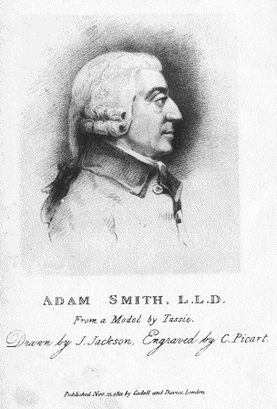
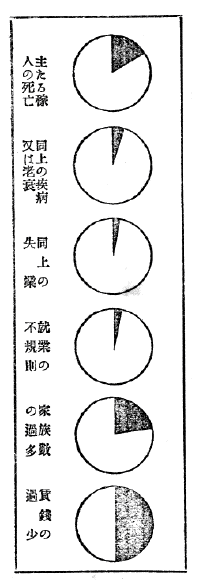
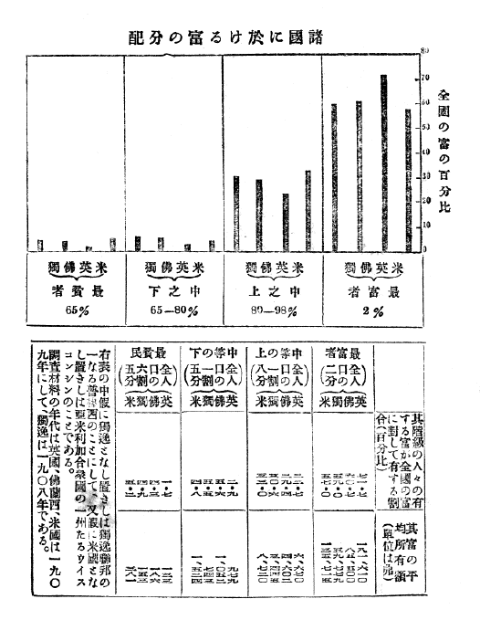
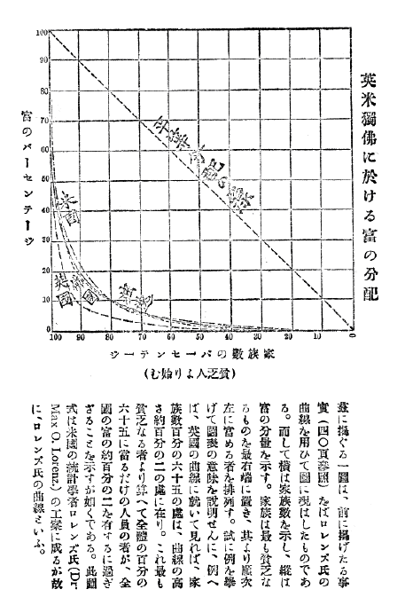
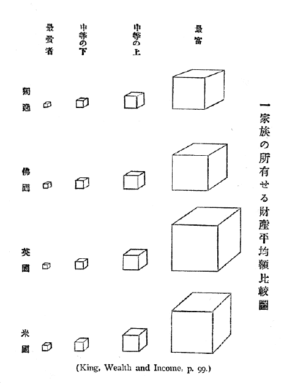
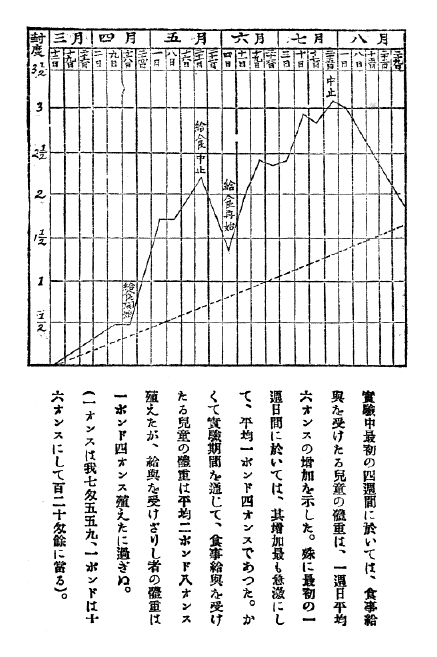
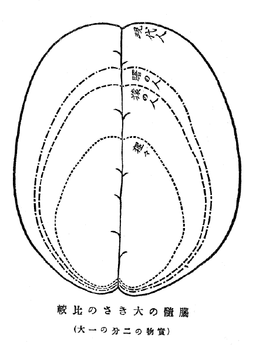
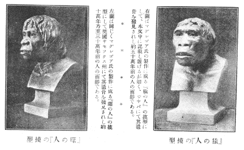
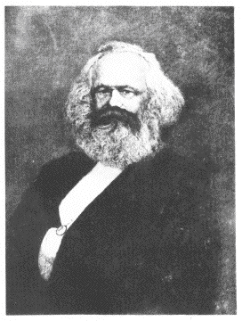
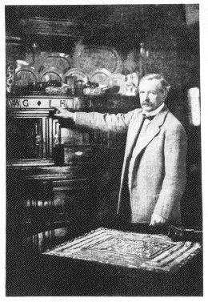

| 貧乏物語 | |
| 河上 肇 | |
| (2012) | |
貧乏物語
河上肇
序
この物語は、最初余が、大正五年九月十一日より同年十二月二十六日にわたり、断続して大阪
朝日新聞に載せてもらったそのままのものである。今これを一冊子にまとめて公にせんとするに当たり、余は幾度かこれが訂正増補を企てたれども、筆を入るれば入るるほど統一が破れて襤褸
が出る感じがするので、一二文字の末を改めたほかは、いったん加筆した部分もすべて取り消して、ただ各項の下へ掲載された新聞紙の月日を記入するにとどめておいた。ただし貧乏線を論ずるのちなみに額田
博士の著書を批評した一節は、その後同博士の説明を聞くに及び、余にも誤解ありしを免れずと信ずるに至りしがゆえに、これを削除してやむなくその跡へ他の記事を塡充
し、また英国の食事公給条例のことを述べし項下には、事のついでと思って、この条例の全文を追加しておいた。ただこの二個所がおもなる加筆であるが、しかしそれでさえ、こうして印刷してみると、いかにもよけいなこぶができたようで、むだなことをしたものだと後悔している次第である。過去十数年間私はいろいろな物を書いたけれども、この論文ほどまとまったものはない。自分ではこれが今日までの最上の著作だと思う。と言ったからとて、――念のために付け加えておくが――世間の相場でこれを良書の一と認めてもらいたいなどという意味の要求をするのでは毛頭ない。
人はパンのみにて生くものにあらず、されどまたパンなくして人は生くものにあらずというが、この物語の全体を貫く著者の精神の一である。思うに経済問題が真に人生問題の一部となり、また経済学が真に学ぶに足るの学問となるも、全くこれがためであろう。昔は孔子のいわく、富にして求むべくんば執鞭
の士といえども吾
またこれを為
さん、もし求むべからずんばわが好むところに従わんと。古
の儒者これを読んで、富にして求めうべきものならば賤役
といえどもこれをなさん、しかれども富は求めて得
べからず、ゆえにわが好むところに従いて古人の道を楽しまんと解せるがごときは、おそらく孔子の真意を得たるものにあらざらん。孔子また言わずや、朝
に道を聞かば夕べに死すとも可なりと。言うこころは、人生唯一の目的は道を聞くにある、もし人生の目的が富を求むるにあるならば、決して自分の好悪をもってこれを避くるものにあらず、たといいかようの賤役なりともこれに従事して人生の目的を遂ぐべけれども、いやしくもしからざる以上、わが好むところに従わんというにある。もし余にして、かく解釈することにおいてはなはだしき誤解をなしおるにあらざる以上、余はこの物語において、まさに孔子の立場を奉じて富を論じ貧を論ぜしつもりである。一部の経済学者は、いわゆる物質的文明の進歩――富の増殖――のみをもって文明の尺度となすの傾きあれども、余はできうるだけ多数の人が道を聞くに至る事をもってのみ、真実の意味における文明の進歩と信ずる。しかも一経済学者たる自己現在の境遇に安んじ、日々富を論じ貧を論じてあえて倦
むことなきゆえんのものは、かつて孟子
の言えるがごとく、恒産
なくして恒心
あるはただ士のみよくするをなす、民のごときはすなわち恒産なくんば因
って恒心なく、いやしくも恒心なくんば放辟邪侈
、ますます道に遠ざかるを免れざるに至るを信ずるがためのみである。ラスキンの有名なる句に There is no wealth, but life（富何者ぞただ生活あるのみ）ということがあるが、富なるものは人生の目的――道を聞くという人生唯一の目的、ただその目的を達するための手段としてのみ意義あるに過ぎない。しかして余が人類社会より貧乏を退治せんことを希望するも、ただその貧乏なるものがかくのごとく人の道を聞くの妨げとなるがためのみである。読者もしこの物語の著者を解して、飽食暖衣をもって人生の理想となすものとされずんば幸いである。
著者経済生活の理想化を説くや、高く向上の一路をさすに似たりといえども、彼あによくその説くところを自ら行ない得たりと言わんや。ただ平生の志を言うのみ。しかも読者もしその人をもってその言を捨てずんば、著者の本懐これに過ぐるはあらざるべし。
巻頭に掲ぐるところの画像は、経済学の開祖アダム・スミスの肖像である。今や氏の永眠をさること百有余年、時勢の変に伴うて学説の改造を要するものもとより少なからずといえども、いやしくも斯学
を攻究する者にして氏の学恩をこうむらざる者はほとんどまれなり。ことにその潜心窮理の勝躅
に至っては、ことごとく採ってもって後学の範となすべきものがある。すなわちその画像を巻首に載せ、いささか追慕の意を表する次第である。原図はアダム・スミス永眠後二十年、すなわち一八一一年の十一月二十五日、ロンドンなる一書林より発売せし一枚売りの肖像にして、現に京都帝国大学付属図書館に蔵するもの。印刷の都合により画像とその下なる数行の文字との間隔をば少しく縮めたるほかは、きわめて忠実に原図を複写せしものである。
この物語には細目を付せず。こは必ずしも労をいといてにはあらず、ただ読まるべくんば全編を通読されんこと、これ著者の希望なるがためである。
付録としてロイド・ジョージに関する拙文二編を収む。一は昨年の七月執筆せしものにて、他は本年の一月稿を成せしものである。けだし氏は真に貧乏根治の必要を理解せる大政治家の一人として、著者の平生最も尊敬するところ。あわせ録して敬意をいたすの徴となすゆえんである。
本書の装幀
はすべて舎弟の手を煩わす。すなわち本書の印刷と発行は皆これを京都において営み得たるが上に、文章と装幀に至ってはことごとくわが家の産物である。思うにこの書成るの日、一本を父に送らば、おそらく莞爾
としてしばらくは手に巻を放たれざらん。
大正六年一月二十五日
京都 河上肇
目次
いかに多数の人が貧乏しているか（上編）
何ゆえに多数の人が貧乏しているか（中編）
いかにして貧乏を根治しうべきか（下編）
付録
ロイド・ジョージ
さし絵
アダム・スミスの肖像
猿
の人と曙
の人の模型
カール・マルクス肖像
ロイド・ジョージ肖像
［＃目次のページ数および「解題（大内兵衛）」「追記」は省略しました］
Eine fruchtbare Behandlung der sozialen Frage wird nur demjenigen gelingen, der siemit der Erkenntnis der Unlösbarkeit des Problems beginnt.--Heinrich v. Sybel, 1895.
The tremendous labour question remains absolutely untouched--the question whether the toil of a life is not to provide a sufficiency of bread. No thoughtful man can for a moment suppose that this question can be put aside. No man with a head and heart can suppose that any considerable class of a nation will submit for ever to toil incessantly for bare necessaries----without comfort, ease, or luxury, now----without prospect for their children, and without a hope for their own old age.--Harriet Martineau, 1878.

貧乏物語
河上肇著
一の一
驚くべきは現時の文明国における多数人の貧乏である。一昨昨年（一九一三年）公にされたアダムス氏の『社会革命の理＊』を見ると、近々のうちに社会には大革命が起こって、一九三〇年、すなわちことしから数えて十四年目の一九三〇年を待たずして、現時の社会組織は根本的に顚覆
してしまうということが述べてあるが、今日の日本にいてかかる言
を聞く時は、われわれはいかにも不祥不吉
な言いぶんのように思う。しかし翻って欧米の社会を見ると、冷静なる学究の口からかかる過激な議論が出るのも、必ずしも無理ではないと思わるる事情がある。英米独仏その他の諸邦、国は著しく富めるも、民ははなはだしく貧し。げに驚くべきはこれら文明国における多数人の貧乏である。
＊ Brooks Adams, Theory of Social Revolutions, 1913.
私は今乾燥無味の統計を列挙して多数貧民の存在を証明するの前、いうところの貧民とはなんぞやとの問題につき、一応だいたいの説明をする必要がある。
昔釈雲解という人あり、「予他邦に遊学すること年有りて、今文政十二己丑
の秋郷
に帰る時に、慨然として心にいたむ事有りて、一夜これを燈下に草
して里人にあとう」と言いて『生財弁』一巻（『通俗経済文庫』第二巻に収む）を著わす。その中にいう「貧
しきと賤
しきとは人の悪
むところなりとあらば、いよいよ貧乏がきらいならば、自ら金持ちにならばと求むべし、今わが論ずるところすなわちその法なり、よっていっさい世間の貧と福とを引き束ねて四通りを分かつ、一ツには貧乏人の金持ち、二ツには金持ちの貧乏人、三ツには金持ちの金持ち、四ツには貧乏人の貧乏人」。すなわちこの説に従わば、貧乏人には金持ちの貧乏人と貧乏人の貧乏人との二種あることとなる。
今余もいささか心にいたむ事あってこの物語を公にする次第なれども、論ずるところ同じからざるがゆえに、貧乏人を分かつこともまたおのずから異なる。すなわち余はかりに貧乏人を三通りに分かつ。第一の意味の貧乏人は、金持ちに対していうところの貧乏人である。しかしてかくのごとくこれを比較的の意味に用い、金持ちに対して貧乏人という言葉を使うならば、貧富の差が絶対的になくならぬ限り、いかなる時いかなる国にも、一方には必ず富める者があり、他方にはまた必ず貧しき者があるということになる。たとえば久原
に比ぶれば渋沢
は貧乏人であり、渋沢に比ぶれば河上
は貧乏人であるというの類である。しかし私が、欧米諸国にたくさんの貧乏人がいるというのは、かかる意味の貧乏人をさすのではない。
貧乏人ということばはまた英国の pauper すなわち被救恤者
という意味に解することもある。かつて阪谷
博士は日本社会学院の大会において「貧乏ははたして根絶しうべきや」との講演を試み、これを肯定してその論を結ばれたが、博士のいうところの貧乏人とはただこの被救恤者をさすのであった。（大正五年発行『日本社会学院年報』第三年度号）。私はこれをかりに第二の意味の貧乏人と名づけておく。ひっきょう他の救助を受け人の慈善に依頼してその生活を維持しおる者の謂
であるが、かかる意味の貧乏人は西洋諸国においてはその数もとより決して少なしとはせぬ。たとえば一八九一年イングランド（ウェールズを含む）の貧民にして公の救助を受けし者は、全人口千人につき平均五十四人、すなわち約十八人につき一人ずつの割合であり、六十五歳以上の老人にあっては、千人につき平均二百九十二人、すなわち約三人に一人ずつの割合であった。統計は古いけれども、これでその一斑はわかる。さればこの種の貧民に関する問題も、西洋諸国では古くからずいぶん重要な問題にはなっているが、しかしこれもまた私がここに問題とするところではない。
私がここに、西洋諸国にはたくさんの貧乏人がいるというのは、経済学上特定の意味を有する貧乏人のことで、かりにこれを第三の意味の貧乏人といっておく。そうしてそれを説明するためには、私はまず経済学者のいうところの貧乏線＊の何ものたるやを説かねばならぬ。
（九月十二日）
＊ "Poverty line."
一の二
思うにわれわれ人間にとってたいせつなものはおよそ三ある。その一は肉体
であり、その二は知能
であり、その三は霊魂
である。しかして人間の理想的生活といえば、ひっきょうこれら三のものをば健全に維持し発育させて行くことにほかならぬ。たとえばからだはいかに丈夫でも、あたまが鈍くては困る。またからだもよし、あたまもよいが、人格がいかにも劣等だというのでも困る。されば肉体
と知能
と霊魂
、これら三のものの自然的発達をば維持して行くがため、言い換うれば人々の天分に応じてこれら三のものをばのびるところまでのびさして行くがため、必要なだけの物資を得ておらぬ者があれば、それらの者はすべてこれを貧乏人と称すべきである。しかし知能
とか霊魂
とかいうものは、すべて無形のもので、からだのように物さしで長さを計ったり、衡
で目方を量ったりすることのできぬものであるから、実際に当たって貧民の調査などする場合には、便宜のため貧乏の標準を大いに下げて、ただ肉体のことのみを眼中に置き、この肉体の自然的発達を維持するに足るだけの物をかりにわれわれの生存に必要な物と見なし、それだけの物を持たぬ者を貧乏人として行くのであって、それが私のいう第三の意味の貧乏人である。
さてこの肉体を維持するに最も必要なるものは食物であるが、これはもろもろの学者の精密な研究の結果によりて、西洋では大人
の男子で普通の労働をしている者は、まず一日三千五百カロリーの熱量を発するだけの食物を取ればよいということがわかっておる。有名なるローンツリー氏の貧民調査などはすなわちこれを標準としたものである。ここに一カロリーというは、水一キログラム（すなわち二百六十七匁）を摂氏の寒暖計にて一度だけ高むるに要する熱の分量である。けだしわれわれ人間のからだはたとえば蒸気機関のごときもので、食物という石炭を燃やさなければ、この機械は運転せぬのである。そこでそのからだという機械の運転に必要な食物の分量は、これを科学的に計算するに当たりては、米何合とか肉何斤とか言わずに、すべてカロリーという熱量の単位に直してしまうのである。
しからば人間のからだを維持するにちょうど必要な熱の分量はこれをいかにして算出するかというに、これについてはいろいろの学者の種々なる研究があるが、試みにその一例を述ぶれば、監獄囚徒に毎日一定の労働をさせ、そうしてそれに一定の食物を与えて、その成績を見て行くのである。最初充分に食物を与えずにおくと、囚徒らは疲労を感じて眠 たがる。何か注文があるかと聞くと、ひもじいからもっと 食べさしてほしいと言う。そうして体量を秤 って行くとだんだんに減ずるのである。そこで次には食物の分量をずっと ふやしてみる。そうすると体重はふえだす。何か注文があるかと聞くと、今度はもう少しうまい 物を食べさせてほしいというようにぜいたくを言いだす。食物に対する欲求が分量から品質に変わって来る。英国のダンロップ博士がスコットランドの囚徒について試験したのはこの方法によったものであるが、この時の成績（一九〇〇年パリーに開催されたる第十三回万国医学大会において報告）によると、二個月間毎日三千五百カロリーの熱量を有する食物を与えておいた時には、普通の体重を有する囚徒のうち約八割二分の者は次第にその体重を減じて来たが、三千七百カロリーの熱量を有する食物を与えてみると、約七割六分の者は次第にその体重を増加するかまたは維持することができたという。すなわちこの時の試験によると、三千五百カロリーの熱量を有するだけの食物では少し不足だという事になるのだけれども、しかし試験に供せられた囚徒は日々石切りを仕事としている者で、相当激しい労働に従事していたわけなので、現にダンロップ博士自身も普通の人で軽易な仕事をしておる者には三千百カロリーの食物で充分だろうと言っているのである。そこでローンツリー氏の貧民調査などでは、前に述べたごとく三千五百カロリーをもって普通の労働に従事せる大人 の男子に必要な一日分の熱量と見なしたのである。
（九月十三日）
一の三
西洋と日本とにては気候風土も同じからず、また西洋人と日本人とにては人種体質も異なる次第なれば、一概には定めがたけれども、前回に述べしようの方法にて、西洋にては男子の大人
にて普通の労働に従事する者は、一日約三千五百カロリーの熱量を有する食物を摂取せば可なりということ、ほぼ学者間の定説である。よりてこれを大体の標準となし、女子ならばいかほど、子供ならばいかほどというように、性及び年齢に応じて、それぞれ必要な食物の分量を決めて行くのである。
ちなみにいう、先の大統領タフト氏を総裁とせる米国生命延長協会の校定に成れる『いかに生活すべきか＊』を見るに、一日一人の所要熱量をば約二千五百カロリーとしてある。すなわちこれに比ぶれば、前に述べたるローンツリー氏らの標準ははなはだ過大に失せるがごとく見ゆるも、かかる差異は、食物と労働との関係を計算に入るると否とによりて生ずるのである。現に『いかに生活すべきか』には「普通の座業者は一日約二千五百カロリーを要する、しかしからだが大きくなればなるほど、また肉体的労働に従事すればするほど、ますます多くの食物を要する」と断わってある。しかるに貧乏人は、いずれの国においても最も多くの肉体的労働に従事しつつあるものである。これ貧乏線測定の標準とすべき所要食料の分量が、普通人のために設けられたる標準とやや相違するところあるゆえんである。
＊ How to Live, 1916. p. 30.
思うに所要熱量が労働の多少に大関係を有することは論をまたぬが、試みにその程度を示さんがために、私は左に一表を掲げる。これはフィンランドの大学教授ベケル及びハマライネンの二氏が、個々の労働者につきその実際に消費するところの熱量を測定したものである。
職業 年齢 身長（フィート―インチ） 体重（ポンド） 休業中一時間内の消費熱量 労働中一時間内の消費熱量 一日間の消費総熱量（八時間労働、十六時間休養）
製靴業
五六 五―〇 一四五 七三 一七二 二五四四
同 三〇 五―八 一四三 八七 一七一 二七六〇
裁縫師 三九 五―五 一四一 七二 一二四 二一四四
同 四六 五―一〇・五 一六一 一〇二 一三五 二七一二
製本業 一九 六―〇 一五〇 八七 一六四 二七〇四
同 二三 五―四・五 一四三 八五 一六三 二六六四
金属工 三四 五―四 一三九 八一 二一六 三〇二四
同 二七 五―五 一三〇 九九 二一九 三三三六
ペンキ塗り 二五 五―一一 一五四 一〇四 二三一 三五一二
同 二七 五―八 一四七 一一一 二三〇 三六一六
指物師
四二 五―七 一五四 八一 二〇四 二九二八
同 二四 五―五・五 一四一 八五 二四四 三三一二
石工 二七 五―一一 一五六 九〇 四〇八 四七〇四
同 二二 五―八 一四一 八五 三六六 四二八八
木挽
四二 五―五 一六七 八六 五〇一 五三八四
同 四三 五―五 一四三 八四 四五一 四九五二
（右『いかに生活すべきか』一九五ページに引くところを抄録す＊）
＊ Skandinavisches Archiv für Physiologie. XXXI. Band 1, 2 u. 3. Heft, Leipzig.
右の表によりて見る時は、われわれの所要熱量は労働中と休業中とによりて大差あり、また労働の種類によりて大差あることが、きわめて明瞭
である。しかして私がここに特に読者の注意を請わんとするは、労働中と休業中とにおける所要熱量の差異であるが、右の表によれば、木挽
業者のごときは、その労働中の所要熱量は休業中のほとんど五倍ないし六倍に達するのである。さればこれら労働者の摂取すべき熱量を定むるに当たりては、常にその労働時間の多少を考慮に入るるの必要あるものにて、現に前表における木挽
のごとき、一日八時間の労働ならば、その消費総熱量は約五千カロリーなれども、もし労働時間を延長してかりに十二時間となさんか、約七千カロリーを要する計算となるのである。
労働時間の長短が所要熱量の多少に影響することかくのごとし。しかしてこの点より言えば、日本の労働者は西洋の労働者に比して、からだこそ小さけれ、はるかに多くの労働時間に服しつつあるがゆえに、その所要食料は西洋人に比しはなはだしき差異はなかるべきかと思う。
さて話がつい横道にそれたが、すでに一人前の生活に必要な食物の分量が決まったならば、次にはそれだけの食物を得るのにいかほどの費用がいるかを見なければならぬ。詳しく言えば、所定の熱量を有する食物を得るのに、できうるだけじょうずに、すなわちなるべく安くてしかもなるべく滋養価の多いものを買うことにすれば、一定の物価の下で、およそいかほどの費用がかかるかを調べるのである。そうすれば、一人の人間の生活に必要な食料の最低費用が計算できるはずである。
かくのごとくにして、食費のほか、さらに被服費、住居費、燃料費及びその他の雑費を算出し、それをもって一人前の生活必要費の最下限となし、これを根拠として貧乏線という一の線を描く。しかしてこの線こそ、実際の調査に当たり、私が先にいうところの第三の意味における貧富の標準となるもので、すなわちわれわれは、この一線によって世間の人々を二類に分かち、かくてこの線以下に下れる者、言い換うればこの生活必要費の最下限に達するまでの所得をさえ有しおらざる者は、これを目 して貧乏人となし、これに反しこの線以上に位しそれ以上の所得を有しいる者は、これを貧乏人にあらざる者と見なすのである。
（九月一四日）
一の四
私はすでに貧乏線の何ものたるやを説明し、従うてまた第三の意味における貧乏人の何ものたるやも一応は説明したわけである。しかしまだその話を続けなければならぬというのは、貧乏線以上にある者とそれ以下にある者とのほかに、あたかもその線の真上に乗っている者があるからである。ここにあたかも貧乏線の真上に乗っている者というのは、その収入がまさに前回に述べたる生活必要費の最下限に相当しつつある者の謂
である。従うてこれらの輩は、その収入の全部をばあげて肉体の健康を維持するの用途にのみあつるならば、かろうじて栄養不足に陥ることを免るれども、もしこれと異なり、少しにてもその収入をば肉体の健康を維持するの目的以外に費やすならば、それだけ食費その他の必要費に不足を生じ、その健康をそこのうことになるのである。言うまでもなく、肉体の健康を維持する費用のみがわれわれの生活に必要な費用の全部ではない。たとえば衣服にしても、職業の種類によっては、単に寒暑を防ぎ健康に害なきだけのもので満足しておるわけにはゆかぬ。また子供がおれば学校にも出さなければならぬ。親の情としてただに子供の肉体を丈夫に育てるのみならず、その精神霊魂をも健全に育てる苦心をしなければならぬ。しかしまさに貧乏線上にある人々は、すべてかくのごとき用途にあつべき余裕をもたぬ者であるから、たといいかに有益または必要なる事がらなりとも、もし肉体の健康維持という目的以外に何らかの支出をするならば、これらの人々はそれだけ肉体の健康を犠牲にしなければならぬのである。煙草
を用い酒を飲みなどすれば無論のこと、新聞紙を購読しても、郵便一つ出しても、そのたびごとに肉体の健康を犠牲にしなければならぬのである。
まさに貧乏線上に乗りおる人々の生活はかくのごときものである。それゆえわれわれは、ただに貧乏線以下にいる人々をもって貧乏人に編入するのみならず、あたかもその線の真上に乗りおる人々をもやはり貧乏人として計上するのである。ここにおいてか、いうところの貧乏人はおのずから分かれて二種類となる。すなわちかりに名づけて第一級の貧乏人というは、前回に述べたるごとく、貧乏線以下に落ちおる人々のことにして、また第二級の貧乏人というは、以上述べきたりしがごとく、まさに貧乏線の真上に乗っている人々のことである。しかしてこれら第一級及び第二級の貧乏人こそ、以下この物語の主題とするところの貧乏人である。
これによって見れば、私がこの物語でいうところの貧乏人なる者の標準は、その程度が実にはなはだしく低いものなのである。私は、次回から西洋における貧乏人のきわめて多数に上りつつある事を述べようと思うが、私はあらかじめ読者に向かって、その時私の列挙するところの数字はいずれもほぼ以上の標準によるものなることを忘れられぬよう希望しておく。ことわざに、すべて物事を力強く他人の頭に打ち込むためにはこれを誇張するよりもむしろ控えめに言えということがあるが、私は何もそんな意味の政略からわざと話を控えめにするのではない。ただ叙述を正確にするために、従来人々の採用した標準をば、ただそのまま襲踏しようとするに過ぎぬ。
さて私は以上をもって貧乏なる語に種々の意味あることを明らかにし、ようやくこの物語の序言を終うるを得た。今振り返ってこれを要約するならば、貧乏なる語にはだいたい三種の意味がある。すなわち第一の意味における貧乏なるものは、ただ金持ちに対していう貧乏であって、その要素は「経済上の不平等
」である。第二の意味における貧乏なるものは、救恤
を受くという意味の貧乏であって、その要素は「経済上の依頼
」にある。しかして最後に述べたる意味の貧乏なるものは、生活の必要物を享受しおらずという意味の貧乏であって、その要素は「経済上の不足
」にある。
すでに述べしごとく、この物語の主題とするところは、もっぱら第三の意味における貧乏であるけれども、なお時としては、おのずから第一ないし第二の意味の貧乏に言及することもありうる。しかしその時には必ず混雑を避くるために、私は常に相当の注意を施すことを忘れぬであろう。
（九月十五日）
二の一
私のいうところの貧乏人の意味は、前数回において私のすでに説明したところである。しからばその標準にもとづき、今日の文明諸国において、かくのごとき貧乏人ははたしてどれだけいるかというに、そは実に驚くべき多数に上りつつある。
試みに世界最富国の一たる英国の状態についてその一斑を述べんに、一八九九年富裕なる商人の篤志家ローンツリーなる人がヨーク市（当時人口七万五千八百十二人）にて綿密なる調査をなせし結果によれば、当時第一級の貧乏人に属する者総数七千二百三十人、いずれも皆労働者階級のものなるが、これをば労働者総数に比較せばその一割四分四厘六毛に当たり、人口総数に比較せばその九分九厘一毛を占む。また第一級及び第二級の貧乏人を合計せばその総数二万三百二人、これまたいずれも労働者階級の者にして、その割合は実に労働者総数の四割三分四厘、人口総数の二割七分八厘四毛であったという。これは特に経済界の好景気なりし一八九九年の調査なれども、その結果は実にかくのごときものであった。すなわち貧乏線以上に抜け出ることあたわず、肉体の健康を維持するだけの所得さえ十二分に得
ることあたわざる者が、全市人口のほとんど三割に近づきつつあることがわかったのである＊。
＊ B. Seebohm Rowntree, Poverty : A Study of Town Life.
なおこれより先リバープールの商人にして船主なりしチャーレス・ブースなる人（氏は近ごろ永眠せり）は、少なからざる年月と私財の大半とをさいて、ロンドン全市にわたる大規模の貧民調査をしたことがある。そうしてその結果は『ロンドンにおける人々の生活及び労働』という大冊十巻の著書となって公にされ、その第一編は「貧乏」と題してあって、これは二巻から成り立ち、初めて一八九一年に出版されたものであるが、それで見ると、ロンドンにおける貧乏人の割合（百分比）は総体の人口の内で
最下層民 (The lowest class) 〇・九％［＃「％」は底本では「・」の右横に付く］
細民 (The very poor) 七・五
貧民 (The poor) 二二・三
となっておる、すなわちこれを合計すると全体の人口のうち三割零七厘だけのものは貧乏人だということになっておる＊。もっともこのブース氏の調査は、先に貧乏線の何ものたるやを説明せし時述べたるがごときさまで正確なる標準によったものではないが、ともかくこの調査が発表された時には、それはロンドン市だけのことで、他の都会になるとよほど事情が違うだろうという説がもっぱら行なわれていたのである。ところがローンツリー氏がさらに物静かないなか町のヨークで調査を遂げてみたところが、前に述べたごとく、ロンドンにおける調査の結果とほとんど同じ事実が出て来たのである。
＊ Charles Booth, Life and Labour of the People in London. First series : Poverty. 1902 (1st ed. 1891) vol. 2, pp. 20, 21.
同じような事が続くのでおもしろくないが、話を正確にするために今一つ最近に行なわれた調査のことを簡単に述べておくが、これは一九一二年の秋から翌一九一三年の秋にかけて行なわれた調査で、その結果は統計学者のボウレイという人とバーネット・ハーストという人との共著になって昨年（一九一五年）公にされたものである。これは先に述べたローンツリー氏のそれのごとく調査の範囲を一都市に限らずして、なるべく事情を異にせる都市をば四個所だけ選び、それについて調査を行なったのであるが、場所によるとローンツリー氏の調査の結果よりもいっそうひどい成績が出た所もあるのである。すなわちローンツリー氏の調査の時は、第一級の貧乏人に属する者は全市人口の一割弱であったのが、今度の調査によると、レディング（スコットランドの中央東部に位する人口約八万七千の都市）では全市人口の五分の一（すなわち二割）、ウォリントン（イングランドの北西でウェールズに近き所の海岸に位する人口約七万二千の都市）では全市人口の八分の一が第一級の貧乏人であって、これらはいずれもヨーク市よりひどいのである。しかしノルザンプトン（イングランドの中部でロンドンの北西に位する人口約九万の都市）ではその割合十二分の一、スタンレー（ロンドンの西に位せる人口約二万三千の小都市）では十七分の一に過ぎなかったので、これらはヨーク市よりも良好の状態にあるわけである＊。
＊ Bowley and Burnett-Hurst, Livelihood and Poverty, 1915. pp. 34--38.
かくのごとく都市の経済事情いかんによってその割合は必ずしも一様でないけれども、ともかく以上述べたる二三の例によって見る時は、世界最富国の一たる大英国にも、肉体の健康を維持するだけの所得さえもち得ぬ貧乏人が、実に少なからずおることがわかる。
なお以上述べしところは、ブース氏の調査を始めとし、すべて第二の意味の貧乏人（すなわち慈善工場その他救貧制度の恩恵の下に生活しつつある被救恤者 ）は皆除外してあって、それは少しも計算に入れてないのである。してみると、いかに貧乏人が英国にたくさんいるかということがますますよくわかる。げに英国は世界一の富国というけれども、その英国には貧乏人がかくのごとくたくさんいるのである。
（九月十六日）
二の二
今日の英国にいかに多くの貧乏人がいるかという事は、私のすでに前回に述べたところである。今かくのごとき多数の貧乏人の生ずる根本原因はしばらくおき、かりにその表面の直接原因を調べてみるに、たとえば先に述べたヨーク市の研究によれば、第一級の貧乏人の原因別（百分比）は次のごとくである。（ローンツリー『貧乏』縮刷版、一五四ページ＊）
主たるかせぎ人は毎日規則正しく働いていながら
ただその賃銭が少ないため......................................................五一・九六％［＃「％」は底本では「・」の右横に付く］
家族数の多いがため（四人以上の子供を有する者）.....................二二・一六
主たるかせぎ人の死亡のため...................................................一五・六三
主たるかせぎ人の疾病又は老衰のため..........................................五・一一
主たるかせぎ人の就業の不規則のため..........................................二・八三
主たるかせぎ人の無職のため......................................................二・三一
＊ Rowntree, Poverty (Cheap edition), p. 154.

ことわざにかせぐに追い付く貧乏なしというが、右の表によって見れば、毎日規則正しく働いていながらただ賃銭が少ないために貧乏線以下に落ちている者が、全体の半ば以上すなわち約五割二分に達しているのである。なお四人以上の子供を有する者は、家族数の多いがためにという原因の方に編入されているのだが、もしそれを合計するならば、第一級の貧乏人のうち約七割四分だけのものは、毎日規則正しくかせいでいながら、ただ賃銭が少ないかまたは家族数が多いがために貧乏線以上に浮かび得ぬのである。そうして主たるかせぎ人の疾病または老衰のために、あるいはその無職のために、あるいは就業の不規則なるがために貧乏している者は、すべてそれらを合計するも全体の一割二分余に過ぎぬのである。
さらにレディング、ウォリントン、ノルザンプトンの三都市について（スタンレイ市は鉱業地にして事情を異にするのみならず、調査材料少なきがゆえに除外す）、第一級の貧乏人の原因別（百分比）を見るに次のごとくである。（ボウレイ『生計と貧乏』四〇〇ページ＊）
レディング市 ウォリントン市 ノルザンプトン市
主たるかせぎ人の死亡のため.............................. 一四 六 二一
主たるかせぎ人の疾病または老衰のため............ 一一 一 一四
主たるかせぎ人の無職のため.............................. 二 三 〇
主たるかせぎ人の就業の不規則のため.................. 四 三 〇
主たるかせぎ人は毎日規則正しく
働いていながら賃銭の少なきため........................ 四八 六〇 三〇
子供の数三人ならばさしつかえなきところを
三人以上いるがため.......................................... 二一 二七 三五
合計............................................................一〇〇 一〇〇 一〇〇
＊ Bowley, Livelihood and Poverty, p. 400.
前に引きし『生財弁』という書をひもとけば、「世間を見るに、貧乏も富貴も多くはおのが求めてするところにて、貧乏がすきか富貴がすきかといえば、だれ一人私は貧乏がすきじゃというて出るものはあるまいけれど、かせぐ事をきらいただ銭
がつかいたいは貧乏を好むなり」など説いてあるが、著者もし今日に生きて、ローンツリー氏やボウレイ氏の著作を見るに及びたらば、おそらくその言を改むるに躊躇
せざるべしと思う。私は去るころ近県のある小学校に行った時、学校から児童に渡されたところの「一日一善」と題する日記帳をもらったが、帰ってからそれを調べてみると、その日記帳の日々の余白へ格言ようのものが印刷してある。その一に
身のほどをしりからげしてかせぎなば
貧乏神のつくひまもなし
という歌があった。また近ごろ『町人身体柱立
』（今より約百五十年前明和七年の開版）という本を見ると、（『通俗経済文庫』第一巻に収む）、その中にも同じような意味の歌がある。すなわち
身をつとめ精出す人は福の神
いのらずとても守りたまわん
というのであるが、これらの教訓歌は昔の自足経済時代ならばともかく、少なくとも今日の西洋には通用せぬものである。世間にはいまだに一種の誤解があって「働かないと貧乏するぞという制度にしておかぬと、人間はなまけてしかたのない者である、それゆえ貧乏は人間をして働かしむるために必要だ」というような議論もあるが、少なくとも今日の西洋における貧乏なるものは、決してそういう性質のものではなく、いくら働いても、貧乏は免れぬぞという「絶望的の貧乏」なのである。
尋常小学読本を見ると、巻の八の「働くことは人の本分」というところに「働くことがなければ食物も買われないし、着物もこしらえられない。人の幸福は皆自分の働きで産み出すほかはない。何もしないで遊んでいるのは楽のように見えるが、かえって苦しいものである」とあるが、日本の事はよるべき正確な調査がないからしばらくおくも、少なくとも今日の英国などでは、これは誤解または虚偽である。今日の英国にては、前にも述べしごとく、毎日規則正しく働いていながらわずかに肉体の健康を維持するだけの衣食さえ得あたわぬ者がすこぶる多いと同時に、他方には全く遊んでいながら驚くべきぜいたくをしている者も決して少なくはない。何もしないで遊んでいるのこそ苦しいだろうが、いろいろな事をして遊んでいるのは、飢えながら毎日働いているよりもはるかに楽であろう。欧米の社会に不平の絶えざるも不思議ではない。
（九月十七日）
二の三
貧乏人の多いのは英国ばかりではない、英米独仏その他の諸国、国により多少事情の相違ありとも、だいたいにおいていずれも貧乏人の多い国である。たとえばハンター氏が米国の状態につき推算せしところによれば、私のいう第二の意味の貧乏人、すなわち各種の慈善団体に属する貧乏人はその数四百万人にて、さらに第三の意味の貧乏人、すなわちこれら慈善団体の恩恵より独立して生活しつつある貧乏人はその数六百万人、これらを合計すれば米国における貧乏人の総数は実に一千万人に達しつつあるという。（ハンター氏『貧乏』一九一二年、第十四版、六〇ページ＊）。思うにかくのごとき事実は列挙しきたらばおそらく際限はあるまい、しかし私は読者の倦怠
を防ぐため、もはやこの上同じような統計的数字を列挙するを控えるであろう。――私はこの物語をすべての読者に見ていただきたいとは思わぬが、しかしもし一度読み始められたかたがあるならば、こいねがわくは筆者の窮極の主張の那辺
にあるかを誤解せられざらんがため、これを最後まで読み続けられんことを切望する。それゆえ私はできうる限り、読者を釣
って逃がさぬくふうをしなければならぬ。
＊ Hunter, Poverty, 14th ed., 1912. p. 60.
ただここになお一言の説明を要するは、もし私の言うがごとく英米独仏の諸国にはたしてそうたくさんの貧乏人がおるならば、世間でこれらの諸国をさして世界の富国と称しておるのが怪しいではないかという疑問である。思うにこれらの諸国がたくさんの貧乏人を有するにかかわらず、なお世界の富国と称せられつつあるゆえんは、国民全体の人口に比すればきわめてわずかな人数ではあるが、そのきわめてわずかな人々の手に今日驚くべき巨万の富が集中されつつあるからである。貧乏人はいかに多くとも、それと同時に他方には世界にまれなる大金持ちがいて、国全体の富ははるかに他の諸国を凌駕
するからである。
試みに英、仏、独、米の四個国について富の分配のありさまを見るに、実に左表のごとくである。（昨年刊行キング氏著『米国人の富及び所得』九六ページ＊）。
＊ King, The Wealth and Income of the People of the United States, 1915. p. 96.

次の表は米国の統計学者キング氏がその近業に載すところである。私はめんどうを避くるがため、氏がいかなる材料をいかに利用することによってこの表を調製するに至ったかの説明を略する。いずれにしても決して正確なものではないが、しかしだいたいの趨勢はこれによってほぼ看取し得らるる。試みにその一斑を説明せんに、右の表のうち、最貧民とあるは、私が先に述べた第一の意味の貧乏人であって、すなわち富者に対する貧乏人という意味である。この表では、全国民中比較的に最も貧乏なものから数えて、だんだんに上にのぼり、かくて全人口数の六割五分に達するまでの人員をばかりに最貧民としてこれを一まとめにし、さてその人数から言えば全人口の六割五分に相当するだけの者が現に所有しつつある富の分量は、はたして全国の富の何割を占めつつあるやを見たのである。しかしてその結果は、表に示すがごとく国によって多少の相違はあるが、まずこれを英国について言えば、その六割五分だけの人間が寄り集まって持っている富の分量は、全国の富のわずかに一分七厘（百分の二弱）にしか当たらぬのである。比較的に下層階級の富有な米国でも、同じく全人口中六割五分だけの者が、全国の富のわずかに五分余りしか所有しておらぬのである。
さて最も貧乏なものから数えてまず全人口数の六割五分を取ったのちは、さらにだんだんに上にのぼって、今度は全人口数の一割五分に相当するだけの人員を一まとめにしてこれを中等の下となし、その次の一割八分に相当する者はこれを中等の上となし、最後に残れるもの、すなわち全国民中最も富めるものにして、人数より言えば全人口数のわずかに二分（百分の二）に相当する部分のものを、同じく一まとめにしてこれを最富者となし、おのおのの所有に属せる富の割合を算出したのである。

ここに掲ぐる一図は、前に掲げたる事実（三〇ページ参照）をばロレンズ氏の曲線を用いて図に現わしたものである。しかして横は家族数を示し、縦は富の分量を示す。家族は最も貧乏なるものを最右端に置き、それより順次左に富める者を排列す。試みに例をあげて図表の意味を説明せんに、たとえば、英国の曲線についてみれば、家族数百分の六十五の所は、曲線の高さ約百分の二の所にあり。これ最も貧乏なる者より数えて全体の百分の六十五に当たるだけの人員の者が、全国の富の約百分の二を有するに過ぎざることを示すがごとくである。この図式は米国の統計学者ロレンズ氏 (Dr. Max O. Lorenz) の工案に成るがゆえに、ロレンズ氏の曲線という。

今中等の上を略し、最後の最富者の部分を一瞥 するに、人数より言えば全人口のわずかに百分の二に相当するだけのものたるにかかわらず、その所有に属せる富は、英国にあっては全国の富の約七割二分、フランスにあってはその六割強、ドイツにあっては五割九分、米国にあっては五割七分に相当しているのである。貧富懸隔のはなはだしきこと、かくのごとし。ひっきょう英米独仏の諸国が貧乏人の実におびただしきにかかわらず、世界の富国と称せられつつあるは、古今にまれなる驚くべき巨富を擁しつつある少数の大金持ちがいるためである。
（九月十八日）
三の一
故啄木
氏は
はたらけど
はたらけどなおわが生活
楽にならざり
じっと手を見る
と歌ったが、今日の文明国にかくのごとき一生を終わる者のいかに多きかは、以上数回にわたって私のすでに略述したところである。今私はこれをもってこの二十世紀における社会の大病だと信ずる。しかしてそのしかるゆえんを論証するは、以下さらに数回にわたるべき私の仕事である。
貧乏がふしあわせだという事は、ほとんど説明の必要もあるまいと考えらるるが、不思議にも古来学者の間には、貧乏人も金持ちもその幸福にはさしたる相違の無いものであるという説が行なわれておる。大多数の諸君の知らるるごとく、アダム・スミスは近世経済学の開祖とも称さるべき人であるが、氏が今より百五十余年前（一七五九年）に公にした『道徳感情論』を見ると、氏は次のごとく述べている。
「......肉体の安易と精神の平和という点においては、種々の階級の人々がほとんど同じ平準にあるもので、たとえば大道のそばでひなたぼこをなしつつある乞食
のもっている安心は、もろもろの王様の欲してなお得
るあたわざるところである＊」
＊ Adam Smith, The Theory of Moral Sentiments, 6th ed., 1790. p. 311.
ただ今嵯峨
におらるる間宮英宗
師は禅僧中まれに見る能弁の人であるが、その講話集の中には次のごとき話が載せてある。前に掲げたるアダム・スミスの一句の注脚とも見なすべきものゆえ、これをそのまま左に借用する。
「昔五条の大橋の下に親子暮らしの乞食
が住んでいました。もとは相応地位もあり財産もあった立派な身分の者でありましたが、おやじが放蕩無頼
に身を持ちくずしたため、とうとう乞食とまで成り果てて今に住まうに家もなく、五条の橋の下でもらい集めた飯の残りや大根のしっぽを食べて親子の者が暮らしていたのであります。ところがちょうどある年の暮れ大みそかの事、その橋の上を大小
さして一人の立派なお侍が通りかかった。するとそこへまた向こうの方から一人の番頭ふうの男がやって参りまして、出会いがしらに『イヤこれは旦那
よい所でお目にかかりました』と言うと、そのお侍は何がよい所であろうか飛んだ所で出くわしたものだと心の内では思いながらもいたしかたがない、たちまち橋の欄干に両手をついて『番頭殿実もって申しわけがない、きょうというきょうこそはと思っていたのだけれども、つい意外な失敗から算当が狂ってはなはだ済まぬけれども、もう一個月ばかりぜひ待ってほしい』と言うのを、番頭はうるさいとばかりに『イヤそのお言いわけはたびたび承ってござる、いつもいつも勝手な御弁解もはやことしで五年にも相成りまする、きょうというきょうはぜひ御勘定を願わなければ、そもそも手前の店が立ち行きませぬ』と威丈高
になって迫りますと『イヤお前の言うところは全く無理ではないが、しかし武士ともあるものがこのとおり両手を突いてひらにあやまっているではないか、済まぬわけだが今しばらくぜひ猶予
してもらいたい』としきりにわび入る。これを橋の下で聞いていた乞食のせがれが、さてさてお侍だなんて平生大道狭しと威張っていくさるくせに商人ふぜいの者に両手をついてまであやまるとはなんとした情けない話であろう、いくら偉そうに威張っていたところで債鬼に責められてはあんなつらい思いもせなければならぬとすればつまらない、それを思うとわれわれの境界は実に結構なものだ、借金取りがやって来るでもなければ、泥棒
のつける心配もない、風が吹こうが雨が降ろうが屋根が漏る心配も壁がこわれる心配もない、飢えては一わんの麦飯に舌鼓をうち、渇しては一杯の泥水
にも甘露の思いをなす、いわゆる
一鉢千家ノ
飯 孤身送ル
二
幾秋ヲカ
一
一鉢
千家の飯、孤身幾秋をか送る
冬ハ
温ナリ
路傍ノ
草 夏ハ
涼シ
橋下ノ
流レ
冬は温
かなり路傍の草、夏は涼し橋下の流れ
非ズ
レ
色ニ
又非ズ
レ
空ニ
無ク
レ
楽復無シ
レ
憂 色
に非ず又空
に非ず、楽無く復
憂
い無し
若シ
人問ワバ
二
此ノ
六ニ
一
明月浮ブ
二
水中ニ
一
若
し人此の六に問わば、明月水中に浮かぶ
で、思えば自分らほどのんきな結構なものは世間にないとひとり言を言うて妙に達観していると、せがれのそばで半ば居眠
りをしていた親乞食がせがれがかように申しますのを聞いて、むっくと起き直り『これせがれ、そんな果報な安楽の身にいったいお前はだれにしてもろうたのか親様
の御恩を忘れてはならんぞ』と言うたというお話がござります」
「はたらけどはたらけどなおわが生活 楽にならざり、じっと手を見る」という連中が、この講話を聞いてはたして自分らほど果報な者は世にないと思うに至るであろうか、どうか。たとい彼ら自身はそう思うにしても、われわれははたして彼らを目して世に果報な人々とすべきであるか、どうか。それが私の問題とするところである。
（九月十九日）
三の二
五条河原
の乞食
の話は、話ぶりがあまり巧みなので、ついそのまま転載さしてもらう気になったが、もし私の記憶が間違っていなければ、かの大燈国師
のごときも同じく五条の橋の下でしばらく乞食
を相手に修養をしておられたので、その時の作になる
座禅せば四条五条の橋の上
ゆき来
の人を深山木
と見て
という歌は有名なものだということであるが、さてここに注意しなければならぬのは、大燈国師のような偉い人ならばこそ、乞食のまねをしていてもよいけれども、われわれごとき凡夫だと、孟子
のいわゆる民のごときは恒産
なくんば因
って恒心
なしで、心も魂も堕落こそすれ、とても明徳を明らかにするちょう人生の目的を実現する方向に進めるわけのものではない、ということである。そこで同じ貧乏を論ずるにつけても、自発的の貧乏すなわち自ら選択して進んで取った貧乏と、強制的の貧乏すなわちやむを得ず強制的に受けさせられている貧乏との区別を充分にしてかからねばならぬ。そうして私のここに論ずるところは、もちろんやむを得ず強制的に受けさせられている貧乏のことである。
叙してここにきたる時、私はハンター氏の『貧乏』の巻首にある次の一節を思い起こさざるを得ない。
「私は近ごろウィリアム・デーン・ホゥエルスに会うてトルストイを訪問したことを話したら、氏は次のごとく述べられた。『トルストイのした事は実に驚くべきものである。それ以上をなせというは無理である。最も高貴なる祖先を有する一貴族としては、遊んでいて食わしてもらうことを拒絶し、自分の手で働いて行くことに努力し、つい近ごろまでは奴隷の階級に属していた百姓らとできうる限りその艱難
辛苦を分かって行こうとした事が、彼のなしあとうべき最大の事業である。しかし彼が百姓らとともにその貧乏を分かつという事は、これは彼にとって到底不可能である。何ゆえというに、貧乏とはただ物の不足をのみ意味するのではない、欠乏の恐怖と憂懼
、それがすなわち貧乏であるが、かかる恐怖はトルストイの到底知るを得ざるところだからである＊。』......」
＊ Hunter, Ibid., p. 1.
げに露国の一貴族としてその名を世界にはせしトルストイにとっては、自発的貧乏のほか味わうべき貧乏はあり得なかったのである。
遠くさかのぼれば、昔慧可大師
は半臂
を断
って法
を求め、雲門和尚
はまた半脚を折って悟
に入った。今かかる達人の見地よりせば、いわゆる道のためには喪身失命
を辞せずで、手足
なお断つべし、いわんやこの肉体を養うための衣食のごとき、場合によってはほとんど問題にもならぬのである。しかしかくのごときは千古の達人が深く自ら求むるところあって、自ら選択して飛び込んだ特種の境界
である。もしわれわれ凡夫がへたに悟ってしいて大燈国師のまねをして、相率いて乞食
になったり、慧可・雲門にならって皆が臂
を切ったり脚
を折ったりした日には、国はたちまちにして滅びてしまうであろう。
思うに貧乏の人の身心に及ぼす影響については、古来いろいろの誤解がある。たとえば艱難 なんじを玉にすとか、富める人の天国に行くは駱駝 の針の穴を通るより難 しとかいうことなどあるがために、ややもすれば人は貧乏の方がかえって利益だというふうに考えらるる傾きがある。古い日本の書物にも「金持ちほど難儀な苦の多きものはない、一物有れば一累を増すというて、百品持った者より二百品持ったものは苦の数が多い」など言うてあるが、現に一昨昨年（一九一三年）にはスイス国でいちばん金持ちであった夫婦者が、つくづくなんの生きがいもない世の中と感じたというので、二人がいっしょに自殺を遂げたこともある＊。だから人間というものは心の持ちよう一つで、場合によっては大小さして威張っている侍よりも、橋の下に眠 っている乞食 の方がかえって幸福だ、というような説も出るのであるが、私だって金持ちになるほど幸福なものだと一概に言うのでは決してない。しかし過分に富裕なのがふしあわせだからといって、過分に貧乏なのがしあわせだとは言えぬ。繰り返して言うが、私のこの物語に貧乏というのは、身心の健全なる発達を維持するに必要な物資さえ得あたわぬことなのだから、少なくとも私の言うごとき意味の貧乏なるものは、その観念自身からして、必ずわれわれの身心の健全なる発達を妨ぐべきものなので、それが利益となるべきはずはあり得ないのである。
（九月二十四日）
＊ Fetter, Economic Principles, 1915. p. 29.
三の三
ちょうど南ア戦争の終わる少し前、一九〇二年の初めに英国の陸軍少将フレデリック・モーリス氏は『コンテンポラリー・レヴュウ』という雑誌に「国民の健康」と題する論文を公にし、その中において、今日英国の陸軍における志願者はだんだん体格が悪くなりて、五人の中でやっと二人だけの合格者を得るにとどまるありさまであるが、「この五と二との間に横たわる意味を研究するということは実に今日国家死活の問題である。そは陸軍軍人の大部分を供給すべき階級の人々の体格が、今日かくのごとき割合において退化しおるということを意味するのであるか。もししかりとすれば、この恐るべき事態の原因はそもそもなんであるか。それははたして救済しうべき事がらであるか」という意味のことを論じたことがある。
この論文は当時大いに朝野識者の注意を喚起し、これがためまず第一に問題にされたのは、学校の体育に何か不充分な点があるのではないかということであった。そこで国王は直ちに委員を任命して大学以下各種の学校に通じ、体育上いかなる改良が必要であるかを調査さすことにしたのである。ところがその委員会でだんだん調査してみた結果、ついに発見された事がらは、少なくとも小学教育の範囲では、問題は学校における体育上の訓練が足りぬという点にあるのではなくて、全く児童の食事が足りておらぬという点にあることがわかった。たとえばエディンバラ市のある区のごときは、児童の約三割のものが営養不足の状態にあるが、こういう子供に学校で過激な体操をさすのは、児童の発育上ただによい結果をもたらさぬのみか、かえって害を生じつつあることがわかった。すなわち軍人の体格が次第に悪くなるというおもな原因は、次の時代の国民を形造るべき児童の多数が貧乏線以下に落ちておるためだという事がわかったのである。
この一例でもわかるように、一見すればほとんど経済問題となんらの関係なきがごとく見ゆる問題でも、よく研究調査してその根原にさかのぼってみると、大概の問題が皆経済という事と密接な関係をもっておるのである。今日の世の中には、いろいろむつかしい社会上の問題が起こっているけれども、その大部分は、われわれの目から見ると、社会の多数の人が貧乏しているがために起こるのである。ホランダー氏は一昨年（一九一四年）公にしたる『貧乏根絶論』の巻首に「社会的不安は二十世紀の生活の基調音である。この不安はいろいろの方面に明らかに現われて来ている。産業上の諸階級間の不平、政党各派の紛擾
、輿論
の神経過敏、経済上の諸調査の専心に行なわれつつあること等はすなわちそれである。......しかしながら、その根本の原因はどこでも同じことなので、すなわち貧乏の存在とその痛苦にほかならぬ。これが社会的騒擾
の中心であり中核である＊」と述べているが、余も全く同感である。
＊ Hollander, The Abolition of Poverty, 1914. p. 1.
昔孔子 は「足シ レ 食ヲ 、足シ レ 兵ヲ 、使ム 二 民ヲシテ 信ゼ 一レ 之ヲ 矣〈食を足し、兵を足し、民をして之 を信ぜしむ〉」と言われたが、考えてみるとまことに食を足すということは政治の第一要件である。食を足してしかる後始めて強い軍人を養成して兵を足すこともできれば、また教育道徳を盛んにして民をしてこれを信ぜしむということもできるのである。世には教育万能論者があって、何か社会におもしろくない事が起こると、すぐに教育者を責めるけれども、教育の力にもおのずから限りがある。ダントンの言ったことばに「パンののちには、教育が国民にとって最もたいせつなものである」ということがあるが、このパンののちにはという一句は千鈞 の重みがある。教育はまことに国民にとってたいせつなものではあるが、しかしその教育の効果をあげるためには、まず教わる者に腹一杯飯を食わしてかからねばならぬ。いくら教育を普及したからとて、まずパンを普及させなければだめである。
（九月二十五日）
三の四
今より十年前すなわち一九〇六年、かの英国において「食事公給条例」なるものが議会を通過するに至ったのも、ひっきょうは前回に述べたるごとく、モーリスの論文が世間の注意をひいて以来、種々の調査研究の行なわれた結果、食物の良否が国民の健康に及ぼす影響のきわめて甚大
なるものなることが、次第に発見されたためである。この条例は、貧乏な小学児童に公の費用をもって食事を給与するということを各地において実行するがために設けられた法律である。今その規定の詳細に至っては、私はここにこれを説くの必要を認めぬが、ただそのだいたいの精神を伝えることは、この物語を進める上にすこぶる便利だと考える。
試みにこの法律案が議会に提出された時の議事録を見るに、一九〇六年三月二日下院の議場においてウィルソン氏の試みたる原案賛成演説には、次のごとき一節がある。
「諸君の中には、今日児童の大多数が食物なしに、または営養不足の状態の下に、通学しつつある事を否認さるるかたはあるまい。今この法律案の目的とするところは、すなわちかかる児童に向かって食事を給与せんとするにある。けだし児童養育の責任を有する者の何人
なるべきかについては、もちろん諸君の中に種々の異説があるであろう。すなわち諸君のうちある者は、自分の子供を養うのは親たる者の義務ではないかと言うかたもあろう。しかしながら、もしかくのごとき論者にして、これら両親のある者の現に得つつある賃銭の高を考えられたならば、彼らがその家族に適当なる衣食を供給すという事の、絶対に不可能事たることを承認さるるであろう。......」
「私は諸君がこれをば単に計算上の損得問題として考えられてもさしつかえないと思う。これは必ずしも人道、慈悲ということに訴える必要のない問題だと考える。けだしいろいろな肉体上及び精神上の病気や堕落は、子供の時代に充分に飯を食べなかったという事が、その大部分の原因になっているのである。さればもし国家の力で、飢えつつ育ったという人間をなくすることができたならば、次の時代の国民は皆国家社会のため相当の働きをなしうるだけの人間になって来るので、そうなれば今日国家が監獄とか救貧院とか感化院とか慈善病院とかいろいろな設備や事業に投じている費用はいらなくなって来るのであって、かえってそのほうが算盤
の上から言っても利益になるのである。」
「人あるいは、かかる事業はよろしくこれを私人の慈善事業に委
すべしと主張するかもしれないが、私は、このたいせつな事業を私人の慈善事業に一任せしこと、業
に已
に長きに失したと考える者である。私は満場の諸君が、人道及びキリスト教の名においてこの案を可決されん事を希望する＊。」
＊ Heyes, British Social Politics, 1913. pp. 110--112.
もちろんこの案に対しては反対演説も行なわれたが、煩わしいからそれは略して、今一つ時の教育院総裁ビレル氏が同じ日の下院議場で述べた演説の一節だけついでに次に書きしるす。
「私は考える、諸君の大多数は人の親であり、諸君のすべてはかつて子供であり、また諸君のある者は教師であった事もあろう。そうして、そういう境遇を経られた以上、諸君は、飢えた子供のやせ衰えた者に宗教上または学問上の事がらを教えようとする事の、いかに残酷な所業であるかを承知されているはずだと思う。かくのごとき児童に物を教えるため租税で取り立てた金を使うのは、公金を無益に浪費するというものである。......だから今ここに飢えたる児童がいるとすれば、まずそれに物を食わしてやるか、しからずんばその者の教育を断わるかのほかに道はない。しかし私は文部の当局者としてのちの方法を採るわけにはゆかぬ＊。......」
＊ Ibid. pp. 116--119.
原案提出者及び賛成者の意見はだいたい上述のごとくであるが、その趣旨は議会において多数の是認するところとなり、さらに国王の裁可を得て、同年（一九〇六年）の十二月二十一日にいよいよ法律として公布さるるに至ったものである。今その全文を訳出すれば次のごとし。
一、一九〇二年の教育条例第三部に規定せる地方教育官庁は、その管轄内における公立小学校に通学せる児童のため食事を給与するについてその必要と認むるところの処置を採りうる。しかしてこの目的のために――
（い） 地方教育官庁は、これら児童に向かって食事給与の実行に当たれる委員（この条例においてはこれを「学校酒保委員＊」と名づける）にその代表者を出してこれと協力しうべく、また、
（ろ） その委員を助くるがため、その事業の組織、準備及び経営に必要なるべき土地、建物、家具及び器具、ないし役員及び使用人を給しうる。
ただし、特に規定せる場合のほか、地方教育官庁は、かくのごとき食事に用いらるべき食物の購買に関しなんらの費用をも支出し得ざるものである。
＊ School Canteen Committee.
二、この条例にもとづき児童に食事を給与したる時は、各食事につき各児童の両親より一定の金額を徴収すべく、その額は地方教育官庁これを定むる。しかして両親がもしこれを支払わざる場合に、その原因たるその怠慢によるにあらざること明白なるにあらざる限りは、地方教育官庁はその両親に向かってその金額の支払いを請求するの義務がある......。
三、地方教育官庁にして、その管轄内における小学校に通学しつつある児童のうち、食物の不足の原因のために、これに向かって施されつつある教育の利益を充分に受くることあたわざるものあるを認め、かつ公の財源以外の財源には、この条例にもとづく食事の給与に要する食物の費用を支弁するに用うべきものなきか、またはその額不足することを確かめたる時は、その旨を教育院（文部省）に通ずることを得
る。しかして教育院は地方教育官庁をしてかかる食物の給与の費用を支弁するに必要なだけの額をば、地方税の中より支出するの権限を有せしめうる、ただし地方教育官庁が一会計年度内にこの目的のために支出しうる総額は一ポンドにつき半ペニーの率を越えてはならぬ、......。
四、（省略）
五、（省略）
六、公立小学校に職を求めつつある教師または現に職を奉じつつある教師は、この食事の給与に関し、またこれに要する費用の醵金
に関し、その義務としてこれが監督または補助をなすことを要求され、またはこれが監督または補助に関与すべからずと要求さるることはない。
七、この条例はスコットランドに適用せず。
八、この条例は一九〇六年の教育（食事公給）条例と名づける。
（九月二十六日）
三の五
英国で食事公給条例なるものができ、貧乏人の子は国家がこれを引き取り、親に代わって養って行くことにしたという事は、私が前回に述べたところであるが、由来個人主義の本場として、自由放任を宗旨となし、国家は個人の私事にできうるだけ立ち入らぬことを国風としている英国において、今かくのごとき法律の発布を見るに至りたる事は、一葉落ちて天下の秋を知るとやいわん、実に驚くべき時勢の変である。
日本では、大阪
なり神戸
なりからちょっと四国へ渡るにも、船に乗れば、私たちは必ず船員から姓名、住所、年齢等をきかれる。もし旅から旅へ流浪
したならば、一泊するごとに、至る所の宿帳へ、やはり同じような事を一々記録して行かねばならぬ。かかる干渉主義の国がらに育った私は、往年初めてロンドンに入った時、ホテルに泊まろうが、下宿屋に住もうが、どこへ行ったとて、姓名も国籍も何一つかつて届けいずる必要なきを見て、いささか意外の感をいだいた者である。平時の英国は、書生が来ようが商人がはいろうが、美人でも醜婦でも、学者でも泥棒でも、出入全く自在でさながら風の去来し雲の徂徠
するに任せあるがごとくである。ロンドンにしばらく住まったのち、私は同僚のＫ君と南方の農村に移ったことがある。異郷の旅に流浪する身は、別にしかたがないから、蝸牛
の旅のよう全財産を携えながら、わずかとはいえそれでもトランクやスーツ・ケースに相応の荷物を納め、なにがしの停車場
より汽車に乗り込んだものである。行けども行けども山は見えず、日本と同じ島国とはいえ、その地勢の著しく相違せるを珍しく思いながら、進み行くほどに、やがてなにがしという駅に着く。ここでわれわれは乗り換えなければならぬのであるが、その時私の驚いたのは、ロンドンの停車場
ですでに汽車に預けてしまった荷物も、乗り換えの時には旅客が各自に自分の荷物は自分で注意して、乗り換うべき列車の方へ持ち運ばなければならんという事であった。日本などでは、一たん荷物を預け入れてさえおけば、あとは途中何度乗り換えをしても、預けただけの荷物はなんの気づかいなしに、ちゃんと目的地まで運送されているのだが、英国ではそうはゆかぬのである。見れば多くの旅客は勝手に貨車の中にはいり込んで、軽い貨物はさっさと自分で持って逃げる。重いトランク類を持った者は、赤帽を呼んで来て（赤帽といっても、赤い帽子をかぶっているのではない、手荷物運搬夫は英国では赤いネキタイをやっているようである）、これとこれとが自分のだから何々行きの列車に持ち込んでくれと、それぞれ自分でさしずをするのである。全然自由放任だが、それで荷物が紛失もせず間違いもせず諸事円満に運んで行くのならば、英人の自治能力もまた驚くべしといわなければならぬ。もう少し油断すると、私らの荷物はとんでもない方面へ運送されてしまうところであったが、幸いに早く気づいたので、別に失態も演ぜず、無事に列車を乗り換え、三等室の一隅
に陣取りながら、私は始めて each for himself（おのおの彼自らに向かって）というかねてから日本語にはうまく訳しにくいと思っていたこの一句を思い出したわけである。
げに英国は each for himself の国である。しかるに今この英国において、子供の養育というがごときことに家庭の自治に一任しおくべきようなる問題に国家が立ち入り、公共の費用でこれをまかなって行くことにしたというのは、ひっきょうこの国の政治家が貧乏が国家の大病たることを、いかにも痛切に認めきたりし証拠だといわねばならぬ。
（九月二十八日）
三の六
五重の塔を建てんとする人は、まずその土台を丈夫にしなければならぬ。花を賞せんとする者は、必ずその根につちかうことを忘れてはならぬ。肉体の欲望は人間の欲望の中でいちばん下等で、なかんずく色食
の二欲は最も低級のものであるが、しかしそれらのものが下層のものであればあるだけ、一般民衆をしてこれを適当に満足せしむることは、やがて社会の基礎を固くし、国家の根本を養うゆえんである。私はこの意味において、かの食物公給条例を制定せし英国経世家の所業を賢なりとすると同時に、わが国においても、せめては大都会の貧民区に、さしあたっては私人の慈善事業としてなりとも、早くこの種の施設の実現さるるに至らんことを切望する者である。食物公給条例が英国の下院議場において問題となりし時のウィルソン氏の演説の結語、「人あるいはかかる事業はよろしくこれを私人の慈善事業に委
すべしと主張するかもしれぬが、私はこのたいせつな事業を私人の慈善事業に一任せしこと業
に已
に久しきに失したと考える、私は満場の諸君が、人道及びキリスト教の名において、早くこの法策を可決されんことを希望する」という一句は、私がすでに前回に掲げたところであるが、いかに国情にはなはだしき差異ありとはいえ、私はこのたいせつな事業が、わが国においていまだ私人の慈善事業としてだに人の注意をひくに至らざることを、いささか遺憾とする者である。
もしそれ食物給与の一事が、国民の体質改善の上に、はたしていくばくの効果あるべきと疑う者あらば、私はそれらの人々に向かって英国ブラッドフォード市における実験的研究の一斑を紹介してみたいと思う＊。
＊ Louise Stevens Bryant, School Feeding : Its History and Practice at Home and Abroad. Philadelphia, 1913.
先に述べたる英国の食物公給条例は、スイスのそれのごとき強制的の規定にあらずして、その実行のいかんは、これを各地方の自由の裁定に一任せしものである。さればブラッドフォード市においても、この条例の発布後、これに基づきて大規模の食事給与を始むるの前、まずこれが効果につき種々綿密なる調査及び実験を試みたものである。
第一にやったのは、その地における小学児童の体格検査であったが、その結果によると、やはりこの地においても営養不足のために、その授かりつつある教育の効果を充分に受け入るることあたわざる状態にある者が、決して少なからざることがわかった。（すなわちブラッドフォード公立小学校に通学せるすべての児童について体格検査を行ないたる後、博士クローレイはさらに二千人の児童について検査した結果、氏はそれより推算して、同市における小学児童約六万のうち少なくとも六千人だけの者は営養不足の状態にあって、いわゆる「食物の欠乏のため彼らに向かって授けらるる教育の効果を充分に受くることあたわざる状態」にあることを結論したのである。）そこで第二には、これらの児童に向かって、食物以外の生活状態は元のままにしておき、ただ食物だけ改良してやるということにして、それがはたしていかほどの効果のあるものかということを問題にしたのである。そうしてこの問題の解決のために一九〇七年中次のごとき実験を試みた。
すなわち明らかに営養不足の状態にある児童を四十人だけ選抜し、これに向かって食事の給与を始める前、まず五週間にわたりその体重を計って彼らの平均成長率を定めおき、しかるのち四月十七日より七月二十四日に至るまで約三個月にわたり、これら児童の生理的要求に応ずるよう慎重なる注意をもって献立されたる食事をば、毎日二回ずつ給与することとし（ただし毎日曜日にはこれを給せず、かつ五月十六日より同二十七日に至るまでの間は、一時これが給与を中止した）、かつその間一週間目ごとに彼らの体重と身長とを計り、またその他の様子をも記録して行ったのである。なお他方においては、これらの受験児童と同じ年齢で、同じ成育状態にあり、かつ同じ社会階級に属する児童六十九人を選抜し、これには食事を給与することなく、ただその身長と体重とをば同じように一週一回ずつ計り、その成績が食事の給与を受くる者とはたしていかほどの差異を呈すべきかを試験しようとしたのである。
（九月三十日）
三の七
英国ブラッドフォード市において貧民の児童に食事の給与を試験的にやってみたことは、私が前回に述べたところであるが、今その成績ははたしていかなりしやというに、当時の記録によれば、これらの児童は食事の給与を受くるに及び、にわかにその顔色が輝いて来て、その態度は快活になり、学業もこれに応じて進歩を示したということである。しかしこれらの事実はこれを数字に示すことあたわざれども、何人も争うことあたわざるは、彼らの体重が著しく増加したという点で、これを図に示さば次のごとくである。
左の図表中、黒の曲線は、受験児童四十名の体重増加率を示せるものにて、体重の単位は図に記入しおけるがごとくポンドである。また図表中、点線をもって表わせるは、食事の給与を受けざる児童六十九名の体重増加の平均率である。その直線となりおるは、各週別の変動を示さず、全期間の平均率を表わせるがためである。これだけの注意さえ加えおかば、この図表の意義は一見明瞭なりと信ずるがゆえに、その子細はこれを省略しおくべきが、要するに右実験の結果、多数貧民の児童は、食物さえ改良してやるならば、たといその他の生活状態は元のままに放任しおくも、肉体及び精神の発育上充分の効果をあげうるものなることが、明瞭に立証されたのである。

実験中最初の四週間においては、食事給与を受けたる児童の体重は、一週日平均六オンスの増加を示した。ことに最初の一週日間においては、その増加最も急激にして、平均一ポンド四オンスであった。かくて実験期間を通じて、食事給与を受けたる児童の体重は平均二ポンド八オンスふえたが、給与を受けざりし者の体重は一ポンド四オンスふえたに過ぎぬ。
（一オンスはわが七匁五五九、一ポンドは十六オンスにして百二十匁余に当たる）
そこでこのブラッドフォード市においては、なんらの躊躇
なく、いよいよ大規模に食事の公給を開始することとなり、かくて今日同市の設備は、この種の経営中世界最美のものなりと称せらる。すなわち因
みをもってその組織設備の一斑を述べんに、通学児童は何人にても自由に食事の給与を受け得らるれども、ただ無料にてこれを受けんとする者に対しては、委員においてその児童の家庭の状態を調査し、その事情に応じて無料の給与を許し、あるいは実費の一部ないし全部を納付せしむることとす。児童はその社会階級のいかんを問わず、すべていっしょに同じ食堂で食事を取る。無料にて給与を受くる者も、実費の一部または全部を負担する者も、すべてその間に取り扱いの差異を設けず。従うて児童自身は互いに全くそれらの消息を知らぬのである。食事の調理には、営養学上専門の知識を有する者その監督に当たり、助手五人その下にあってもっぱらこれに従事す。炊事場には最も進歩したる新式の設備を備え、一日よく一万人分の食事を供給しうるの装置を設く。その創設費約四万円、経常費は一九〇八年より同九年にわたる一会計年度において、食料を除き、役員の手当、設備の維持、修繕費等を合算して八万円弱である。しかして同年度において供給された食事の数は約百万にして、そのうち四分の一は朝飯である。一個年を通じて食事を取った児童数の最も多い日は五千五百人で一個年間の平均は一日二千七百人になっている。そのうち食費の全額または一部を納めたるものは、一日平均二百四十人である。
以上がブラッドフォード市における食事公給事業の一斑であるが、実はこれは一例に過ぎぬので、かくのごとき事業は今日英国の諸地方において実行されつつある。現に教育院の年報によれば、食事公給条例の通過した翌年度の終わりには、かかる事業を公営せるもの全国において四十一個所、次の年度には八十一個所、その次の年度には九十六個所、さらにその次の一九一〇年より同一一年にわたる年度には百二十三個所になっている。もって英国におけるこの種の経営の大勢を知るに足らん。（以上述べたる英国の事情はもちろん、その他欧米諸国における小学児童食事公給問題の由来及び現状については、ブライアント氏『校営食事＊』及び金井
博士在職二十五年記念論文集『最近社会政策』中に収めある拙稿「小学児童食事公給問題」を参照されたし）。
（十月一日）
＊ Bryant, School Feeding, 1913.（前出）
四の一
さて以上述べたるところは、貧乏が児童の発育の上に及ぼす弊害の一斑である。しかるに、元来貧乏が人の肉体及び精神の上に大害を及ぼすという事は、必ずしも小学児童に限られているわけではない。それゆえ、同じ英国について言っても、貧乏を退治するがためには、前に述べたる食事公給条例の趣旨に類したるようの事をば、近ごろは各種の方面にわたり盛んに実行しつつある。私はこれを名づけて貧乏神退治の大戦争という。そうしてこの戦争は、今度の世界戦争以上の大戦争で、たとい今日の世界戦争は近くその終わりを告ぐるとするも、それに引き続き諸国において盛んに行なわるべき大戦争だと信じている。
しからば前に述べた小学児童に対する食事公給のほかに、同じ英国においてはなお他にはたしていかなる政策を実行しつつありやというに、そは実に各種の方面にわたり、到底これをここに列挙することあたわざれども（くわしくは大正六年一月発行『国家学会雑誌』第三十一巻第一号に掲載されある小野塚
博士の「現代英国の社会政策的傾向」を見られよ）、ただその一例を示さんがために、前には児童のことにつき述べたれば、ここにはさらに老人のことについて一言を費やすであろう。
貧乏なる老人の保護のためには、今日の英国には養老年金条例というものがある。これは一九〇八年五月二十八日に下院に提出され、大多数をもって通過し、上院においては種々の議論ありたれども、ついに同年七月三十日に無事通過し、かくて同年十月一日法律として発布さるるに至りしものである。
私は今くわしくこの法律の規定を述ぶるいとまをもたぬが、またその必要もない。一言にして言えば七十歳以上の老人には国家に向かって一定の年金を請求するの権利ありと認めたること、これがこの法律の要領である。原案には六十五歳とありたれども、経費の都合にてしばらく七十歳と修正されたのである。今この法律についてわれわれの特に注意すべき点は、年金を受くることをば権利として認めたことである。人は一定の年齢に達するまで社会のために働いたならば、――農夫が五穀を耕作するは自分の生活のためなれども、しかしそのおかげで一般消費者は日々の糧 に不自由を感ぜざることを得 る、鉱夫の石炭を採掘するもまた自己の生活のためにほかならざれども、しかしそのおかげでわれわれは機械を動かし汽車を走らせなどすることを得る、この意味において、夏日は流汗し冬日は亀手 して勤苦 労働に役 しつつある多数の貧乏人は、皆社会のために働きつつある者である、――年を取って働けなくなった後は、社会から養ってもらう権利があるという思想、この思想をこの法律は是認したものなのである。それゆえ、たとい年金を受くるも、法律はその者を目して卑しむべき人となさず、またなんらの公権を奪うことなし。これ従来の貧民救恤 と全くその精神を異にするところにして、かかる思想が法律の是認を経 るに至りたる事は、けだし近代における権利思想の一転期を画すべきものである。年金を受くる資格ある者は、年収入三十一ポンド十シリング（約参百拾五円）に達せざる者にして、その受くるところの年金額は収入の多少によりて等差あれども、年収入二十一ポンド（約弐百拾円）に満たざる者は、すべて一週五シリング（一個月拾円余）の割合にてその年金を受く。これがこの法律の規定の大要である。
（十月二日）
四の二
私は英国近時における社会政策の一端を示さんがため、先に小学児童に対する食事公給条例のことを述べ、今また養老年金条例のことを述べおえた。私はなおこれ以上類似の政策を列記することを控えるが、言うまでもなくこの種の施設はいずれも少なからざる経費を必要としたもので、現に養老年金の一例に徴するも、一九〇七年の実数によれば、当時七十歳以上の老人は全国において百二十五万四千人あり、かりにすべてこれらの者に一週五シリングずつを支払うとせんか、その経費の総額は一個年実に壱億六千参百余万円の巨額に達するの計算であった。これ英国近時の財政が急に膨脹せざるを得ざるに至りしゆえんであって、現に一九〇八年度の予算編成に当たっては、主として海軍拡張及び養老年金法実施のため約壱億五千万円の歳入不足を見るに至ったものである。ここにおいてか時の大蔵大臣ロイド・ジョージはやむを得ず一大増税計画を起こし、土地増価税、所得税、自動車税、煙草税
等の新設または増徴を企てたものである。ただその課税おのずから富者に重かりしがゆえに、当時の予算案は議会の内外において騒然たる物論を惹起
し、ついにはローズベリー卿
をして「宗教も、財産権も、また家族的生活も――万事がすべて終わりである＊」と絶叫せしむるに至ったものである。
＊ It is the end of all things--religion, property, and family life.
ロイド・ジョージ氏がかの有名なる歴史的の大演説を試みたのは、実にその時である。当時彼が前後四時半にわたる長い長い演説をまさに終わらんとするに臨み、最後に吐いた次の結語は、これまで私の述べきたった諸種の事情を背景として読む時は、多少当時の光景を活躍せしむるに足るのみならず、また時務を知るの俊傑がいかに貧乏を見つつあるやを知るの一助たるべしと思うがゆえに、――過月氏が軍需大臣より陸軍大臣に転任したるおり、すでに一たびこれを引用したるにかかわらず、――余は本紙の編集者び読者諸君が、余をして重ねてここにこれを訳載するの自由を有せしめられん事を懇望する。その語にいわく
「さて私は、諸君が私に非常なる特典を与えられ、忍耐して私の言うところに耳傾けられたことを感謝する。実は私の仕事は非常に困難な仕事であった。それはどの大臣に振り当てられたにしても、誠に不愉快な仕事であったのである。しかしその中に一つだけ無上の満足を感ずることがある。それはこれらの新たなる課税はなんの目的のために設けられたかということを考えてみるとわかる、けだし新たに徴収さるべき金は、まず第一に、わが国の海岸を何人にも侵さしめざるようこれを保証することのために費やさるべきものである。それと同時に、これらの金はまた、この国内における不当なる困窮をば、ただに救済するのみならず、さらにこれを予防せんがために徴収さるるものである。わが国を守るため必要な用意をばすべて怠りなくしておくということは、無論たいせつなことである。しかしながら、わが国をしていやが上にもよき国にして、すべての人に向かってまたすべての人によりて守護するだけの値うちある国たらしむることは、確かにまた同じように緊要なことである。しかしてこのたびの費用はこれら二つの目的に使うためのもので、ただその事のためにのみこのたびの政府の計画は是認せらるるわけである。人あるいは余を非難して、平和の時代にかくのごとき重税を課することを要求したる大蔵大臣はかつてその例が無いと言う。しかしながら、諸君（全院委員長エモット氏の名を呼べるも、訳して諸君となしおく）、これは一の戦争予算である。貧乏というものに対して許しおくべからざる戦いを起こすに必要な資金を調達せんがための予算である。私はわれわれが生きているうちに、社会が一大進歩を遂げて、貧乏と不幸、及び必ずこれに伴うて生ずるところの人間の堕落ということが、かつて森にすんでいた狼
のごとく、全くかの国の人民から追い去られてしまうというがごとき、よろこばしき時節を迎うるに至らんことを、望みかつ信ぜざらんとするもあたわざるものである。」
語を寄す、わが国の政治家。欧州の天地、即今戦報のもたらす以外、別に這箇 の大戦争あるを看過されずんば、洪図 を固むるは諸卿 の業 、この物語の著者のごときはすなわち筆硯 を焼き、退いて書癡 に安んずるを得ん。
（十月三日）
五の一
以上をもって私はこの物語の上編を終え、これより中編に入る。冬近うして虫声急
かなる夕
なり。
今日の社会が貧乏という大病に冒されつつあることを明らかにするが上編の主眼であったが、中編の目的はこの大病の根本原因の那辺
にあるかを明らかにし、やがてこの物語全体の眼目にして下編の主題たるべき貧乏根治策に入るの階段たらしむるにある。
ロンドン大学教授エドウィン・キャナン氏はその著『富』に序して
「経済学の真の根本問題は、われわれすべてが、全体として、今日のごとき善
い暮らしをしているのは、――善
い暮らしをしていると言うのが悪ければ、悪い暮らしをしていると言うてもいいが、――それは何ゆえであるかということと、われわれのうちある者は平均よりはるかに善
い暮らしをしており、他の者ははるかに悪い暮らしをしておるのは何ゆえであるかということと、この二つである＊。」
と言っているが、一句よく斯学
の本領を道破して遺憾なきものである。今余はこの二大問題中の後者を説明するがためいささかさかのぼりて前者に言及するのやや避け難きを感ずる。諸君、請う吾人
をしてしばらく人間を去って、蟻
の社会を観察するところあらしめよ。
＊ Edwin Cannan, Wealth, 1915.
蟻の一種に葉切り蟻という者あり、熱帯地方に繁殖す。フォルソム『昆虫学
』に記載するところを見るに
「この種は非常の多数にて生活し、数時にして樹枝に一葉をとどめざるに至るものにして、園芸家はこの恐るべき蟻に対しては施すべきの策なし。実にこの蟻の多き地方にてはオレンジ、コーヒー、マンゴー、その他の植物の栽培不可能なりという。この蟻は地下きわめて深く巣をうがち発掘せる土をもって垤
を造る。時に直径三四十尺に及ぶことあり。しかして諸方面に巣より付近の植物に通ずる道路を設く。ベルト氏はしばしばこの蟻が巣より半マイルを隔てし地において働きつつあるを目撃せりという。この蟻の攻撃するは主として植物の葉なれども、その他花、果実、種子をも害す。うんぬん」（三宅
、内田
両学士訳本、五三九ページ以下）。
とあり。さらにブラジルにて特にこの蟻につき研究したるベーツ氏の記載せるところを見るに、
「一つ一つの蟻は木の葉の表に止まっていて、その鋭い剪刀
のような口で、木の葉の上方をばほぼ半円形に切って行き、そうしてその縁を口にくわえ、パッと急に引いてその片
をもぎ取る。時とすると、こうして切り取った葉をば土地の上に落とす。そうするとそれがだんだん土地の上に積まれて行くのを、他の蟻が来てそばから次々にと持ち運ぶ。しかし普通には、その切り取った葉をばめいめいで巣の方に運んで行く。そうしていずれも皆同じ道を通るものであるから、彼らの通る道はじきに滑らかに平たくなって、草原の中を馬車が通った跡のようになる。」
とある。かくのごとくこの蟻は木の葉を切っては巣に持ち帰るので、それで葉切り蟻と名づけられているのであるが、彼らはなんのためにかかる労働をなしつつあるか。辛抱してその話も聞いてください。
（十月四日）
五の二
きょうはきのうの葉切り蟻の話の続きである。
この蟻が木の葉を切っては盛んに自分の巣に持ち運びつつあるというベーツ氏の観察は、きのうの紙上に訳載したが、ベーツ氏は、その蟻がなんの目的のためにかかる苦労多きめんどうなる仕事をなしつつあるかはこれを説明し得なかったのである。もっとも氏自身は、これは地下の巣に至る入り口をふさぐためのものだと説明し、それで充分にその理由を発見し得たと思っていたのであるが、それが間違いであったという事は後にトマス・ベルト氏の観察によってわかって来たのである。
このベルトという人は鉱山の技師としてニカラガにいたのである。専門の博物学者にはあらざれども、昆虫
の生活状態を研究することに特別の趣味を有しいたる人にて、この人が初めてこの葉切り蟻が菌
を培養しつつあることを発見したのである。もっとも氏が始めてかかる事実を発表したる時には、何人もこれを信ずる者なく、専門学者はすべてその虚構を嘲笑
したのであるが、その後専門学者がだんだん研究に着手してみると、ただにベルト氏の言った事が間違いにあらざるのみならず、氏の報告以外さらに種々の事実が次第に確かめらるることとなったのである。
ベルト氏は葉切り蟻の巣をばただに土地の表面より観察するばかりでなく、さらに土を掘って巣の内部をのぞいてみたのである。ところが地下にはたくさんのへやがあってその中のある者は丸くて、直径五インチぐらいの広さになっておる。そうしてそのへやのほとんど四分の三ぐらいは、ポツポツのあるとび色の海綿ようの物で満たされておるが、そのほかには蟻が盛んに持ってはいる青い木の葉は全く見つからぬ。これはどういうわけかというと、木の葉はいつのまにか変わってこんな海綿ようのものになっているので、そうしてその海綿ようのものにはたくさんの菌
ができているのである。蟻の幼虫はこのへやに連れられて来ていて他の蟻が菌を切ってはそれを食べさしている。この幼虫を養育することは小さい方の職蟻
の仕事であるが、大きい方の職蟻は菌の床
を造ることをセッセとやっている。すなわち青い木の葉がへやの内に運ばれて来ると、それをすぐ小さな片に切り、一々それをなめてはそうじしながら、小さな団子に丸め、それをだんだん積んで行くのである。そうしてそれが室内の温気と湿気とで蒸されて、だんだん菌がそれにはえるようになるのである。もしそれが新しい床であったならば、古い床から菌の種子
を持って来て、それを新しい床に植え付けるのだということである。そうしてもし人間がその床を切り取って巣の外に持ち出し、適当な場所に置いておくならば、直径六インチぐらいの大きな菌ができるが、蟻はそんなに大きな菌は好まぬので、小さなつぼみができるとすぐにそれを切り取って大きくはせぬということである。（一九一五年出版、ステップ氏『昆虫生活
の驚異』二八ページ以下による＊）。
＊ Edward Step, Marvels of Insect Life, 1915. pp. 28--34.
さて葉切り蟻が菌 を栽培せる様子はだいたい上述のごとくであるが、これはよく考えてみると、実に驚くべきことである。何ゆえというに、この蟻のすんでいる地方には、天然の菌がたくさんにできるのだけれども、ただそれには一定の季節がありまた気候や湿気の具合でその供給に変動がある。そこで年じゅう一定の菌を食べようと思えば、暗い場所へ菌の床 を作って温度を加減して行かねばならぬので、現に今日われわれ人間が菌の人工培養をするのは、つまりそういう方法によってやっているのであるが、この葉切り蟻は人間よりも先にそういうことを発明しているのである。ことに彼らが切り取って来る木の葉そのものは、全く彼らの食料とはしないものである。そういうようなさしあたって役に立たぬ物を一たん取って来て、しかる後その目的とするところの食物を作り出すなどということは、経済学者のいわゆる迂回的 生産に属するもので、いかにも彼らの知識は高度の進歩を遂げているものと見なければならぬのである。
（十月五日）
五の三
加藤
内閣ができるはずに聞いていたのが、急に寺内
内閣が成立しそうなという話なので、平生当面の時事には無関心のこの物語の筆者も、ちょっとだまされたような気持ちがする。しかしそれはそれとして、私はこの物語の本筋をたどるであろう。
さて私が前回に葉切り蟻
の話をしたのは、昆虫
社会にもなかなか経済の発達した者がいるという事を示さんがためであった。わずかに一例をあげたにとどまるが、ただこの一例に徴するも、もしわれわれが太古野蛮の時代にさかのぼってみるか、または今日でも未開地方に住む野蛮人の状態について見るならば、ある方面ではかえってわれわれ人間の方が蟻などよりもだいぶ劣っているかと思われる事情があるのである。しかるにもかかわらず、今日われわれ人間の経済が次第に発達を遂げ、ついに今日のごとき盛観を呈するに至ったのは、実はその根底、その出発点において、ある有名なる特徴を有するがためである。今その特徴をなんぞやと問わば、そは道具の製造という事である。この事はかつて本紙に連載せし「日本民族の血と手」と題する拙稿（大正四年発行拙著『祖国を顧みて』に収む）の一部において、私のすでに言及したところである。私は学校の講義のように、今年もまた同じ事をここに繰り返したくはないけれども、ただいかんせん這個
の一論は、私の経済論の体系の一部を成すもので、これに触れずして論を進むるは事すこぶる困難なるを覚ゆるがままに、しばらく読者の寛恕
を請うて再び同一の論を繰り返す。ただしなるべく化粧
を凝らして、人目につかぬようそっとこの坂道を通り越すであろう。
そこで話を遠い遠い昔の、今より推算すれば約五十万年前の古
にかえす。そのころジャバに猿
に似た一人の人間――私はかりに人間と名づけておく――が住んでいた。無論一人で住んでいたわけではなく、仲間もたくさんいたことであろうが、ただ一人だけのことしか今日ではわからぬ。もっともその一人の人について言っても、その人がはたしてどんな暮らしをしたか、どんな事を考えていたか、女房がいたか、子供がいたか、そんな事は少しもわかっていないが、ただそういう一人の人がいたということだけは確かにわかっている。それは今から二十余年前、一八九一年にオランダの軍医デュブアという人が中央ジャバのベンガワン川に沿うて化石の採集をしていたころ、トリニルという所の付近で、たくさんの哺乳
動物の遺骨の中から一本の奥歯を発見したのであるが、それがすなわち先に言うところの五十万年前の人間が遺
して死んだ臼歯
の一片
である。そこでデュブア氏はなおていねいに土を掘ってゆくと、先に奥歯の発見された所から約三尺ばかり隔てた場所で頭蓋骨
の頂
を発見した。それからさらに引き続き発掘をしていたところが、今度は頭蓋骨の発見された所から八間
あまり隔てた場所で、左の大腿骨
と臼歯をもう一本だけ発見したのである。
くわしいことは私の専門外だから略しておくが、これが今日人間といえばいい得らるる者のいちばん古い遺骨であって、学問上ではこの人間を名づけてピテクァントロプス（猿 の人）といっているそうである。しかしこれがはたして今日の人間の直系の祖先に当たるものか否かについては議論があるが、ともかく大腿骨が出たので、その構造から考えてみて、この猿の人なるものは直立していたということはわかるし、また頭蓋骨の一部が出たので、その者の脳髄も相当に発達していたということもわかる。元来われわれ人間が道具を造り出しうるに至ったのは、われわれが直立して二本の足で楽にからだをささえうるようになってからの事である。すでにからだがまっすぐになって来ると、それに伴うて二本の手が浮いて来て、全く自由なものになると同時に、頭がからだの中心に位することになって、始めて脳髄が充分な発達を遂げうるのである。――獸 のように四つ足を突いて首を前に出していては、到底重い脳みそを頭の中に入れておられるはずのものでない。猩々 、猿の人、曙 の人（後に述ぶ）、現代人と、だんだん姿勢が直立して来るに従って、脳髄も次第に大きくなって来るありさまは、ここに挿入 せる図によりてその一斑を知らるべし。――そこでその発達した脳髄でもって自由な手を使うことになったから、始めて人間特有の道具の製造が始まるのであるが、今この猿の人なるものがはたして道具を造っていたか否かに至っては、別に確かな証拠はないが、たぶん木及び石でできたきわめて幼稚な道具を使っていただろうというのが、オスボーン氏の説である＊。
（十月十三日）

＊ H. F. Osborn. Men of the Old Stone Age, 1916. pp. 82, 83, 86.
五の四
同じような話が重出
するのでおもしろくないが、物語を進めるために、今一つ似寄ったお話をしなければならぬ。それは今よりわずかに五年前、一九一一年に英人ドウソン氏の発見した人間の骨の化石のことである。
ドウソン氏はこれより先数年前、英国サセックス州のビルトダウンの共有地に近い畑で道路を作るために土を掘った時、人間の顱頂骨
の小さな片を発見したことがある。ところが一九一一年の秋、氏は同じ場所から出た発掘物の中より、先に発見した頭蓋骨
の他の部分で、額
に相当する大きな骨と、鼻から左の目にかけての部分に相当する骨とを発見した。そこでこれは大いに研究の価値があるということをいよいよ確かめたので、一九一二年の春すなわち今から四年前に、人夫を督して大捜索を始めたのである。ところが骨は方々に散ってしまった様子で容易に何ものも発見できなんだ。しかしそれに屈せずなお根
よく捜していたところが、始めて顎
の右半分が見つかり、さらにそこから三尺ばかり隔てた所で後頭骨が見つかったのである。なおその翌年すなわち今から三年前には、フランスの人類学者のテイラー氏が同じ場所を重ねて発掘して、さらに犬歯
を一本と鼻の骨とを発見したのである。そんな関係からこの人間の頭の骨もほぼ整ったのであるが、学者の説によると、これは今から十万年ないし三十万年前の人間の骨だということである。
さてこの人間は今日学者が名づけてエアントロプス（曙
の人）といっている者である。そうしてこの人間がはたして今日の人間の直系の祖先であるか、または同じ祖先から出た枝で、すでに子孫の絶滅したものであるかという点になると、学者の説がまだ一致しておらぬそうだが、ともかく前回に述べた『猿の人』に比ぶれば、年代も新しくかつ今日の人間に近い系統のものであるということは、今日何人も疑わぬところである。ところがここに最も興味あることは、この「曙の人」になると、たしかに道具を造っていたと言い得らるるという事である。現に先に述べた頭蓋骨
の出たその地層からただ一つだけ燧石
が発見されたが、おもしろいことには、その石器は自然のままの物ではなくて、確かに造られたものである。しかし細工は片面に施してあるだけで、製造された石器の中では最も幼稚なものだということである。（オスボーン前掲書一三五ページ）。
さてだいぶ余談にわたったようだが、私がここに五十万年前ないし三十万年前の猿
とも人ともわかりかねるような人間の話をして来たのは、諸君に次の事実を承認してもらうためである。それは今日いうところの人間なるものと、道具を造るということとは、きわめて密接な関係をもっているということである。前に述べたごとく、五十万年前の猿の人と称せらるる者は、はたして道具を造っていたかどうか、それには確かな証拠はないのである。ところがそれよりもはるかに今日の人間に近い三十万年ないし十万年前の曙の人と称せらるる者になると、これは確かに道具を造っているのである。しかしそれと同時に、その道具というのは、製造された道具の中では最も幼稚なもので、すなわち『曙の人』の造った道具は、やはり「曙の道具」とでもいうような物なのである。

［＃左図の解説文、底本では横組み］
左図はマグレゴア氏の製作に成る『曙の人』の模型にして英国サセツクス州にてその遺骨を発見されし約十万年ないし三十万年前の人の面影である。
［＃右図の解説文、底本では横組み］
右図はおなじくマグレゴア氏の製作になる『猿の人』の模型にして，本文中に記載しおけるがごとく，ジャバにてその遺骨を発見されし約五十万年前の人の面影である。
私はこれより以上道具の歴史を述べることを控えておくが、要するにわれわれが人間進化の歴史を顧みると、人間というものは人間らしくなるほど、それにつれて次第に道具らしい道具を作ることになって来ているのである。そうして人間の経済が、今日他の動物社会の経済と比較すべからざる程度の発達をなすに至ったのも、ひっきょうはこの道具のたまものにほかならぬのである。
（十月十四日）
六の一
人間がほかの動物と比較すべからざる経済的発達を遂ぐるに至りし根本原因が、はたして私の言うがごとく、道具の発明にありとするならば、近代に至りその道具がさらに一段の発展を遂げて機械となるに至りしことは、実に経済史上の一大事件といわねばならぬ。もしそれ機械の力の驚くべきものなる事は、今さら私の説明をまたざるところである。試みに尋常小学読本巻の十一を見るにいわく「昔の糸車にて紡
ぐ時は、一本の錘
に一人を要すべきに、今はわずかに六七人の工女にてよく二千本の錘を扱うを得
べし。加うるにかの蠟燭
の心
とする太き糸、蜘蛛
の糸のごとき細き糸、細大意のままにして、手紡ぎのごとく不ぞろいとなることなし。機械の力は驚くべきものにあらずや」と。しかも今日西洋において最も進歩せる機械にあっては、一人の職工よく一万二千錘を運転しうるという。さればこれを紡績の一例について見るも、機械の発明のためにわれわれの生産力は一躍して千倍万倍に増進したわけである。
機械の効果の偉大なることかくのごとし。思うにわれわれは、その昔かつて道具の発明により始めて禽獣
の域を脱し得たりしがごとく、今や機械の発明によって、旧時代の人類の全く夢想だもし得ざりし驚くべき物質的文明をまさに成就せんとしつつある。しかして私は、このまさに成就されんとする新文明のたまものの一として、貧乏人の絶無なる新社会の実現を日々に想望しつつある者である。
私は遠くさかのぼりて道具の人類進化史上における地位を稽
え、転じて近代における機械の偉大なる効果を思うごとに、今の時代をもって真に未曾有
難遭
の時代なりとなすを禁じ得ず。されば一昨昨年（一九一三年）の末始めてロンドンに着き、取りあえず有名なウェストミンスター寺院
を訪問して、はからずもゼームス・ワットの大理石像を仰ぎ見たる時なども、私は実に言うべからざる感慨にふけった者である。仰ぎ見れば、彼ワットはガウンを着て椅子
に腰を掛け、大きな靴
をはいて、左の足を後ろに引き、右の足を前に出し、紙をひざにのべ、左手
にその端をおさえ、右手
にはコンパスを握っている。そうして台石の表面には、次のような文字が彫り付けてある。
「この国の国王、諸大臣、ならびに貴族平民の多くの者どもが、この記念像をゼームス・ワットのために建てた。そは彼の名を永遠に伝えんとてにあらず、彼の名は平和の事業にして栄ゆる限り、かかる記念像をまたずして必ずや永遠に伝わるべきものである。むしろこの像は人間が......彼らの最上の感謝に値するところの人々を尊敬することをわきまえているという証拠を示すためにのみ、ただ建てられたものである。」
彼ワットとは言うまでもなく蒸気機関の発明者である。しかしてこの蒸気機関の発明者こそ機械時代の先駆者の一人であってみれば、彼の名は実に人間にして滅びざる限り永遠に伝わるべきものである。
ウェストミンスター寺院 には、ダーウィンがいる、ニュートンがいる、セークスピアがいる、そうしてまたこのワットがいるのである。寺院 のすぐ前は、ロンドンで最もにぎやかな場所の一つたるトラファルガル・スケアであって、そこには空にそびゆる高い高い柱の頂上に、ネルソン将軍が突き立っている。昔トラファルガルの海戦でスペイン、フランスの連合艦隊を一挙にしてほとんど全滅させ、自分もその場で戦いに倒れた英国海軍の軍神ネルソン卿 の銅像が、灰色の空に突き立って下界を見おろしているのである。そのネルソン卿の見おろしている下の広場は、自動車や人間の往来に目もくらむばかりであって、道一ツ横切るにも私たちのようないなか者はいつもひやひやしたものである。カフェーにはいると、地下室になっている。そこへ腰を掛けて茶を飲んでいると、天井の明かり取りのガラス板の上をおおぜいの人が靴 を踏み鳴らしながら通る。その騒々しさにはわれわれの神経もすり減らされるような気持ちであるが、さて戸を一つあけて寺院の内にはいると、たとえば浅草 の公園でパノラマ館にはいったよう、空気はたちまち一変して、外の騒々しさはすべて拭 いたように消されてしまって、寺院の内は靴音さえ慎まれるほどの静けさである。私はそういう空気の中で彼ワットの像を仰ぎ見ながら、低徊 去るあたわず、静かにさまざまの感想にふけったものであるが、今またこの物語を草して機械のことに及ぶに当たり、ゆくりなくも当時を追懐して、ここに無用の閑話に貴重なる一日の紙面をふさぐに至りし次第である。
（十月十五日）
六の二
私は先に機械のことを述べ、今日
は機械の発明のために、仕事の種類によっては、われわれの生産力が数千倍数万倍に増加したことを説いた。しかるにもかかわらず、その機械の応用の最も盛んなる西洋の文明諸国において、――すでにこの物語の冒頭に述べしごとく、――貧乏人の数が非常に多いというのは、いかにも不思議の事である。富める家にはやせ犬なしとさえ言うものを、経済のはるかに進んでいる文明諸国のことなれば、金持ちに比べてこそ貧乏人といわれている者でも、必ずや相応の暮らしをしているに相違あるまいと思うのに、なかなかそうではなくて、肉体の健康を維持するに必要な所得さえ得あたわぬ貧乏人が非常に多いというのは、実に不思議千万なことである。
今私はこの不思議を解いてなんとかして貧乏根治の方策を立てたいと思うのであるが、この問題についてはすでに百年来有名なマルサス人口論というものがあるから、他の諸説はしばらくおくとするも、議論の順序として、まずこの人口論だけは片付けておかねばならぬ。
『人口論』の著者として有名なるマルサスは今から百五十年前英国に生まれた人で、その著『人口論』の第一版は、今から約百二十年前一七九八年に匿名にて公にされたものである。氏の議論はその後『人口論』の版を改むるに従うて少なからず変化されておるから、簡単にその要領を述ぶることは不可能であるが、ここには便宜のためにしばらく初版につきその議論の大意を述べる。氏の意見によれば、色食の二者は人間の二大情欲である。しかしてわれわれ人間は、色欲を満足することによりてその子孫を繁殖し、食物を摂取することによりてその生命を維持しつつあるが、今その生活に必要なる食物の生産増加率は、到底人口の繁殖率に及ばざるものである。されば人間という動物があくまでも盛んに子を産み、しかもその人間を育てるにはどうしても食物が必要だという以上、さまざまの罪悪や、貧乏のために難儀するのは、われわれの力でいかんともすることのできぬ人間生まれながらの宿命だというのである。
さてこの人口論がもし真理であるならば、貧乏根治を志願の一としてこの世に存命 えおるこの物語の著者のごときは、書を焼き筆を折って志を当世に絶つのほかはないが、幸いにして私の見るところはマルサスとやや異なるところがある。けだしマルサスの議論は、かりに人間全体が貧乏しなければならぬという事の説明となるとしても、かの同じ人間の仲間にあって、ある者は方丈 の食饌 をつらね得、ある者は粗茶淡飯にも飽くことあたわざるの現象に至っては、全くこれを説明し得ざるものである。いわんや最近百余年の間において、機械の発明は各方面に行なわれ、その著しきものにあっては、ために財貨生産の力を増加せしこと、実に数千倍数万倍に達しつつある。いかに人口の繁殖力が強ければとて、到底この機械の発明にもとづく生産力の増加に匹敵すべくもない。されば百数十年前人口論の初めて世に公にされし当時ならばともかく、二十世紀の今日にあっては、財貨の生産力が人口の繁殖力に及ぶことあたわざるをもって、貧乏の根源となさんとするがごときは、当たらざるもまた遠しと言わなければならぬ。しからばなんのためにかの多数の貧民はあるか。請う回を改めて余が見るところを述べしめよ。
（十月十六日）
七の一
道具の発明によって禽獣
の域を脱し得た人間が、機械の発明された今日、なお貧苦困窮より脱しあたわぬというは、一応は不思議な事である。しかしよく考えてみると、不思議でもなんでもなく、実は有力な機械というものはできたけれども、その機械の生産力が今日では全くおさえられてしまって、充分にその力を働かせずにいるのである。物を造り出す力そのものは非常にふえているけれども、その力がおさえられて充分に働きを現わさずにいるから、それでせっかく機械の発明された世の中でありながら、われわれ一般の者の日常の生活に必要ないわゆる生活必要品なるものの生産が、著しく不足しているのである。これをたとうれば、立派なストーブを据え付けながら、炭を吝
んで行火火
ほどのものを入れ、おおぜいの人がこれを囲んで、冬の日寒さに震えつつあるがごときものである。
あるいはこの点を誤解して、今日は機械ができたためにわれわれの生活に必要な品物はすでに豊富に造り出されているけれども、その分配が悪いために、ある少数の人の手に余分に分捕
られ、それがために残りの多数の人々は食うものも食わずに困っているのである、というふうに考えている者もあろうが、それは大きな間違いである。
たとえば今日の日本にでも充分に食物を得ておらぬ者はたくさんあろうと思う。もちろんまずい物でもなんでも腹一杯詰め込んでおれば、本人は別にひもじいとは思っておらぬであろうが、しかし医者の目から見て営養不足に陥っている者は少なからずいるだろうと思う。それならばそれらの人々に当てがわるべき米の飯なり魚肉なり獣肉なりが、金持ちのためにみんな奪い取られているかと言えば、無論金持ちは金持ち相応にぜいたくな金のかかった食事をしているであろうが、しかしそれかというて、それらの金持ちが毎日一人して百人前千人前の米や肉を食べているわけではない。あるいはまた冬の夜、寒さを防ぐに足るだけの夜具、衛生にさしつかえないだけの清潔な蒲団
、それをさえ充分に備えていない家族も少なくはあるまいと思うが、それならば金持ちの所へ行ってみると、これらの貧乏人に渡るべきはずの木綿
の夜具がことごとく分捕って積み重ねてあるかといえば、決してそんなわけのものではない。
されば今日社会の多数の人々が、充分に生活の必要品を得
ることができなくて困っているのは、たくさんに品物はできているがただその分配のしかたが悪いというがためではなくて、実は初めから生活の必要品は充分に生産されておらぬのである。
それならばなぜ、そういうたいせつな品物がまだ充分にできておらぬのに、都会に出てみると、至る所の店頭にさまざまのぜいたく物や奢侈品
が並べられてあるかといえば、実はそこに今日の経済組織の根本的欠点があるのである。
けだし今日の経済社会は、需要ある物に限りこれを供給するということを原則としているのである。ここに需要というは、単に要求というと同じではない。一定の要求に資力が伴うて来て、始めてそれが需要となるのである。たとえば襤褸
をまとうた乞食
がひだるそうな面
つきをしながら、宝石店の飾り窓にのぞき込んで金指輪や金時計にあこがれたとて、それは単純な欲求で、購買力を伴うた需要というものではない。しかして今日の経済組織の特徴は、かくのごとき意味における需要をのみ顧み、かかる需要ある物に限りこれを生産するという点にある。しからばその需要なるものは、今日の社会でどうなっているかといえば、生活必要品に対する需要よりも、奢侈ぜいたく品に対する需要のほうが、いつでもはるかに強大優勢である。これ多くの生活必要品がまずあと回しにされて、無用のぜいたく品のみがどしどし生産されて来るゆえんである。
（十月十七日）
七の二
けだし生活必要品に対するわれわれの需要にはおのずから一定の制限あるものである。かつて皆川淇園
は、酒数献にいたれるときは味なく、肴
数種におよぶときは美
みなく、煙草
数ふくに及ぶときは苦
みを生じ、茶数椀
におよぶときは香
ばしからずと言ったが、誠にその通りで、たとえばいくら酒好きの人で、初めのうちは非常にうまいと思って飲んでいても、だんだん杯を重ねるとそれに従うて次第次第に飽満点に近づいて来る。そうして一たんその飽満点に達したならば、それから上は、いかなる上戸
でも、もういやだという事になる。いくら食物が人間の生活に必要だといっても、いわゆる食前方丈所レ
甘不レ
過二
一肉之味一
〈食前方丈なるも甘んずる所一肉の味に過ぎず〉で、日に五合か六合の飯を食えばそれで足りる。それより以上は食べたくもなし、食べられるものでもなし、食べたからとてからだをこわすばかりである。さればいかなる金持ちでも、その胃袋の大いさが貧乏人とたいした違いなく、足もやはり貧乏人と同じように二本しかないならば、その者が自分で消費するために金を出して買うところの米とか下駄
とかいうものには、おおよそ一定の限度があるべきはずである。そこでこれら金持ちの人々の需要の大部分はおのずから奢侈品
に向くことになるのである。米を買ったり下駄を買ったりしただけでは、まだたくさんの金が残るからして、その有り余る金をばことごとく奢侈品に向けて来る。そこで奢侈品に対するきわめて有力なる需要が起こると同時に、生活必要品に対する貧乏人の需要のごときはこれがため全く圧倒されてしまうのである。しかるに今日の経済組織の下においては天下の生産者はただ需要ある物のみを生産し、たといいかに痛切なる要求ある物といえども、その要求にして資力を伴わざる限り、捨ててこれを顧みざるを原則としつつある。これ今の時代において、無用有害なる奢侈ぜいたく品のうずたかく生産されつつあるにかかわらず、多数人の生活必要品のはなはだしく欠乏を告げつつあるゆえんである。
たとえば、貧乏人がわずかばかりの金を持ち出して来て、もっと米を作ってくれと言ったところで、そう安く売っては割りに合わぬから、だれも相手にする者はない。そこへ金持ちが出て来て、世の中にはずいぶん貧乏人がいて、米の飯さえ腹一杯よう食わぬ人間がいるということだが、さてさて情けないやつらである。おれなぞははばかりながら世間月並みのお料理にも食い飽きた。心の傷
める人の前にて歌を歌うことなかれという事もあるが、それはどうでもよいとして、きょうは何か一つごくごく珍しいものを食べてみたい。しかし一人で食べてはおもしろうない、おおぜいの客を招き、山海の珍味を並べて皆を驚倒さしてやろう、などと思い立ったとすると、彼はさっそく料理人を呼ぶ。そうして、金はいくらでも出すから思い切って一つ珍しい料理をしてみてくれ、まず吸い物から吟味してかかりたいが、それはほととぎすの舌の澄汁
とするかなどと命じたならば、さっそくおおぜいの人がほととぎすを捕りに山にはいるというような事になって、それだけたとえば米を作るなら、米を作る人の数が減ることになる。すでに米を作る人が減って来れば、それに応じて米の生産高は減じ、従うて米の値も高くなるであろうが、いくら米価は騰貴しても金持ちにはいっこうさしつかえはない。ただ困るのは貧乏人で、わずかばかりの収入では家族一同が米の飯を腹一杯食うことさえできぬというふうにだんだんなって来るのである。
（十月十八日）
七の三
以上はただ話をわかりやすく言っただけのもので、実際の社会はきわめて複雑であるけれども、要するに今日の経済組織の下においては、物を造り出すということが私人の金もうけ仕事に一任してあるから、そこで金を出す人さえあれば、どんな無用なまた有害な奢侈
ぜいたく品でもどしどし製造されると同時に、もし充分に金を出して買いうる人がおおぜいおらぬ以上、いかに国民の全体または大多数にとってきわめてたいせつな品物であっても、それが遺憾なく生産されるというわけには決してゆかぬのである。
たとえばこれを英国における靴
の製造業について見るも、無論立派な機械がだんだん発明されて来ているから、その生産力は非常にふえている。しかしそれならば靴の製造高は昔に比べて非常に増加したかというに、決してそうではない。これはなぜかといえば、いくら金持ちだからといって、靴のごときものをそうたくさん買い込むものではない。もっともそのほかにたくさん貧乏人がいて、これらの貧乏人は皆靴がほしいほしいと言っているけれども、ほしいと言うばかりで、ろくに金を出す力がない。もし靴の値段をうんと下げたなら、これらの貧乏人もみんな買うであろうが、しかしそう値段を下げては割りに合わぬから、それで製造業者の力では最初からたくさんの靴は造らぬのである。かようなわけでせっかく機械が発明されても、そうたくさん機械が据
え付けらるるわけでもなく、また機械のため生産力そのものはにわかにふえて来ているのに、生産高はその割合にふやさぬということであるから、そこで職工は次第に解雇されて、失業者の群れに入ることになる。かくのごとくにしてせっかく発明された機械も充分に普及されず、立派な手を備えて働きたいと思っている者も口がなくて働けず、機械も人もともにその生産力をおさえられ、十二分の働きのできぬようにされているのである。
こういったような議論をかつてチオザ・マネー氏がデーリー・ニュースという新聞紙に掲げたところが、氏は読者の一人から次のごとき手紙をもらったことがあるという。（同氏著『富と貧』一三三ページ）
「あなたが月曜日及び火曜日の紙上で靴
の事についてお書きになったことは、私は全くほんとうだと思います。それについては私自身の経験があります。私は鉄道の一従業者で、引き続き奉職していて、ただ今は一週三十シリングずつもらっております。......しかし一九〇三年には私の労賃は二十五シリング六ペンスでした。そうしてその時から私は六人の子供をもっていますが、ちょうどそのおりの事です、私の家の隣に靴の製造及び修繕を業としておる者がいましたが、その人はそのころ業を失ってすでに数個月も遊んでいたのです。そのころ私の子供の靴は例のとおり修繕にやらなければならなくなっていましたが、金がないので修繕に出すことができません。それでしかたなしに自分でへたな細工をしておりますと、ある日のことです、ちょうど私は壁のこちら側で靴の修繕をやっていると、業を失った隣の人は壁の向こう側にいて、私がやむを得ずさせられている仕事を、自分にやらしてくれればよいのにという顔つきをしていました。私がその時の事情を考えた時に、私の心の中を通ったいろいろの感情は、私のいまだに忘れる事のできぬところです。それゆえあなたの靴業に関する議論を読むと、すぐにまた当時の事を思い起こして、ここにこの手紙をあなたにさしあげる次第です＊......。」
＊ Chioza-Money, Rich and Poor, p. 133.
これは一人の職工の短い手紙ではあるけれども、これを読むと、私は大家の筆に成った長編の社会劇を読んだ時と同じ印象を得
るような気持ちがするのである。
今日ダイヤモンドの世界産額のうち九割五分だけのものは南アフリカのキンバーレーという所の鉱山より産出されつつあるが、そこの鉱脈はすこぶる豊富で、掘り出せばまだいくらでも生産されるのであるが、しかしそうたくさんに売り出しては価格が下落してかえって利潤の総額が減るから、そこの鉱山会社ではわざとその産額を制限しているのである。南アのダイヤモンド生産は一会社の独占に帰していて、その生産制限が特に目立って行なわれているがために、今日は世界周知の事実となっておるが、もしもわれわれが、一段の高処に立って天下を大観したならば、これと同じようなる生産制限は、世界経済界の至る所に、各種の事業を通じて、あまねく行なわれつつあるを看取するに難からぬであろう。これ有力なる機械の発明されたる今日、貧乏に苦しむ者のなお四方にあまねきゆえんである。
（十月十九日）
七の四
私は前回に縁の遠い英国の靴
製造業の事など持ち出して、しばらく問題を当面の日本から遠ざけておいたが、実は手近な所にも、同じように明瞭な実例がたくさんある。たとえば近ごろわが国に行なわれた米価調節なるものがそれである。米がたくさんできるということは実によろこばしい事で、現にこれがためには全国各府県に農事試験場などを設けてしきりにその生産増加を奨励しているのである。しかるにたくさんできると値段が安くなる。しかも安くなっては農家のもうけが減るというので、政府はいろいろに骨を折って、今度は米価をつり上げるくふうをしている。一方には日々の米代の支払いにも困っている者がたくさんある。腹一杯米の飯をよう食わぬ者もおおぜいいる。それに政府は、米の値段を高くするために、委員会などを設け、天下の学者実業家を寄せ集めて、いろいろと骨を折らねばならぬというのであるから、実に矛盾した話であるが、しかしこの一例によってみても、今日の経済組織の欠陥の那辺
にあるかはよくわかる。
世間社会問題を論ずる者、往々にして浅近の所に着眼し、貧乏を根治するの策は、一に貧民の所得を増加するにあるがごとく思惟す。さりながらいかに彼らの所得を増加したりとて、他方において富者の富がさらにいっそうの速度をもって増加する以上、貧富の懸隔はますますはなはだしきを加え、従うて天下の生産力が奢侈
ぜいたく品の産出に吸収さるるの弊は、あえてこれがために匡正
さるることなく、その結果たとい貧乏人の貨幣所得は多少ずつ増加することありとも、生活必要品の価格はさらにそれ以上の速度をもって騰貴し、これがため彼らの生活はかえって苦しくなるばかりであろう。
これを要するに、今日生活の必要品が充分に生産されて来ぬのは、天下の生産力が奢侈ぜいたく品の産出のために奪い去られつつあるがためである。多数貧民の需要に供すべき生活の必要品は、少し余分に造ると、じきに相場が下がってもうけが減るから、事業家はわざとその生産力をおさえているのである。しかして余の見るところによれば、これが今日文明諸国において多数の人々の貧乏に苦しみつつある経済組織上の主要原因である。
さてかくのごとく論じきたる時は、私の議論はいつのまにか循環したようである。なぜというに、私は最初、今日なぜ貧乏人が多いかといえばそれは生活必要品の生産額が足らぬからだと言った。しかるにさらに進んで、なぜ生活必要品の生産額が充分にならぬかと尋ねられると、それはほしいと思っている人はたくさんあっても、その人たちが充分な資力をもっておらぬからだと答えた。ところが充分に資力をもっておらぬ者はすなわち貧乏人であるから、つまり私の説によると、生活必要品の生産額が不充分なのは社会に貧乏人が多いからだということになる。すなわちなぜ貧乏人が多いかといえば生活必要品の生産が足らぬのだと言い、なぜ生活必要品の生産が足らぬかと言えば貧乏人が多いからだと言っているので、なんだか私は手品を使って、この最難関をごまかしながら抜け出たように見える。しかしこれは私の議論が循環しているのではなくて、実際の事実が循環しているのである。いずれその事は後に至ってさらに詳論するつもりであるが、ともかく以上述ぶる所によって考うれば、貧乏問題は一見すれば分配論に局限されたる問題のごとくにして、実は生産問題と密接なる関係を有するものなる事を看取するに足るであろう。思うに世上社会問題を論ずるもの往々これをもって単純に富の分配に関する問題となし、その深く現時の生産組織と連絡するところあるを看過する者すこぶる多し。これ余が特に如上の点を力説して、しかる後問題の解決に進まんとせしゆえんである。
（十月二十日）
八の一
今や天高く秋深くまさに読書の好時節なりといえども、著者近来しきりに疲労を覚え、すこぶる筆硯
にものうし。すなわちこの物語のごときも、中絶することすでに二三週、今ようやく再び筆を執るといえども、駑馬
に鞭
ちて峻坂
を登るがごとし。
それ貧乏は社会の大病である。これを根治せんと欲すれば、まず深くその病源を探ることを要す。これ余が特に中編を設け、もっぱらこの問題の攻究にあてんと擬せしゆえんである。しかもわずかに粗枝大葉の論を終えたるにとどまり、説のいまだ尽くさざるものなお多けれども、駄目
を推さばひっきょう限りなからん。すなわち余はしばらく以上をもって中編を結び、これより直ちに下編に入らんとす。下編はすなわち貧乏退治の根本策を論ずるをもって主題となすもの、おのずからこの物語の眼目である。
今論を進めんがため、重ねて中編における所論の要旨を約言せんか、すなわちこれを左の数言に摂することを得
。いわく、
（一） 現時の経済組織にして維持せらるる限り、
（二） また社会にはなはだしき貧富の懸隔を存する限り、
（三） しかしてまた、富者がその余裕あるに任せて、みだりに各種の奢侈 ぜいたく品を購買し需要する限り、
貧乏を根絶することは到底望みがない。
今日の社会に貧乏を絶たざるの理由すでにかくのごとし。されど吾人
にしてもしこの社会より貧乏を根絶せんと要するならば、これら三個の条件にかんがみてその方策を樹
つるのほかはない。
第一に、世の富者がもし自ら進んでいっさいの奢侈
ぜいたくを廃止するに至るならば、貧乏存在の三条件のうちその一を欠くに至るべきがゆえに、それはたしかに貧乏退治の一策である。
第二に、なんらかの方法をもって貧富の懸隔のはなはだしきを匡正
し、社会一般人の所得をして著しき等差なからしむることを得
るならば、これまた貧乏存在の一条件を絶つゆえんなるがゆえに、それも貧乏退治の一策となしうる。
第三に、今日のごとく各種の生産事業を私人の金もうけ仕事に一任しおくことなく、たとえば軍備または教育のごとく、国家自らこれを担当するに至るならば、現時の経済組織はこれがため著しく改造せらるるわけであるが、これもまた貧乏存在の一条件をなくするゆえんであって、貧乏退治の一策としておのずから人の考え至るところである。
さてわれわれが今、当面の問題をば単に机上の空論として取り扱うつもりならば、われわれは理論上以上の三策に対してほぼ同一の価値を下しうる。しかしながら、採ってもって直ちにこれを当世に行なわしめんとするにあるならば、おのずから別に周密なる思慮を加うるを要する。
たとえば、難治の大病にかかって長く病院にはいっていた者が、近ごろ次第に快方に向かったというので、退院を許され、汽車に乗って帰郷の途についたとする。しかるに不運にも汽車が途中で顚覆 してその人もこれがために重傷を負うて死んだとする。今この一例について考うるに、もし汽車が顚覆しなかったならば、この人はたしかに死ななかったはずである。しかしたとい汽車は顚覆しても、もしその病気が快方に向かわなかったならば、この人は退院も許されず、従って帰郷の途につくはずもなかったのであるから、やはり死を免れたはずである。すなわちこの人の死を救わんとすれば、われわれはこれら二条件のいずれか一をなくすればよいのであるが、しかし汽車をして顚覆せしめざるの方策を講ずるのはさしつかえないけれども、その人の病気をして快方に向かわしめざるの方策を講ずるというは間違いである。もし引き続きさような事をしたならば、その人は汽車でけがをして死ぬることこそなくとも、ついには病院の床の上で医者に脈をとられつつ死ななければならぬのである。思うに以上述べたる貧乏根治策のうち、あるいはこれに類するものなきやいかん。けだし上記三策の是非得失ならびにその相互の間における関係連絡に至っては、おのずからさらに慎重なる考慮を要すべきものならん。請う余をして静かにその所思の一端を伸べしめよ。
（十一月十一日）
八の二
余は前回において貧乏根絶策として考えうべきもの三策あることを述べ、すでにその大要を説きおえたりといえども、なおいささか尽くさざるところあるがゆえに、本日は重ねてまた同一事を繰り返す。
今日経済上の技術はすでに非常なる進歩を遂げたるにもかかわらず、何ゆえ生活必要品の生産が充分に行なわれずして、多数の人々はその肉体の健康を維持するに足るだけの衣食さえ、これを得
ることあたわざるの状態にあるかといえば、それはすでに述べしごとく、富者がその余裕あるに任せ、みだりに各種の奢侈
ぜいたく品を需要するがゆえに、天下の生産力の大半がこれら無用有害なる貨物の生産に向かって吸収され尽くすがためである。さればもし世間の金持ちがいっさいの奢侈ぜいたくを廃止するならば、たとい社会には依然としてはなはだしき貧富の懸隔を存し、また社会の経済組織もすべて今日のままに維持せらるとも、私のいうがごとき貧乏人（すなわち金持ちに比較していう貧乏にあらず、肉体の健康を維持するだけの生活必要品をさえ享受することあたわざる状態にあるという意味の貧乏人なり）は、すべて世の中から跡を絶つに至るべきはずである。これ余が、富者の奢侈
廃止をもって貧乏退治の第一策となすゆえんである。
しかしたとい今日の富者が自ら進んで倹素身を持するに至らずとも、もしなんらかの方法をもって、一方には富者のますます富まんとするの勢いをおさえ、他方には貧者（金持ちに比較していう貧乏人）をして次第にその地位を向上せしめ、かくて貧富の懸隔のはなはだしきを匡正
し、一般人の所得をして比較的平等に近づくを得せしむるならば、われわれはその方法のみによっても、貧乏退治の目的を達することができる。けだしすでに一般人の所得にしてはなはだしき差異なからんか、一国の購買力はおのずから社会の最大多数の人々の必要品に向かって振り向けらるべきがゆえに、たとい社会の経済組織は全く今日のままにて、すなわち貨物の生産者はすべて自己の営利をのみ目的とし、もっぱら需要ある貨物、言い換うれば金を出して買い手のある貨物をのみ生産するしくみとなりおるとも、今日のごとく無用有害の奢侈ぜいたく品のみうずたかく製造され、多数人の生活必要品の生産は捨てて顧みられざるがごとき悲しむべき状態は、幸いにしてこれを免れうるからである。これ余が、貧富懸隔の匡正をもって貧乏退治の第二策となすゆえんである。
しかるにさらに考うれば、たとい第一策にして行なわれず、まだ第二策にして行なわれずとするも、もし今日の経済組織を改造すれば、やはり貧乏退治の目的を達しうるがごとくである。少なくともそういう事を考え浮かぶ人がありうるはずである。何ゆえというに今日多数人の生活必要品が充分に生産されぬのは、貨物の生産というたいせつな事業が私人の金もうけの仕事に一任してあるからである。一国の軍備でも教育でももしこれを私人の金もうけの仕事に一任しておくならば、到底その目的を達し得らるるものではない。しかるに軍備よりも教育よりもなおいっそうたいせつなる生活必要品の生産という事業をば今日は私人の金もうけの仕事に一任しているから、それで各種の方面に遺憾な事が絶えないのである。ゆえに今日の貧乏を退治せんとすれば、よろしく経済組織の改造を企て、私人の営利事業のうち、国民の生活必要品の生産調達をつかさどるものは、ことごとくこれを国家事業に移すべしなどいう思想が出て来るのである。これ余が経済組織の改造をもって貧乏退治の第三策となすゆえんである。今余は便宜のため、以下まずこの第三策より吟味するであろう。
（十一月十四日）
九の一
「経済学は英国の学問にして、英国は経済学の祖国なること、たれ人も否むあたわざるの事実なり」（福田
博士の言）。今その英国に育ちたる経済学なるものの根底に横たわりおる社会観を一言にしておおわば、現時の経済組織の下における利己心の作用をもって経済社会進歩の根本動力と見なし、経済上における個々人の利己心の最も自由なる活動をもって、社会公共の最大福利を増進するゆえんの最善の手段なりとなすにある。しかるに、元来人は教えずして自己の利益を追求するの性能を有する者なるがゆえに、ひっきょうこの派の思想に従わば、自由放任はすなわち政治の最大秘訣
であって、また個人をしてほしいままに各自の利益を追求せしめおかば、これにより期せずして社会全体の福利を増進しうるということが、現時の経済組織の最も巧妙なるゆえんであるというのである。すなわち現時の経済組織を謳歌
し、その組織の下における利己心の妙用を嘆美し、自由放任ないし個人主義をもって政治の原則とすということが、いわゆる英国正統学派の宗旨とするところである。さればいやしくも現時の経済組織の下において、多少にても国家の保護干渉を是認し、利己心の自由なる発動になんらかの制御を加えんとするかの国家主義、社会政策のごときは、これを正統学派より見れば、すなわちいずれも皆異端である。
個人主義者はすなわち説いていう。「試みにヨーロッパの世界的都市にきたりて見よ。そこには幾百万の人々が毎朝種々雑多の欲望をもって目ざめる。しかるに大部分の人々はなお深き眠りをむさぼりつつある時、はや郊外からは新鮮なる野菜を載せた重い車をひいて都門に入りきたる者があるかと思えば、他方には肥えたる牛を屠場 に引き入れつつある者がある。パン屋ははや竈 をまっかにして忙しそうに立ち働いているし、乳屋は車を駆 って戸々に牛乳を配達しつつある。かしこには馬車屋が見も知らぬ客を乗せて疾走しているかと見れば、ここには来るか来ぬか確かでもない顧客を当てにして、各種の商店が次第次第に店を開き始める。かくて市街はようやく眠りよりさめ、ここにその日の雑踏が始まる。今この驚くべき経営により、幾百万の人々が、日々間違いなく、パンや肉類や牛乳や野菜やビールやぶどう酒の供給を受けて、無事にその生活を維持し行くを得 るは、そもそも何によるかと考えみよ。ひっきょうは皆利己心のたまものではないか。いかに偉い経営者が出て、あらかじめ計画を立てたとて、数百万の人々の種々雑多の欲望をば、かくのごとく規則正しく満たして行くということは、到底企て及ぶべからざる事である。」（ランゲ氏『唯物主義史論』中の一節を借る＊）。個人主義者はかくのごとく観ずることによりて現代の経済組織を謳歌 するのであるが、げに今の世の中は、金ある者にとりてはまことに重宝しごくの世の中である。
（十一月十五日）
＊ Lange, Geschichte des Materialismus. Bd. II. S. 475.
九の二
げに今の世のしくみは、金ある者にとっては、まことに便利しごくである。現に私のごとき者も、多少ずつの月給をもらっているおかげで、どれだけ世間のお世話になって便利を感じておるかわからぬ。まず手近な食物について考えてみても、何一つ私は自分に手を下して作り出した物はない。私は春が来ても種子
をまく心配もせず、二百十日が近づいても別に晴雨を気にするほどの苦労もしておらぬのに、間違いなく日々米の御飯を食べることができる。その米は、私の何も知らぬうちに、日本のどこかでだれかが少なからぬ苦労を掛けて作り出したものである。それをまただれかがさまざまのめんどうを見て、山を越え海を越え、わざわざ京都に運んで来てくれたものである。また米屋という者があって、それらの米を引き取って精白し、頼みもせぬに毎日用聞きに来てくれるし、電話でもかければ雨降りの日でもすぐ配達してくれる。かくのごとくにして、私はまた釣りもせずに魚を食い、乳もしぼらずにバタをなめ、食後には遠く南国よりもたらせし熱帯のかおり高き果実やコーヒーを味わうことさえできる。呉服屋も来る、悉皆屋
も来る。たとい妻女に機織りや裁縫の心得はなくとも、私は別に着る物に困りはせぬ。今住んでいる家も、私は一度も頼んだことはないが、いつのまにか家主
の建てておいてくれたものである。もちろんわずかにひざを容
るに足るだけのものではあるが、それでも庭には多少の植木もあり、窓には戸締まりの用意までしてある。考えてみると、私は私の一生を送るうちに，否きょうの一日
を暮らすにつけても、見も知らぬおおぜいの人々から実に容易ならざるお世話をこうむっているのである。しかしこれは私ばかりではない。私よりももっとよけいの金を持っている者は、広い世間に数限りなくあるが、それらの人々は一生のうち、他人
のためには一挙手一投足の労を費やすことなくとも、天下の人々は、争うて彼に対しさらにさらに多くの親切を尽くしつつある。そこで金のある人は考える。今の世の中ほど都合よくできているものはない。だれが命令するでもなく計画したのでもないのに、世界じゅうの人が一生懸命になって他人のために働くという今日のしくみは、不思議なほどに巧妙をきわめたもので、とても人知をもって考え出すあたわざるところであると。ここにおいてか、いやしくも現代の経済組織を変更し改造せんとする者ある時は、彼らは期せずしていっせいにかつ猛烈にこれを抑圧する。
しかし気の毒なのは金のない連中である。ことわざに地獄の沙汰 も金次第というごとく、金さえあれば地獄に落つべきものも極楽に往生ができるが、金がなくては極楽にゆくべきものも地獄に落ちねばならぬのが、今の世の中である。先ほども私は、世界じゅうの人が集まって私を親切にしてくれるとお話ししたが、しかしそれは私が多少ずつなりとも月給をもろうて金を持っているからである。家賃を滞らせば、ただ今の親切な家主も、おそらく遠からず私を追い出すであろう。一文もなくなったら、私は妻子とともに、この広い世界に枕 を置くべき所も得られぬであろう。私の寝ているうちに、毎朝早くから一日も欠かさずに配達してくれた新聞屋も牛乳屋も、もし私が月末にその代価を払わなくなったら、とてもこれまでのように親切にしてくれぬであろう。げに金のある者にとっては、今の世の中ほど便利しごくのしくみはないが、しかし金のない者にとっては、また今の世の中ほど不便しごくのしくみはあるまい。
（十一月十六日）
九の三
今の世の中は、金さえあればもとより便利しごくである。しかし金がなければ不便またこの上なしである。それが今の世のしくみである。それゆえ、一方にはその肉体の健康を維持するに必要なだけの衣食をさえ得ておらぬ者がたくさんいるのに、そんな事にはさらにとんじゃくなく、他方には金持ちの人々の需要する奢侈
ぜいたく品がうずたかく生産されつつある。これをば単に金持ちの利己心の立場からのみ見たならば、誠に勝手のよい巧妙なしくみだといえるであろうが、もし社会全体の利益を標準として考うるならば、はたしてこれをこのままに放任しておいてよいものかという疑問が起こるのである。
しかし不思議にもわが経済学は、現代経済組織の都合よき一面をのみ観察することによりてこれを謳歌
し、その組織の下における利己心の活動をば最も自由に放置することが、やがて社会公共の利益を増進するゆえんの最善の手段であるという主張をもって、創始せられたものである。
思うに個人の私益と社会の公益とが常に調和一致するものなりちょう正統経済学派の思想の泉源は、遠くこれを第十八世紀の初頭に発せしもののごとくである。回顧すれば今より二百十余年前、一七〇五年、もとオランダの医者にして後英国に移住せしマンダヴィルという者は、自作の英詩に『不平を鳴らす蜂
の群れ』という題をつけ、これを定価わずかに六ペンスの小冊子に印刷して公にした事がある。そうしてこの詩編は、それより八年後の一七一四年に、著者自らこれに注釈及び論文等を加え、『蜜蜂
物語＊』と改題して再版するに及び、はなはだしく世間の攻撃を受け、従ってまた著しく世人の注意をひくに至ったものであるが、これがそもそも英国における利己心是認思想の権輿
である。
＊ Manderville, Fable of Bees.
『蜜蜂物語』は一名『個人の罪悪はすなわち公共の利益なり』と題せるによっても明らかなるごとく、各個人がその私益私欲をほしいままにするという事がやがて公共の利益、社会の繁栄を増進するゆえんであると説いたものである。大正のみ代のかたじけなさには、二百十余年前遠き異国でものされたこの物語も、今日は京都大学の図書館にその一本が備え付けられてある。すなわち試みに蜜蜂の詩の末尾に置かれたる「教訓」と題する短詩を見るに、その末句は次のごとくである。
「さらば悲しむをやめよ、
正直なる蜜蜂の巣をして、
偉大ならしめんとするは、
ただ愚者のなす業
である。
「大なる罪悪なくして、あるいは
便利安楽なる世の貨物を享受し、
あるいは戦争に勇敢にしてしかも
平時安逸に暮らさんとするは、
ひっきょうただ脳裏の夢想郷である。
×
「かくのごとく罪悪なるものは、
そが正義もて制御せらるる限り、
誠に世に有益なる泉である。
否国民にして大ならんとせば、
罪悪の国家に必要なるは、
人をして飲食せしむるに
飢渇の必要なるがごとくである。」
私は今この蜜蜂物語の内容をここにくわしく紹介する余白をもたぬけれども、以上の一二句によりて見る時は、個人の私欲はすなわち社会の公益をもたらすものなりちょう思想が、おおよそいかなる調子で説き出されてあるかがわかるであろう。
ともあれ、今より二百十余年前、英国に帰化したオランダの一医者が歌い出したこの一編の悪詩は、奇縁か悪縁か、後に至って正統経済学派の根本思想を産むの種子
となったものである。はなはだあわれな出発点だが、わが経済学の素性
を洗えば、実はかくのごときものである。
（十一月二十二日）
九の四
一たびマンダヴィルによって創
められた利己心是認の論は、その後ヒューム、ハチソンその他の倫理学者の手を経て、ついにアダム・スミスに伝えられた。
アダム・スミスはもとグラスゴー大学の道徳哲学
の教授であったが、のち職を辞して仏国に遊び、それより帰国ののちは、自分の郷里なるスコットランドの小都市カーコゥディーに蟄居
し、終生ついに妻を迎えず、一人の老母とともに質素平和の生活を営みつつ、黙々として読書思索に没頭すること幾春秋、ようやく一七七三年の春になって、彼は一巻の草稿をふところにしてロンドンに向け出発した。しかしてこの草稿こそ、その後さらに三個年間の増補訂正を経、一七七六年三月九日始めて世に公にさるるに至ったところの有名なる『国富論
』であって、わが経済学はまさにこの時をもってこれとともに生まれたものである。
スミスが仏国遊学後、自分の郷里なる田舎町
のカーコゥディーに引っ込んで送り得た約六年の歳月は、外から見ては誠に平静無事な六年であったが、彼自身にとっては実に非常なる大奮闘の時代であって、すなわち彼はこの間においてその肉を削りその血を絞りつつ、彼が終生の大著たる『国富論』の完成に熱中したのであった。されば稿ようやく成るののち、一七七三年の春、これをふところにしてロンドンに向かって立つや、彼は精力気力すでにことごとく傾け終えたるがごとき気持ちであった。その時彼は、ロンドンにたどり着く途中、いつどこの客舎で死ぬかもしれぬと思ったほど、気力の衰えを感じたのである。されば彼がまさにロンドンに向かって出発せんとせる時、同年三月十六日の日付をもって、エディンバラより友人ヒュームにあてたる手紙の中には、万一の場合の後事を委託し、かつ「もし私がきわめて突然に死ぬるような事のない限り、私は今私の持っている原稿をば（それがすなわち『国富論』の原稿である）間違いなくあなたに送らすように注意するつもりである」とさえ言ってあるのである。
私はスミスの伝を読んでこれらの章に至るごとに、古人の刻苦力を用うるの久しくしてかつ至れる、その勝躅
遺蹤
、大いにもって吾人
を感奮興起せしむるに足るあるを磋嘆
するに耐えざる者である。しかしこの年代におけるスミスの衰弱の原因については、私は久しく多少の疑いをたくわえていた。元来スミスは蒲柳
の質であった、それが数年間引き続いて過度の勉強思索にふけったのであるから、はなはだしくその健康を害するに至ったのは、自然のなりゆきのようでもあるが、しかしそれにしても、彼は当時毎年充分の年金を得ていて、衣食のためにはかつて心を労する必要がなかった上に、おいおい年をとって来たとはいえ、ロンドンに向かって出発する時はまさに五十歳に過ぎなかったのである。いくら過度の勉強思索にふけったとはいえ、旅中にいつ死ぬかもしれぬと感ずるまでに弱り果てたというのは何ゆえであるか。これがすなわち私の疑問であって、私はこれに一応の解釈はつけながら、今日までなお充分の満足を得ざりし者である。しかるに近ごろになって私はようやくこの疑問を全く氷釈し得たるがごとくに思う。
けだしスミスは元来倫理学者である。その倫理学者が倫理学者として経済問題の攻究に従事しておるうちに、彼は経済上における利己心の活動を是認することにより、ある意味において、経済上におけるいっさいの人の行為を倫理問題の埒外
に推し出したものである。かくて彼は倫理学以外に存立しうる一個独立の科学としてわが経済学を建立し、自らその初祖となったものである。すなわちカーコゥディーにおける蟄居
六年間の彼の仕事は、倫理学者としての殻
を打ち割り、自己多年の面目を打破し、自己の力により自己の身を化して有史以来いまだかつて有らざりしところの全く新たなる種類の学者たる経済学者なるものを産み出さんがための努力であったのである。この意味においてアダム・スミスはわが経済学の創設者である。正統経済学の第一祖である。
（十一月二十九日）
九の五
アダム・スミス以前にも、貨幣、商業及び土地の改良等につき有力なる論著は少なからずあった。しかしながら、これらのものは皆当面の事件をただ時事問題として取り扱ったのであるから、いずれも一時的のかつ離れ離れの、相互の間になんらの連絡統一なきものであった。それをばスミスは利己心是認の思想をもって連絡統一し、これに向かって組織的の解釈を下したので、それが彼の生命の大半を奪った仕事であった。しかし彼自身の生命が失われたために、死んだ離れ離れの材料に生命が流れて、始めて経済学という一個独立の学問が産まれたのである。彼が今日に至るもなお経済学の父と呼ばるるはこれがためである。
彼は各個人が各自の利益を追求することを是認し、これになんらの束縛を加えず、自然のままにこれを放任することによりて、始めて社会の繁栄を期し、最大多数の幸福を実現するを得
べしとしたのである。しかしてかの経済上における自然主義、楽天主義、自由主義、個人主義ないし自由競争主義等、およそ英国正統経済学派の特徴と見なすべき許多の色彩は、多くは皆如上
の根底より発しきたれるものである。
スミス論じていわく「人間はほとんど絶えず他人の助力を必要とするが、しかしただ単に他人の恩恵によりてこれを得んとするも、決してその望みを達することはできぬ。これに反し、もしこれを他人の自利心に訴え、自己が他人に向かって要求するところのものを、他人が自己のためになしくるるは、すなわち彼ら自身の利益なることを知らしむるならば、容易にその目的を達し得らるるであろう。......われわれの飲食物は、肉屋、酒屋、パン屋等の恩恵にまつにあらずして、ただ彼らが彼ら自身の利益を重んずるがためにととのえらるるのである。われわれは彼らの慈善心に訴うるにあらず、ただ彼らの自利心に訴う。われわれは彼らに告ぐるに、決してわれわれ自身の必要をもってするにあらずして、ただ彼らの利益をもってするのみである。」（『国富論』キャナン校訂本、巻一、一六ページ＊）。
＊ Wealth of Nations, Cannan's ed., vol. 1, p. 16.
彼はかくのごとく、産業上社会万般の経営は皆これを各個人の利己心の活動にまつと観ぜしがゆえに、経済政策上においては、一二の例外を除くのほか、すべて官業に反対して民業を主張し、保護干渉に反対して自由放任を主張したものである。すなわち論じていわく「さればいっさいの保護干渉を取り去り、かくて自然的自由という明白簡単なる制度をして自然に樹立するところあらしめよ。しかしてこの制度の下においては、各人は、正義の法を犯さざる限り、自己の欲するがままにおのれ自らの利益を追求し、各個人は、他の何人の事業及び資本に対しても、自己の事業及び資本をもって競争することにつき全然その自由に放任さるるであろう。」（同上巻二、一八四ページ）。
私はスミスの思想についても、これをここに詳しく語るの余裕を有せぬが、わが賢明なる読者は、以上掲げし一二の抄録によって、その個人主義のほぼいかなるものなるかを推知せらるるであろう。
思うに個人主義、放任主義の広く人心を支配すること久し。しかれども、今や『国富論』の公刊をさることまさに百四十年、たまたま世界未曾有
の大乱起これるを一期として、諸国の経済組織はまさにその面目を一変せんとしつつある。
これそもそも何がゆえぞ。吾人
にしてもし個人主義の理論的欠陥を知るを得ば、おのずから時勢の変のもとづくところを知るを得ん。請う吾人をしてその一斑を説くところあらしめよ。
（十一月三十日）
九の六
余ひそかに思うに、アダム・スミスの誤謬
の第一は、氏自ら「経済学の大目的は一国の富及び力を増加するにあり」（『国富論』キャナン校訂本、巻一、三五一ページ）と言えるによっても明らかなるがごとく、もっぱら富の増加を計ることのみをもってすなわち経済の使命なりとなせし点である。けだし富なるものは元来人生の目的――人が真の人となること――を達するための一手段にほかならざるがゆえに、その必要とせらるる分量にはおのずから一定の限度あるものにて、決して無限にその増加を計るべきものではない。これと同時に、これを社会全体より見れば、富の生産が必要なると同じ程度において、その分配が当を得ていることが必要である。もしその分配にして当を得ず、ある者は過分に富を所有して必要以上にこれを浪費しつつあるにかかわらず、ある者ははなはだしくその必要を満たすあたわざるの状態にありとせば、たとい一国全体の富はいかに豊富に生産されつつあるも、もとより健全なる経済状態といい難きものである。しかも富の生産をばその分量及び種類に関しこれを必要なる程度範囲に限定し、かつその分配をして最も理想的（平等というと異なれり）ならしめんとするがごときことは、現時の経済組織をそのままに維持し、すべての産業を民業にゆだね、かつ各事業家をしてもっぱら自己の利益を追求するがままに放任しおきたるのみにては、到底その実現を期しうべきものではない。
アダム・スミスの誤謬
の第二は、貨幣にて秤量
したる富の価値をば、直ちにその人生上の価値の標準としたことである。氏は一国内に生産せらるる貨物の代価を総計した金額が多くなりさえすれば、それが社会の繁栄であって、これよりよろこぶべき事はないと考えたのである。しかして世間の事業家は、別に国家から命令し干渉することなくとも、ただ自己の利益を追求するがために、互いに競争してなるべく値段の高く売れる貨物を作り出すに決まっているから、もしわれわれが社会の経済的繁栄を計らんとするならば、すべてこれを私人の利己心の最も自由なる活動に一任しておくに限ると考えたのである。
しかし、すでに中編にて説明したるがごとく、最も高く売れる物が生産されて行くという事は、ただ社会の需要が最もよく満足されて行くという事に過ぎない。しかるにいわゆる需要とは、購買力を伴うた要求ということである。ただ金持ちの要求というだけのものである。しからば単に需要によりてのみ一国の生産力を支配し行くことの不合理なるは言うまでもない。第一に、要求のあるに任せてこれを満たすということは、必ずしも社会公共の利益を計るゆえんではない。おおぜいの者の要求のなかには、これを満たすことが本人のためになんらの益なきのみならず、他人のためにも害を及ぼすものが少なくない。次に、各種の要求のうち、そのいずれを先にすべきやを定むるに当たっても、単に需要の強弱（すなわちその要求者の提供しうる金額の多少）をもってのみその標準となさんとするは、分配の制度にして理想的となりおらざる限り、決して理想的に社会の生産力を利用するゆえんの道ではない。
以上述べたるところは、個人主義の理論上の欠点である。もしそれ、現代経済組織の下における利己心の束縛なき活動が、事実の上において悲しむべき不健全なる状態を醸成し、かくて一方には大厦 高楼 にあって黄金の杯に葡萄 の美酒を盛る者あるに、他方には襤褸 をまとうて門前に食を乞 う者あるがごとき、いやしくも皮下多少の血ある底 の者が※乎 ［＃「挈」の「手」に代えて「心」」、107-14］ として見て過ぐるあたわざる幾多悲惨の現象をいかにわれらの眼前に展開しつつあるやの実状に至っては、余すでにこの物語の上編においてその一斑を述ぶ。請う読者自ら前後を較量して、今の世に経済組織改造の論のようやく勢いを得んとすることの決していわれなきにあらざるを察知されん事を。
（十二月一日）
十の一
現代経済組織の下において個人主義のもたらせし最大弊害は、多数人の貧困である。しかも今日の経済組織にして維持せらるる限り、しかして社会には依然として貧富の懸隔を存し、富者はただその余裕あるに任せて種々の奢侈
ぜいたく品を需要し行く限り、到底この社会より貧乏を根絶するの望みなきがゆえに、ついに経済組織改造の論いずるに至る。詳しくいえば、貨物の生産をば私人の営利事業に一任しおくがごとき今日の組織を変更し、重要なる事業は大部分これを官業に移し、直接に国家の力をもってこれを経営し行くこと、たとえば今日の軍備のごとくまた教育のごとき制度となさんとするの主義すなわちこれにして、余は先の個人主義に対して、かりにこれを経済上の国家主義という。学問上よりいわば、国家は社会の一種に過ぎざれば、国家というよりも社会という方もとより意義広し。されば個人主義に対するものは、これを名づけて社会主義といいおきてさしつかえなき道理なれども、わが国にては、そが一種特別の危険思想を有する者によりて唱道されたるためにや、通例社会主義なる語には一種特別の意義が付せられ――西洋にてもまた同様の傾向あれども、概していえば今日この語の意義は全く確定せず、従って社会主義はほとんど何物
をも意味すとさえ称せられつつあるが――そは経済組織の基本として国家の存在を認めず、もっぱら労働者階級の利益を主眼として世界主義を奉じ、はなはだしきは無政府主義を奉ずるもののごとく思惟せられつつあるに似たるがゆえに、余はこれと混同せられんことをおそれ、特に社会主義なる語を避けて国家主義という。ひっきょう個人主義、民業主義に対する合同主義、官業主義をさすにほかならぬのである。余はこの点において読者が――数十万の読者がことごとく――なんらの誤解をされざらん事をせつに希望するものである。
さて諸君がもし以上の説明をすなおに受け入れられるならば、私は進んで、次の一文を諸君に紹介する。
ゼームス・ハルデーン・スミスという人が本年（一九一六年）公にしたる『経済上の道徳
』と題する序言の付記。――
「以上の序文を書いた後、事件の進行を見ていると、ヨーロッパの交戦国は次第にその産業をば広き範囲にわたって合同主義の上に組織することになった。ドイツの場合が特にそうである。現にドイツ筋から出た一記事には、『開戦以来ドイツの軍国主義は、国民の生活状態をも政府の手によりて引き続き支配することとなり、かくてドイツにおいては一個の社会主義的国家が実現されんとしつつある。すなわちただに一般食料品の価格が政府によりて公定せられおるのみならず、穀物、馬鈴薯
、鉄道及び全国の工場も約六割までは、すべて政府の手によりて支配されておる』と述べてある。英国及びフランスにおいても、形勢は同じ方向に進みつつある。げに有力なる観察者のすでに久しく非難しつつありし個人主義的の、競争的の資本家制度は、戦争の圧力の下においては到底維持しうべからざる経済組織なることをば、これら諸国の政府は今や実際に認めて来たのである。元来個人主義的の経済組織は平時においても等しく維持しうべからざるものなので、この事は遠からず一般に認められて来るだろうと思うが、ことに戦後起こるべき新たなるかつ困難なる事情の下においては必ずそうなる事と信ずる＊。」
＊ James Haldane Smith, Economic Moralism, 1916, Preface, p. 12.
これによって見れば、軍国主義によって支配されつつあるドイツは、今や一個の社会主義的国家となりつつあると言うのである。私は原文に社会主義とあるから、ここにも社会主義と訳しておいたが、多数の読者にとっては、あるいは国家主義と訳した方が了解に便宜かとも思うのである。いずれにしても、ドイツが開戦以来実行しつつある社会主義なるものは、決して非国家主義ないし無政府主義的のものにあらざること、――及び私が先に、国家主義は一にこれを社会主義というもさしつかえなしと述べたることも――おそらくすべての読者の異議なく是認せらるるはずだと信ずる。......戦争の最中にカイザーが非国家主義や無政府主義を実行するはずはないのだから。
そこで私は今一つ、だんだん長くなるけれども、今度はドイツ人自身の感想を録して、きょうの話を終わりたいと思う。本年発行の『社会政策及び立法に関する年報
』第四巻（第五冊及び第六冊合綴号
）を見ると、ミュンスター大学教授プレンゲ氏の「経済発展の階段＊」と題する一論があるが、その冒頭には次のごとく述べてある。
「われわれは、一九一四年という年は経済史上の一転機を画するもので、全く新たなる時代が、われわれの経済生活の上に、この年とともに始まったものと考えざるを得ざるに至った。そうしておそらくわれわれは、この新たなる時代をば、第十九世紀に行なわれた資本主義に対し、社会主義の時代と称せざるを得ぬであろう。」
（十二月二日）
＊ Plenge, Wirtschaftsstufen und Wirtschaftsentwickelung. (Annalen f. soc. Pol. u. Gessetzg., IV. Bd. 5 & 6 Hft. S. 495.)
十の二
開戦以来ドイツが経済上の経営において着々国家主義を実行しつつあることは、すでに諸君の熟知せらるるところと思うが、話の順序だから、その一例として、パン及びパン用穀物につきドイツの実行したる政策の一斑を述べんに、ドイツ政府は昨年（一九一五年）の一月二十五日にまずパン用穀物及び穀粉類の差し押え及び専売を断行している。当時の布告文に「連邦参議院の決定により全帝国を通じてすべての種類のパン用穀物及び穀粉はこれを差し押うることとす。......すべてのパン粉は町村団体に対しその給養すべき人口の割合に応じて分配すうんぬん」とあるが、すなわちそれである。かくのごとく全国にわたってパンの原料を国有とすると同時に、これが分配に関しては、すべての人民を通じて一日一人の消費量をば二十五グラムと定め、これに馬鈴薯
の澱粉
を加えて一週間二キログラムの割合をもって給付することに決定したのである。かのパン切符などいう制度もこれがために起こったのであって、上は皇室及び皇族家を始めとし下は庶民に至るまで、すべて家族数に応じてパン切符の配付を受け、この切符なくしては何人もパンを口にすることができなくなったのである。東京大学の渡辺
教授はこれを評して「まさしく政府の権力をもってする社会主義の実行である」と言っておられるが（同氏著『欧州戦争とドイツの食料政策』九八ページ）、社会主義の語が避けたければ、これを国家主義の実行と言ってもよいのである。
これはただ一例を示しただけであるが、今日のドイツには、産業上すべての方面にわたって、かくのごとき国有主義、国営主義が実現されつつあるものと見て、大過はない。
さすがの英国でも、ゼー・エチ・スミス氏の言ったごとく、だいたいは同じ方向に趨
りつつある。たとえば去月（十一月）十九日発のルーター電報を見ると（同二十日の『大阪
朝日新聞』掲載）英国にも食料品条例というものができて、すべての食料品の浪費を禁じ、各食料品につきその消費限度の量目を設定すること等の権限が、商務院の管掌事務として認められたということである。昨年（一九一五年）の一月からドイツの実行している事を、英国ではこのごろになってそれに着手したわけなのである。
いかに国民の生活必要品でも、その供給をば営利を目的とせる私人の事業に一任しておいては、遺憾なく全国民に行きわたるべきものではない。また奢侈品
の生産はいたずらに一国の生産力を浪費することにより、いかに国民全体の上に損害を及ぼすものなりとはいえ、余裕のある人々が金を出してこれを買う以上、営利を目的とせる事業家は、争うてこれが生産に資本と労力とを集中する。そは従来の経済組織をもってしては、とかく避け難きことである。そこで貧乏撲滅の一策として、経済組織改造の論が出るのであるが、幸か不幸か、ドイツもイギリスもフランスも、国運を賭
するの大戦に出会ったために、今や一挙にしておのおのその経済組織の大改造を企てつつある。
思うに収穫の時期はすでにきたれり。アダム・スミスによりて産まれたる個人主義の経済学はすでにその使命を終えて、今はまさに新たなる経済学の産まれいずべき時である。見よ、世界の機運の滔々 として移りゆくことを。語にいう、千渓万壑 滄海 に帰し、四海八蛮帝都に朝すと。古今を考えかつ東西を観 る、また読書人の一楽というべし。噫 。
（十二月四日）
十の三
皆が一生懸命になって、一国の生産力をできるだけ有効に使用しようとまじめに考えて来れば、従来の経済組織はおのずから改造されて来ねばならぬ。大戦勃発
後八方に敵を受けたドイツが、開戦後まもなく率先して経済組織の大改造を企てたのも、ひっきょうはこれがためである。従来多数の人々が見てもって机上の空論となし単に思索家の脳裏に描きし夢想郷に過ぎずとなせしところのものを彼はたちまちにして実現しきたったのである。思うに開戦当時は、半年もたたぬうちに必ず経済的破産に陥るべしと予期されたドイツが、今に至るもなお容易に屈せざるは、主としてこの新組織の力にまつ。真にわが国家の前途を憂うる者は、戦時におけるドイツ這個
の経営について大いに学ぶべし。もしそれその新組織を名づけて、あるいは社会主義なりとなし、あるいは国家主義なりとなすがごときは、ひっきょう名の争いのみ。名の異なるをもってその実を怪しむがごときは、おそらく識者のなすべき事ではなかろう。
もちろん現時のわが国においては、貧富の懸隔は決して西洋諸国のごとくはなはだしくなってはいない。しかし余のいわゆる貧乏線以下に落ちている人間は、今日といえども決して少なくはあるまいと思わるると同時に、他方には何か事件のあるごとに、巨万の富を積める者は次第にその富を百倍にし千倍にしつつある。もし病はすべて膏肓
に入るを待って始めて針薬を加うべきものとせばともかく、いやしくもしからざる以上、われわれは事のさらにはなはだしきに至らざるに先だち、よろしく今日において十二分の考慮を積むべきである。
もっともわが国においても、郵便、電信、鉄道等はすでに国営事業となり、塩、煙草
、樟脳
等もまた政府の専売になっている。また水道、電燈、電車等の事業にして、地方公共団体の経営に成れるものも少なくはない。さればこの上さらに公営事業を拡張することとなれば、個人にとっては次第に金もうけの仕事が減るので、一部の実業家にはずいぶん反対もあるであろうが、しかしほんとうに考うれば、一部の実業家を利するよりも、国民全体を富ます方が得策な場合がはなはだ少なからぬであろう。
私は論じてなお尽くさざるところがきわめて多い。しかし私は今この物語の終結を急ぐがゆえに、遺憾ながら適当の順序を経ずして直ちに根本問題に入ろうと思う。
ここに根本問題というは、いわゆる経済組織の改造なるものは、これをもって貧乏退治の根本策中の最根本のものとなすことを得
るかという問題である。しかして読者にしてもしこの問題をもって今私に迫られるならば、私は直ちにこれに答えて否という。
なにゆえというに、少し事を根本的に考えてみるならば、いくら組織や制度を変えたらよいと言ったところが、それだけの仕事を負担する豪傑が出て来なければだめだからである。しかるに「茫々
たる宇宙人無数なれども、那個
の男児かこれ丈夫」で、天下の大事を負担する豪傑はそう容易に得らるるものでない。また幸いにしてそういう豪傑が出て来て、制度やしくみを変えようと試みたとしても、まず社会を組織せる一般の人々の思想、精神が変わって来ていなければ、ことに今日のごとき輿論
政治の時代においては、容易にその制度なりしくみなりが変えられるものではない。またたとい時の勢いをもってしいて制度やしくみを変えてみたところが、その制度しくみを運用すべき人間そのもの、国家社会を組織している個人そのものが変わって来ぬ以上、根本的の改革はできるものではない。これをたとうれば、社会組織の善悪は寿司
の押し方に巧拙あるがごときものである。押し方が足りなければ米粒はバラバラになって最初から寿司にならぬが、しかしあまり強く押し過ぎても寿司は固まって餅
になってしまう。しかしいくらじょうずな押し方をしても、材料がまずくてはやはりうまい寿司はできぬ。そこで押し方のくふうも無論肝要だが、それと同時にこれが材料に注意して、米だの肴
だの椎茸
だの玉子焼きだの酢や砂糖などをそれぞれ精選しなければならぬ。私はこの意味において、政治家の仕事よりも広い意味の教育家の仕事をば、組織の改良よりも個人の改善をば、事の本質上、より根本的だと考える者である。
（十二月五日）
十の四
話を少し他に転ずるが、一八八九年ロンドン船渠
の労働者が同盟罷業
をして世間を騒がしたことがある。ところが元来これらの労働者はすべて烏合
の衆で、なんら有力な労働組合を組織していなかったものである。さればせっかく同盟罷業は企てたものの彼らはたちまち衣食に窮してじきに復業するだろうとは、当初世人一般の予想であった。しかるにその時思いがけものう、はるかに海を隔てた豪州から電報で参拾万円を送った者があって、そのおかげで労働者はついに勝利を制した事がある。
豪州の社会党がなんら利害の関係を有せざるロンドン船渠
の労働者に向かって参拾万円を寄贈したというこの一事件は、豪州社会党及びその背後における一人物ウィリアム・レーンなるものの広く世間の注意をひくに至った最初であるが、そのレーンなるものはその後進んで南米の一角にその理想とせる社会主義国を実現せんと企てしことによりて、さらに有名になった人である。
試みに一八九〇年彼がその計画を実行せんとするに当たり公にせし宣言書を見るに、その要旨は次のごとくである。
「働くためにある者は他人に雇われなければならぬというしくみが維持せらるる限り、またわれわれが、生活の不安のために誘発せらるる利己心の妨げによりて、われわれの生活を相互に保証するのしくみを採るはすべての人にとって最善の方法たることを理解するに至り得ざる限り、真の自由と幸福は到底望まるべくもない。（中略）それゆえ今日の急務は、すべての者が共同の利益のために働くという一の社会を創設し、これによりて、ある人が他人を虐待することの絶対に不可能なる条件の下においては、そうしてまた、全体の者の福祉を図ることが各個人の第一の義務であり、また各個人の福祉を図ることが全体の者の唯一の義務であるという主義の下においては、すべての男女が、だれの身にとっても自分自身または自分の子孫があすにも餓死せぬとも限らぬという今日のごとき社会において到底味わうことのできぬ愉快、幸福、知恵及び秩序の中に、生活しうるという実際の証明を与うることである。」
レーン氏はかくのごとき宣言を公にしたる後、南船北馬、東奔西馳
、熱心にその計画の有益かつ必要なることを伝道したるところ、志を同じゅうする者少なからざるの勢いなりしをもって、すなわち人を欧米に派遣して理想国建設の地を卜せしめ、ついに南米のパラグェーをもってその地と定めその理想郷は名づけてこれを『新豪州』といいかつ加盟の条件を左のごとく定めた。
「この組合に加入せんとする者は、目的地に向かって出発する時最後に所有しいたる全財産をこの組合に提供すべし。ただしその出資は六百円以上なることを要す。この出資は後日組合を脱退せんとする者あるも、全くこれを返戻
せず。また五十歳以上の者は、その出資額千円以上に達するにあらざれば、その加盟を許さずうんぬん。」
さて規約を右のごとく定めてこれを世間に公にしてみると、加盟者ははたして続々と現われて来て、中には巨額の資金の提供を申しいでた者もあった。そこでレーンも大いにこれに感激し、「同志の人々が、その多年の辛苦によりようやくもうけ得た金をば、かくのごとくなんらの不安なく疑惑なく自分に委託して来るのを見ると、私は涙を流さずにはいられない。これほどの信頼にそむくほどなら、私はむしろ死ぬるであろう」と言って、自分も約壱万円の財産を出資し、全力をささげてその事業に従事することを誓った。
（十二月七日）
十の五
レーン氏の企てた理想国の建設は、前回に述べたるがごとき経過をもって着々進行し、ついに壱万弐千円を投じて六百トンの汽船「ローヤル・ター」を買い入れ、まず第一回の移民として二百五十名の男女がレーンとともにこれに搭乗
して南米に出発することになった。
さてその出発の光景、航海中の出来事、ないし目的地到着後の事業の経過等については、学問上興味ある事実も少なくないが、私は今一々それをお話ししておる余暇をもたぬ。ただ私がここにこの話を持ち出したのは、最初天下に実物教育を施すというほどの意気込みをもって始められたこの事業も、ついには失敗に帰したという事実を報道することによりて、組織の必ずしも万能にあらざることを説かんがためである。
私はレーンらの計画した理想国の組織が全然遺憾なきものであったとは決して考えぬ。しかし彼らは現時の経済組織を否認し、かかる組織の下においては到底理想的社会の実現を期すべからずと信ぜしがために、相率いてその母国を見捨て、人煙まれなる南米の一角にその理想郷を建設せんと企てたのであるから、その新社会の組織は、少なくとも彼らの見てもって現時の個人主義的組織の最大欠点となせし点を排除せしものたるや疑いない。しかもそのついに失敗に終わりしところを見れば、組織そのものの必ずしも根本的条件にあらざることを知るに足るかと思う。
ドイツもイギリスもフランスも一国の運命を賭
すべき危機に遭遇したればこそ、経済組織の改造も着々行なわれ、しかしてまたその新組織はただこれが長所のみを発揮していまだその短所をあらわすに至らぬけれども、戦争が済んで国民の気分がゆるんで来たならば、金のある者はぜいたくもしたくなるだろうし、一生懸命に国家のために働くという事もばからしくなって、あるいは多少くずれて来るかもしれぬのである。
レーン氏の「いわゆる全体の者の福祉を図ることが各個人の第一の義務であり、また各個人の福祉を図ることが全体の者の唯一の義務である」という主義をば、確
く信じて疑わず、身を処すること一にこの主義のごとくなるを得
る人々にとっては，かくのごとき主義をもって計画された社会制度が最上の組織でありうるけれども、利己主義者を組織するに利他主義の社会組織をもってするは、石を包むに薄帛
をもってするがごときもので、遠からずして組織そのものが破れて来る。されば戦後の欧州がはたして戦時の組織をそのままに維持しうるや否やは、もちろん一の疑問たるを免れぬ。
しかしながら、人間はよく境遇を造ると同時に、境遇がまた人間を造る。英独仏等交戦諸国の国民は、国運を賭 するの境遇に出会いしがゆえに、たちまち平生の心理を改め、よく献身犠牲の精神を発揮するを得た。それゆえ、平生ならば議会も輿論 も大反対をなすべき経済組織の大変革が、今日はわけもなく着々と実現されて来た。これは境遇によって一変した人間が、さらにその境遇を一変せしめたのである。しかるに境遇はまた人間を支配するがゆえに、もしこの上戦争が長びき、人々が次第に新たなる経済組織に慣らされて来ると、あるいは戦後にも戦時中の組織がそのまま維持せられるかもしれない。否戦後もしばらくの間は、諸国民とも戦時と同じ程度の臥薪嘗胆 を必要とするであろうから、戦時中の組織はおそらく戦争の終結とともに直ちに全くくずれてしまって、すべてがことごとく元のとおりになるという事はあるまい。少なくとも私はそう考える。それゆえ、私はプレンゲ氏とともに一九一四年はおそらく経済史上において将来一大時期を画する年となるであろうと思う。
（十二月八日）
十一の一
これを要するに、人と境遇との間には因果の相互的関係がある。すなわち人は境遇を造り、境遇もまた人を造る。しかしながらそのいずれが本
なりやと言えば、境遇は末で人が本である。それゆえ、社会問題の解決についても、私は経済組織の改造という事をば、事の本質上より言えば、根本策中の根本策とはいい得られぬものだというのである。
しかし私はそう言ったからとて社会の制度組織が個人の精神思想の上に及ぼす影響を無視せんとする者ではない。否むしろ私は人並み一倍、経済の人心に及ぼす影響の甚大
なるものなることを認めつつある者の一人で、その点においては私は十九世紀の最大思想家の一人たるカール・マルクスに負うところが少なくない。
今私はここにマルクスの伝記をくわしくお話しする余裕ももたなければ、またその必要も感じない。しかしいつ読んでもおもしろいのは豪傑の伝記である。すなわちもし諸君が許さるるならば、私はマルクス伝の一鱗
を示すがために、ここにマルクスの細君の手紙の一節を抄訳しようと思う。
「......嬰児
のために乳母
を雇うというがごときはもちろんできがたきことにて候
ゆえ、わたしは胸や背
の絶えず恐るべき痛みを感ずるにかかわらず、自身の乳にて子供を育てることに決心いたし候。しかるに哀れむべき小さなる天使は、不良の乳を飲み過ぎ候いしために、生まれ落ちたる日より病気にかかり、夜も昼も苦しみおり候。彼はかつて一夜たりとも二三時間以上眠りたることこれなく候。......かかるところへ、ある日のこと、突然家主参り......屋賃の滞り五ポンドを請求いたし候いしも、われらはもとよりこれを支払うの力これなく候いしかば、直ちに二人
の執達吏入りきたり、わずかばかりの所有品は、ベッドも、シャツも、着物もすべて差し押え、なお嬰児
の揺床
も、泣き悲しみつつそばに立ちいたる二人の娘のおもちゃも、すべて差し押えたることに御座候
。」
これはマルクスの細君が一八四九年にある人に与えた手紙の一節であるが、ここにマルクスの細君というは、マルクスの父の親友なるルードウィヒ・フォン・ウェストファーレンという人の娘である。当時その人がプロシャの官吏としてザルツウェーデルという所からマルクスの郷里のトリエルに転じて来たのは、今からちょうど百年前の一八一六年のことであるが、その時に連れていた二歳になる女の子は、後にマルクスの細君となった人で、すなわち先に掲げた手紙の主である。この手紙の主は幼にして容色人にすぐれ、かつ富裕なる名家に人となりしがために、名門の子弟の婚を求むる者も少なくなかったのであるが、たまたまマルクスのせつなる望みにより、四歳年下のこの貧乏人の子にとつぎ、かくてこの女は、かの恐るべき社会主義者として早くより自分の祖国を追い出され、またフランスからもベルギーからも追放されて、ついには英京ロンドンに客死するに至りしところの、世界の浪人にしてかつ世界の学者たるカール・マルクスにその一生をささげ、つぶさに辛酸をなめ尽くしつつ、終始最も善良なる妻として、その遠き祖先の骨を埋めつつある英国に流れ渡り、ついに自身もロンドンの客舎に病死するに至りし人である。前に掲げた手紙もすなわちこのロンドン客寓中 にしたためたものである。
（十二月九日）
十一の二
さて私がここにマルクスを持ち出したのは、彼が有名なる唯物史観または経済的社会観という一学説の創設者であるからである。
彼が一八五九年に公にしたる『経済学批判＊』の巻頭には同年二月の日付ある彼の序文があるが、その一節には次のごとく述べてある。
＊ Karl Marx, Zur Kritik der politischen Oekonomie.
「余はギゾーのためフランスより追われたるにより、パリーにて始めたる経済上の研究はこれをブリュッセルにおいて継続した。しかして研究の結果、余の到達したる一般的結論にして、すでにこれを得たる後は、常に余が研究の指南車となりしところのものを簡単に言い表わさば次のごとくである。」
「人類はその生活資料の社会的生産のために、一定の、必然的の、彼らの意志より独立したる関係、すなわち彼らの物質的生産力の一定の発展の階段に適応するところの生産関係に入り込むものである。これら生産関係の総和は社会の経済的構造を成すものなるが、これすなわち社会の真実の基礎にして、その基礎の上に法律上及び政治上の上建築が建立され、また社会意識の形態もこれに適応するものである。すなわち物質的生活上の生産方法なるものは、社会的、政治的及び精神的の生活経過をばすべて決定するものである。」
右はマルクスの聱牙
な文章を――しかもわずかにその一節を――直訳したのであるから、これを一読しただけでは充分に彼の意見を了解することは困難であるが、今これを詳しく解説しているいとまはない。それゆえ、しばらくその原文を離れて、簡単に彼の意見の要領を述ぶるならば、これを次の数言にまとめることができる。
経済上社会の生産力すなわち富を作り出す力が増加して来ると、それに連れて社会の生産関係または経済組織が変動して来る。しかるにこの経済組織なるものは社会組織のいちばん根本となっているものであるから、この土台が動いてくると、その上に建てられていたもろもろの建築物が皆動いて来なければならぬのであって、すなわち社会の法律も政治も宗教も哲学も芸術も道徳も皆変動して来る。さらに簡単にいえば、経済組織がまず変わってしかるのちに人の思想精神が変わるので、まず人の思想精神が変わってしかるのちに社会の組織が変わって来るというわけのものではない。これがマルクスの意見のだいたいである。

今私はマルクスの議論をたどってそれを一々批評して行くというようなめんどうな仕事をばここでしようとは思わぬ。しかし幸いにも彼の経済的社会観に似た思想は、古くから東洋にもあるので、すでにわれわれの耳に熟している古人の句を借りて来れば、私はそれで一通り自分の話を進めて行くことができる。
その句というは、論語にある孔子の言である。すなわち子貢が政
を問いし時、孔子はこれに答えて
「足シ
レ
食ヲ
、足シ
レ
兵ヲ
、使ム
二
民ヲシテ
信ゼ
一レ
之ヲ
矣。〈食を足し、兵を足し、民をして之
を信ぜしむ〉（顔淵第十二）
と言っておられる。しかしてわが国の熊沢蕃山
はさらにこれを注訳して次のごとく述べている。
「食足らざるときは、士貪
り民は盗
す、争訟やまず、刑罰たえず、上
奢
り下
諛
うて風俗いやし、盗をするも彼が罪にあらず、これを罰するは、たとえば雪中に庭をはらい、粟
をまきて、あつまる鳥をあみするがごとし。......これ乱逆の端なり、戦陣をまたずして国やぶるべし。兵を足すにいとまあらず。いわんや信の道をや。」（集義和書、巻十三、義論八）
これらの文章を読む時は、われわれはすでに幕府時代においてロイド・ジョージの演説を聞くの感がある。
孟子
またいわく
「恒産なくして恒心あるは、惟
士のみ能
くするを為
す。民の若
きは則
ち恒産なくんば因って恒心なし。苟
くも恒心なくんば、放辟
邪侈
、為
さざるところなし。已
に罪に陥るに及んで然
る後
従って之
を刑す、これ民を罔
する也
。是
の故
に明君は民の産を制し、必ず仰いでは以
て父母に事
うまつるに足り、俯
してはもって妻子を畜
うに足り、楽歳には終身飽き、凶年には死亡を免れしめ、然
る後駆
って善に之
かしむ。ゆえに民の之
に従うや軽し。今や民の産を制して、仰いでは以て父母に事うまつるに足らず、俯しては以て妻子を畜うに足らず、楽歳には終身苦しみ、凶年には死亡を免れず、これ惟
死を救うて贍
らざらんを恐る。奚
んぞ礼義を治むるに暇
あらんや。」（梁恵王
章句上）
ここに恒産なくんば因って恒心なしとあるは、これを言い換うれば、経済を改善しなければ道徳は進まぬということなので、そうしてこれがいわゆる経済的社会観の根本精神の一適用なのである。
（十二月十日）
十一の三
私は上編において今日多数の人々が貧乏線以下に沈淪
していることを述べたが、これらの人々は孟子
のいわゆる恒産なきのはなはだしきものである。しかるに民のごときは恒産なくんば因って恒心なく、すでに恒心なくんば放辟
邪侈
なさざるところなし。いずくんぞ彼らをしておのおのその明徳を明らかにし、相親しみて至善に止
まらしむることを得ん。これ経済問題が最も末の問題にしてしかも最初の問題たるゆえんである。
試みにこれを現代経済組織の人心に及ぼす影響について述べんに、すでに説きしがごとく、金さえあれば便利しごくな代わりに、金がなければ不便この上なしというが、今の世のしくみである。すでに世のしくみがそうである。そこで世間無知の輩
は、早くもいっさい万事これ金なりと心得、義理も人情も打ち捨てて互いに金をつかみ合うさま、飢えたる獣の腐肉を争うがごときに至る。あにただに世間無知の輩とのみ言わんや。時としては一代の豪傑も金のためには買収され、一時の名士も往々にして金のためには節を売り、かくのごとくにしてついには上下こぞって、極端なる個人主義、利己主義、唯物主義、拝金主義にはしるに至る。
思うに這個
の消息は、私がここに今さららしく書きつづるまでもなく、早くより警眼
なる社会観察者の看取し得たるところである。今しばらくこれをわが国の古書について述べんか、たとえば、かの『金銀万能丸
』のごときは（後に『人鏡論』と改題され、さらに『金持重宝記
』と改題さる、今は収めて『通俗経済文庫』にあり）、今をさる約二百三十年前、貞享
四年に出版されたものだが、それを見ると、僧侶
と儒者と神道家とが三人寄り合ってしきりに世の澆季
を嘆いている。それをば道無斎
という男が、そばから盛んに拝金宗を説きたててひやかすという趣向で、全編ができているが、その道無斎がなかなかうがったことを言っている。
まず四人同道で伊勢
参宮
のために京都を出る時に、道すがら三人の者がそれぞれ詩や歌を詠
むと、道無斎がそれを聞いて、滔々
として次のごとき説法を始めるのである。
「おのおののやまと歌、から歌、さらに道理にかない候
わず、ただおもしろくもありがたくも聞こえはべるは、黄金にてぞはべる。ひえの紅葉
も長柄
の錦
も横川
の月を見やりたまいしも、金がなくてはさらにおかしくもおもしろくもあるまじ、ただ世の中は黄金にこそ天地もそなわり、万物みなみなこれがなすところにして、人間最第一の急務にてはべるなり。さればにや仏も種々なる口をききたまいし中にも、ややともしては金銀
瑠璃
とのべられて、七宝の第一に説かれしなり。十万の浄土も荘厳
なにぞと尋ぬれば、みなみな黄金ずくめなり、孔子も老子も道をかたりひろめし中には、今日の禄
を第一に述べられしなり。」......
道無斎は勢いに乗ってさらに次のごとき物語をする。
「このちかきころにさる大福長者とおぼしき人を打ちつれて、黒谷
もうでしはべりけるに、上人
出合い、この道無をば見もやらで、かの金持ちの男をあながちにもてなし、......さてさておぼしめし寄りての御参詣かな、仏法の内いかようの大事にても御尋ね候え、宗門のうちにての事をば残さず申しさずけんとて、まことに焼け鼠
につける狐
のごとくおどり上がりはしりつつ色をかえ品をかえて馳走
なり。この道無かねて金の浮世と存ずれば、すこしも騒がず、ちと用あるていにもてなし門前にいで、小石を銀ならば二まいめほどに包んで懐中し、元の座敷に居なおりつつ上人に打ちむかい、ふところより取り出しさし寄り申しけるは、近きころ秘蔵の孫を一人失い申しけるまことに老いの身の跡にのこり、若木の花のちるを見て、やるかたなき心ざしおぼしめしやらせたまえ、せめて追善のために細心
ざしさし上げ申すなりとて、一包さし出しはべれば、上人にわかに色をなし、さてさて道無殿は物にかまわぬ一筋なる御人にて、御念仏をも人の聞かぬように御申しある人なりと、常々京都の取り沙汰
にてはべるよし、一定
誠に思いいらせたまえる後世者
にてわたらせおわしますよな、またかようの御人は都広しと申すとも有るまじきなり。やれやれ小僧ども、あの道無殿の御供の人によく酒すすめよ、さてまた道無殿へ一宗の大事にてはべれども、かようの信心者に伝えねば、開山の御心にもそむく事にて候えばとて、念仏安心を即座に伝え申されぬ。この時道無おもいしは、さて金の威光功徳の深さよ、たちまち石を金に似せけるだに、かように人の心のかわりはべる事よと、いよいよありがたく覚えはべる。金もてゆく時は極楽世界も遠からず、貧しき者はたとえば過
りて極楽に行くとても、元来かねずきの極楽なれば、諸傍輩
の出合
あしくなりて追い出されぬべし。これをもて見るに、とかく仏道の大事も金の業
にてなる。」
怪しむをやめよ、当世の人のしきりに利欲にはしることを。二百三十年前すでにこの言をなせし者がある。
（十二月十一日）
十一の四
わが国でもすでに二百三十年前に『金銀万能丸』が出ている。思うに社会組織そのものがすでに利己心是認の原則を採り、だれでもうっかり他人の利益を図っていると、「自分自身または自分の子孫があすにも餓死せぬとも限らぬ」という事情の下に置かれおる以上、利他奉公の精神の大いに発揚せらるるに至らざるもまたやむを得ざることである。
私は先に、利己主義（個人主義）者を組織するに利他主義（国家主義）の社会組織をもってするは、石を包むに薄帛
をもってするがごときものだと言った。しかしそれならば、個人の改良を待ってしかるのち社会組織の改造を行なうべきであるかというに、以上述べきたりしごとく、個人の改造そのものがまた社会組織の改良にまつところがあるのだから、議論をそう進めて来ると、たとえば鳶
が空を舞うように、問題はいつまでも循環して果てしなきこととなる。しかしこの因果の相互的関係の循環限りなきがごときところに、複雑をきわむる世態人情の真相がある。それゆえ私は、社会問題を解決するがためには、社会組織の改造に着眼すると同時に、また社会を組織すべき個人の精神の改造に重きを置き、両端を攻めて理想郷に入らんとする者である。
思うに恒産なくして恒心を失わず、貧賤に素
しては貧賤に処し、患難に素しては患難に処し、いっさいの境に入るとして自得せざるなきは君子のことである。志ある者はよろしく自らこれを責むべし、しかもこれをもっていっさいの民衆を律せんとするは、薪
を湿
してこれを燃やさんとするがごときもの、経世の策としてはすなわち一方に偏するのそしりを免れざるものである。されば悪衣悪食を恥ずる者はともに語るに足らずとなせし孔子も、子貢の政
を問うに答えてはすなわちまず食を足らすと述べ、孟子
もまた、民の産を制して、楽歳に身を終うるまで飽き、凶年にも死亡を免れしめ、しかるのち駆
って善にゆかしむるをもって、明君の政なりと論じているのであって、私が今、社会問題解決の一策として経済組織の改造をあぐるもまた同じ趣旨である。
しかしながら、丈夫な土台を造らなければ立派な家はできぬということはほんとうであっても、丈夫な土台さえできたならば立派な家が必ずできるというわけのものではない。人はパンなくして生くるあたわず、しかしながら人はパンのみにて生くる者にもあらず。それゆえ孟子は、恒産なくんば因って恒心なしとは言ったが、恒産ある者は必ず恒心ありとは言っておらぬ。否孟子は、恒産なくんば因って恒心なしということを言い出す前に、「民の若
きは則
ち」と付け加えており、なおその前に「恒産なくして恒心ある者は惟
士のみ能
くするを為
す」と言っておる。しかして世の教育に従事する者の任務とするところは、社会の事情、周囲の風潮はいかようであっても、それに打ち勝ちそれを超越して、孟子のいわゆる「恒産なくして恒心ある」ところの「士」なるものを造り出すにある。
実はそういう人間が出て社会を指導して行かねば、社会の制度組織も容易に変わらず、またいかに社会の制度や組織が変わったとて、到底理想の社会を実現することはできぬと同時に、そういう人間さえ輩出するならば、たとい社会の制度組織は今日のままであろうとも、確かに立派な社会を実現することができて、貧乏根絶というがごとき問題も直ちに解決されてしまうのである。この意味において、社会いっさいの問題は皆人の問題である。
さて論じきたってついに問題を人に帰するに至らば、私の議論はすでに社会問題解決の第三策を終えて、まさに第一策に入ったわけである。
（十二月十二日）
十二の一
「さんらんの翡翠
の玉の上におく
つゆりょうらんの秋はきにけり
「秋ふかみこごしく雨の注げばか
こころさぶしえとどまりしらず
きょう友人がくれた手紙の端にはかような歌がしるしてあった。げに心に思うことども次々に語りゆくうちに、いつしか秋もいよいよ深うなった。この物語を始めたおりは、まだ夏の盛りを過ぎたばかりで、時には氷を呼んだこともあったが、今ははや炉に親しむの季節となった。元来が分に過ぎた仕事であったために、やせ馬が重荷を負うて山坂を上るよう、休み休みしてようやくここまでたどって来たが、もうこれで峠も越した。これよりはいっそ
のこと近道をして早くふもとにおりようと思う。
私は、前回において、私の議論はすでに社会問題解決の第三策を終えて、まさに第一策に入ったと言った。論思いのほか長きに失し、読者もまたすでに倦
まれたるべしと信ずるがゆえに、余のいわゆる第二策は、論ぜずしてこれをおくつもりなのである。――第二策とは「貧富の懸隔のはなはだしきを匡正
し、社会一般人の所得をして著しき等差なからしむること」で、いわゆる社会政策なるものの大半はこれに属する。もとより穏健無難の方策であるが、しかもこれを徹底せしむるならば、多くは第三策に帰入するに至るもので、かのロイド・ジョージ氏の社会政策がしばしば社会主義なりと非難されたるも、社会政策の実施は多くは社会主義の一部的または漸進的実現と見なし得らるるがためである。
× × ×
社会組織の改造よりも人心の改造がいっそう根本的の仕事であるとは、私のすでに幾度か述べたところである。思うにわれわれの今問題にしている貧乏の根絶というがごときことも、もし社会のすべての人々がその心がけを一変しうるならば、社会組織は全然今日のままにしておいても、問題はすぐにも解決されてしまうのである。
その心がけとは、口で言えばきわめて簡単なことで、すなわちまずこれを消費者について言えば、各個人が無用のぜいたくをやめるという事ただそれだけの事である。私が先に、富者の奢侈
廃止をもって貧乏退治の第一策としたのは、これがためである。
思うにこのぜいたくということについては、今日一般に非常な誤解が行なわれているようである。たとえば巨万の富を擁する富豪翁が、自分の娘のために千金を投じて帯を買うというがごときは、無論当然
のことと考えられているのであって、その事のために自分らは飢えている貧乏人の子供の口からその食物を奪っているなどいうことは、彼らの全く夢想だもせぬところであろう。おそらく彼らも普通人と等しく、また普通人以上に人情にあつい善人であろう。そうして自分の娘の衣装のために千金を費やすというがごときは、自分の身分に応じ無論当然のことで、自分らがそういう事に金を使えばこそ始めて世間の商人や職人に仕事もありもうけもあって、彼らはそのおかげでようやくその生計をささえつつある、というくらいに考えているのが普通であろう。しかしながらこれは全く誤解であるのである。そうしてこの誤解のためにどれだけ世間の貧乏人が迷惑しているかわからぬのである。
なぜというに、今日一方にはいろいろなぜいたく品が盛んに作り出されているに、他方には生活必要品の生産高がはなはだしく不足していて、それがために多数の人間は肉体の健康を維持して行くだけの物さえ手に入れ難いということになっているのは、すでに中編にて述べたるごとく、ひっきょう余裕のある人々がいろいろな奢侈 ぜいたく品を需要しているからである。もしさし当たって事の表面を見るならば、商人がいろいろな奢侈ぜいたく品を作り出してこれを販売すればこそ買う人もあるというように考えられるけれども、それは本末転倒の見方なので、実は、そういう奢侈ぜいたく品をこしらえて売り出す人があるから買う人があるのではなく、そういう物をこしらえて売り出すと買う人があるから、それで商売人の方ではそういう品物を引き続きこしらえて売り出すのである。もちろん売ると買うとこの両者の間には互いに因果関係があるのであるから、生産者の責任のこともいずれのちに説くつもりであるが、しかしいずれが根本的かといえば、生産が元ではなくてむしろ需要が元である。もしだれも買い手がなかったならば、商人は売れもせぬ物を引き続きこしらえていたずらに損をするものではない。いくらでも売れるから、次第に勢いに乗じて、さまざまの奢侈ぜいたく品を作り出すのである。そこで田舎 にいて米を作るべき人も、都会に出て錦 を織るの人となる。農事の改良に費やさるべき資金も、地方を見捨てて都会にいで、待合の建築費などになる。かくて労力も資本も、その大半は奢侈ぜいたく品の製造のために奪い取られて、生活必要品の生産は不足することになるのである。
（十二月十三日）
十二の二
考えてみると、今日起こさなければならぬ仕事で、ただ資金がないために放棄されている仕事はたくさんにある。手近な例を取って言えば、農事の改良のためにも企つべき仕事はたくさんあるであろう。しかし資本がない、借ろうと思えば利子が高くてとても引き合わぬ。そういうことのためにいろいろな有益な事業が放棄されたままになっている。しかしながら、今日余裕のある人々が、奢侈
ぜいたくのために投じている金額はたいしたものである。そうしてかりにそれらの人々が、もしいっさいの奢侈ぜいたくを廃止したとするならば、これまでそういう事に浪費されていた金は皆浮いて出て、それがことごとく資本になるのである。それからまた、そういう奢侈ぜいたく品を製造する事業のために吸収されていた資本も、皆浮いて来るのである。そうなって来れば、いくら資本の欠乏を訴えている日本でも、優に諸般の事業を経営するに足るだけの資本が出て来るはずである。私は、日本の経済を盛んにするの根本策は、機械の応用を普及するにありという事を、年来の持論にしているが、実はその機械の応用には資金がいるのである。機械の応用の有益にして必要なることはだれも認めるけれどもこれを利用するだけの資本に乏しいのである。しかし以上述べきたりたるがごとく、皆が奢侈ぜいたくをやめれば、その入用な資本もすぐに出て来るのである。今日では資金の欠乏のために農事の改良も充分に行なわれぬというけれども、すでに資本が豊富になれば、その農事の改良なども着々行なわれることになるであろう。そうすれば米もたくさんできるであろう。米もたくさんできればおのずから米価も下落するが、しかしそれと同時に他の生活必要品もすべて下落するのであるから、米を買うている人々が仕合わすと同時に、米を売る農家の方もさらにさしつかえないわけである。米価の調節などといって、しいて米の値を釣り上げるために無理なくふうをする必要もなくなるのである。
今日ドイツが八方に敵を受けて年を経て容易に屈せざるは何がためであるか。開戦当時においては、ドイツは半年もたたぬうちに飢えてしまうだろうと思われた。しかも今に至ってなお容易に屈せざるは、すでに述べたるがごとく、驚くべき組織の力により、開戦以来、上下こぞっていっさいの奢侈ぜいたくを中止したからである。たとえばこれを食物についていえば、今日ドイツでは、パンや肉の切符というものがあって、上は皇室宮家を始めとし、各戸とも口数に応じて生活に必要なだけの切符を配布されることになっている。万事こういう調子で、すべて消費の方面はこれを必要の程度にとどめると同時に、働く方面はすべての人がおのおのその能をつくすということになっている。だから容易に屈しない。過去数年の間、世界一の富国たるイギリスが、今では参百億円以上に達する大金を費やして攻め掛けているけれども、とにかく今日まではよくこれに対抗し得たのである。これをもって見ても、皆が平生の奢侈ぜいたくをすべて廃止したならば、いかにそこに多くの余裕を生じ、いかに大きな仕事を成し得らるるかがわかる。私は日本のごとき立ち遅れた国は、ドイツが戦時になってやっていることを、平生から一生懸命になってやって行かねば、到底国は保てぬと憂いているものである。
奢侈ぜいたくをおさゆることは政治上制度の力でもある程度まではできる。しかし国民全体がその気持ちにならぬ以上、外部からの強制にはおのずから一定の限度があるということは、徳川時代の禁奢令 の効果を顧みてもわかることである。それゆえ私は制度の力に訴うるよりも、まずこれを個人の自制にまたんとするものである。縷々 数十回、今に至るまでこの物語を続けて来たのも、実は世の富豪に訴えて、いくぶんなりともその自制を請わんと欲せしことが、著者の最初からの目的の一である。貧乏物語は貧乏人に読んでもらうよりも、実は金持ちに読んでもらいたいのであった。
（十二月十四日）
十二の三
さてここまで論じてきたならば、私はぜいたくと必要との区別につき誤解なきようにしておかねばならぬが、元来今日まで行なわれて来た奢侈
またはぜいたくという観念には、私の賛成しかねるところがある。けだし従来の見解によれば、ぜいたくとしからざるものとの区別は、もっぱら各個人の所得の大小を標準としたものである。たとえば巨万の富を擁する者が一夕の宴会に数百円を投ずるがごときは、その人の財産、その人の地位から考えて相当のことであるから、その人たちにとっては決してぜいたくとは言われないが、しかし百姓が米の飯を食ったり肴
を食ったりするのは、その収入に比較して過分の出費であるから、その人たちにとってはたしかにぜいたくである、こういうふうに説明して来たのである。しかし私がここに必要といいぜいたくというは、かくのごとく個人の所得または財産を標準としたものではない。私はただその事が、人間としての理想的生活を営むがため必要なるや否やによって、これを区別せんとするものである。
ただし何をもって人間としての理想的生活となすやについては、人の見るところ必ずしも同じくはあるまい。しかして今私は、自分の本職とする経済学の範囲外に横たわるこの問題につき、自分の一家見を主張してこれを読者にしうるつもりでは毛頭ないけれども、ただ議論を進むる便宜のためにしばらく卑懐を伸ぶることを許さるるならば、私はすなわち言う。人間としての理想的生活とは、これを分析して言わばわれわれが自分の肉体的生活、知能的生活
及び道徳的生活
の向上発展を計り――換言すれば、われわれ自身がその肉体、その知能
及びその霊魂
の健康を維持しその発育を助長し――進んでは自分以外の他の人々の肉体的生活、知能的生活及び道徳的生活の向上発展を計るがための生活がすなわちそれである。さらにこれをば教育勅語中にあることばを拝借して申さば、われわれがこの肉体の健康を維持し、「知能
を啓発し、徳器を成就し」、進んでは「公益を弘
め、世務を開く」ための生活、それがすなわちわれわれの理想的生活というものである。否、私は誤解を避くるためにかりに問題を分析して肉体と知能と霊魂とを列挙したけれども、本来より言わば、肉は霊のために存し、知もまたひっきょうは徳のために存するに過ぎざるがゆえに、人間生活上におけるいっさいの経営は、窮極その道徳的生活の向上をおいて他に目的はない。すなわちこれを儒教的に言わば、われわれがその本具の明徳を明らかにして民を親しみ至善にとどまるということ、これを禅宗的に言わば見性成仏
ということ、これを真宗的に言わば、おのれを仏に任せ切るということ、これをキリスト教的に言わば、神とともに生くということ、これをおいて他に人生の目的はあるまい。しかしてこの目的に向かって努力精進するの生活、それがすなわちわれわれの理想的生活であって、またその目的のために役立ついっさいの消費はすなわち必要費であり、その目的のために直接にもまた間接にもなんら役立たざる消費はことごとくぜいたくである。
私のいうところの必要及びぜいたくはかくのごとき意味のものであって、毫 も個人の財産または所得のいかんを顧みざるものである。思うに今の世の中には、かくのごとき意味の必要費を支弁するに足るだけの財産なり所得なりのないものはたくさんにある。たとえば非常な俊才で今少し学問させたならば、他日立派に国家有用の材となりうるという青年でも、もし不幸にして貧乏人の子に生まれて来たならば、到底充分に学問するだけの資力はあるまい。それをしいて学問するというのは従来の考えからいうと、それは過分のぜいたくだというのである。しかし私はそれを必要だと見るものである。その代わり百万長者が一夜の歓楽に千金を投ずるがごときは、たといその人の経済からいえば、蚤 が刺したくらいのことで、ほんのはした金 を使ったというだけのことであっても、もしかくのごとくにして一夜の歓楽をむさぼるということが、ただにその人の健康に益なきのみならず、かえってその人の徳性を害するというだけの事であれば、私はそれを真にぜいたくだというのである。
（十二月十八日）
十二の四
私がぜいたくを排斥するのは以上のごとき趣意である。もしこれを誤解していっさい物質的生活の向上を否認するものとせらるるならば、著者のはなはだ迷惑するところである。たとえば食物にしても、壮年の労働者には一日約三千五百カロリーの営養価を有する食物を摂取することがその健康を維持するために必要だとするならば、そうして日本の労働者は現にそれだけの食物を摂取しておらぬとするならば、私は彼らの食物につきすみやかにその品質を改良しその分量を増加せんことを希望する者である。きのうまでまずい物を少しばかり食べていたものが、きょうからにわかにうまい物を腹一杯に食べることにしたからとて、もしその事が彼らの健康を維持し増進するに必要であれば、私は決してこれをぜいたくだといわぬのである。ただ古人も一日為
さざれば一日食わずと言ったように、無益に天下の食物を消費することを名づけてぜいたくといい、いっさいを排斥せんとするのである。
私はこの趣意に従うて、たとえば自動車に乗るがごときことをも、これをぜいたくとして一概に排斥せんとするものではない。その人の職業ないし事業の性質によっては、終日東西に奔走するの必要あるものがあろう。その場合にもし自動車の利用が、その人の時間を節約し、天下のためにより多くの仕事をなしうるゆえんとなるのであれば、自動車に乗るもまた必要であってぜいたくではない。ただ私はなんらなすなき遊冶
郎輩
が、惜しくもない時間をつぶすがために、妓
を擁して自動車を走らせ、みだりに散歩の詩人を驚かすがごときをもって、真に無用のぜいたくとなすのである。
またたとえば学校の講堂にしても、もし教育の効果をあぐるがために真に必要だというならば、ただ雨露をしのぐに足るばかりでなく、相応に広大な建物を造っていっこうさしつかえない事だと思う。簡易生活を尊べる禅僧輩が往々にして広壮なる仏殿を経営するがごときも、同じようなる趣旨にいずるものとせば、あえてとがむるに足らぬ事である。
元来われわれは全力をあげて世のために働くを理想とすべきである。さればこの五尺のからだにしても、実は自分の私有物ではない、天下の公器である。なるべくこれをたいせつにして長く役に立つようにするという事は、それはわれわれの義務である。だから遊ぶのも御奉公の一つで、時によってはこのからだにも楽をさせぜいたくをさせてやらねばならぬ。しかしそれは私のいわゆるぜいたくなるものではない、必要である。遊ぶのではなくてお勤めをしているのである。
私のいうぜいたくと必要との区別はほぼ以上のごときものである。してみると、貧乏人は初めからさしてぜいたくをする余裕をもたぬ者である。それゆえ私は、倹約論は貧乏人に向かって説くべきものではなく――少なくとも貧乏人に向かってのみ
説くべきものではなくて、主として金持ちに向かって説くべきものだと信じている。貧乏人はそれでなくとも生活の必要品が不足して、肉体や精神の健康を害しているのに、そのうえへたに倹約を勧めると、全くしかたのないものになる。されば私がぜいたくをもって貧乏の原因であると言うのも、ぜいたくをする者はやがて貧乏になるぞという意味ではなくて、富裕な人々がぜいたくをしているということが他の多数の人々をしてその貧乏なる状態を脱することあたわざらしむる原因であるという意味である。この点から言っても、私の勤倹論は従来の勤倹論とその見地を異にしている。従来の勤倹論は自分が貧乏にならぬために勤倹しろと言うのであって、その動機は利己的であるが、私の勤倹論は他人の害になるからぜいたくをするなというのであって、その動機は利他的である。
蓮如上人 御一代 聞書 にいう「御膳 を御覧じても人の食わぬ飯を食うよとおぼしめされ候 と仰せられ候」と。思うにこの一句、これを各戸の食堂の壁に題することを得ば、恐らく天下無用の費 えを節する少なからざるべし。
（十二月十九日）
十二の五
私の倹約論は主として金持ちに聞いてもらいたいのだと言ったが、しかし私のいう意味のぜいたくは、多少の差こそあれ、金持ちも貧乏人も皆それ相応にしていることである。
徳川光圀
卿
が常に紙を惜しみたまい、外より来る書柬
の裏紙長短のかまいなくつがせられ、詩歌の稿には反古
の裏を用いたまいたる事はよく人の知るところである。現に水戸の彰考館
に蔵する大日本史の草稿はやはり反古
を用いある由、かつて実見せし友人の親しく余に物語りしことである。
また蓮如上人御一代聞書を見ると、「蓮如上人御廊下を御通り候うて、紙切れの落ちて候いつるを御覧ぜられ、仏法領
の物をあだにするかやと仰せられ、両の御手にて御いただき候としかじか、総じて紙の切れなんどのようなる物をも、仏物
とおぼしめし御用い候えばあだに御沙汰
なく候うの由、前々住上人御物語候いき」という記事がある。紙切れ一片でもむだには使わぬという立場から見れば、平生貧乏をかこちつつあるわれわれも相応にぜいたくをしていると言わなければならぬ。
峨山
禅師言行録にいう「侍者師の室前なる水盤の水を替えけるに、師はそのそばにありて打ち見やりたまいしが、おもむろに口を開き、なんじも侍者となりて半年もたつから、もう気がつくだろうと思っていたが、言っておかぬと生涯知らずに過ごす。物はなァ、大は大、小は小と、それぞれ生かして使わねばならぬ。水を替える時は元の水をそこらの庭木にかけてやるのさ。それで木も喜ぶ、水も生きたというものだ。因地の修行をするものは、ここらが用心すべきところだ。また洗面の水なども、ざっと捨てずに使うたあまりは竹縁に流して洗うのだ......。うむ水一滴もそれで死にはせぬ、皆生きて働いたというものだ。陰徳陰徳と古人がたがやかましく言うのもほかではないぞ」。水一滴もむだにしてはならぬという這般
の消息になると、もはや経済論の外に出た話で、本来はこの物語の中に採録すべき記事ではないのであるが、私は事のついでに峨山
和尚
のお師匠に当たる滴水和尚の逸話をもここに簡単にしるしておこうと思う。
滴水和尚かつて曹源寺
の儀山
禅師に師事されいたるころのことである。ある日禅師風呂
にはいられると、熱すぎるので、滴水和尚を呼んで水を運ぶことを命ぜられた。そこで和尚は何心なくそこにあった手おけを取って、その底にわずかに残っていた一すくいの水を投げ捨てて立ち去ろうとせらるると、浴槽
に浸りおられたる儀山禅師、その刹那
に大喝
一声、ばかッとどなられた。和尚この一喝の下に始めて大いに感悟するところあり、すなわち改めて滴水と号し、爾来
斯道
に刻意すること久しく、いよいよますます一滴水の深味を体得す。和尚後年、生死
代謝
の際に臨みて一偈
を賦するに当たり、偈中に「曹源
一滴水
、一生用不尽
」の一句をのこされたのもこれがためであるという。
話が自然に横道にそれたきらいがあるが、しかし私がここにこれらの話を引き合いに出してきたのはほかでもない、裏棚 に住まう労働者でも水道の水などはずいぶんむだに浪費しうるのであるが、それもやはり一種のぜいたくだということを、読者に考えていただきたいためのみである。私は今一々その場合を例示せぬけれども、おそらく多数の読者は、「私のいう意味のぜいたくは、多少の差こそあれ、金持ちも貧乏人も皆それ相応にしていることである」という私の先の断案をば、否認せらるる事はあるまいと思う。
（十二月二十日）
十二の六
私は議論を公平にするために、もし話を厳密にすれば、貧乏人といえどもむだに物を費やしている場合はあるという事を述べた。しかしどうせ余裕のない彼らの事であるから、むだをしたとて貧乏人のは知れたものである。そこで私は再び金持ちの方に向いて、――あまりくどいので読んでくださるかたもあるまいが――今少し倹約の話を続ける。
昔孔子は富と貴
とは人の欲するところなりと言われたが、黄金万能の今日の時勢では、富者すなわち貴人である。されば人の欲するところのもの試みに二個条をあげよと求めらるるならば、今の世の中では、むしろ富に加うるに健康をもってするが適当である。英米両国にては富のことを Wealth と言い、健康のことを Health と言うが、げにこのＷとＨのついた二個の ealth こそ万人の欲望の集中点で、だれも彼も金持ちになって長生きをしたいと思い煩っているのである。そこで普通の人は、身代は太るほどよく、身体も肥
るほどよいように思っているけれども、しかしそは大きな間違いで、財産でもからだでもあまり太り過ぎてはどうせろくな事はないのである。
貧乏な上に恐ろしくやせている私がこんな事をいうと、それこそほんとうのやせがまんというものだと笑わるるかたもあろうが、もしそう言わるるならば、しかたがないからめんどうでも統計表を掲げて、私の議論の証拠にする。まず次に掲ぐるところのものは、四十三の米国生命保険会社が一八八五年より一九〇八年にわたるの間、総人員十八万六千五百七十九人について調べた結果で、平均以上の体重を有するものの死亡率を表わしたものであるが＊、これによって見ると、太った人の成績は思いのほかよくないのである。
＊ Fisher, How to Live, 1915, p. 213.
年齢 二〇―二四 二五―二九 三〇―三四 三五―三九 四〇―四四 四五―四九 五〇―五六 五七―六二
％ ％ ％ ％ ％ ％ ％ ％
五ないし十ポンド過重┌平均以下の死亡率 四 七 一 〇 六 ― ― ―
└平均以上の死亡率 ― ― ― ― ― 三 二 二
十五ないし二十ポンド┌平均以下の死亡率 四 一〇 一四 ― ― ― ― ―
過重 └平均以上の死亡率 ― ― ― 一 一〇 九 二一 二五
二十五ないし四十五ポ┌平均以下の死亡率 ― ― ― ― ― ― ― ―
ンド過重 └平均以上の死亡率 一 一二 一九 三一 四〇 三一 二四 一二
五十ないし八十ポンド┌平均以下の死亡率 ― ― ― ― ― ― ― ―
過重 └平均以上の死亡率 三 一七 三四 五五 七五 五一 四九 三八
右の表によって見れば、平均より少しでも肥えている者は、四十五歳以上は例外なく、並みの人に比べてすべて死亡率が多いのであるが、ことに平均より二十五ポンド（一ポンドは約百二十匁）以上太っている者になると、二十歳以上ことごとく死亡率が多いことになっているので、たとえば平均体重より五十ポンド以上太っている者などは四十歳より四十四歳の間においてその死亡者数は平均数を超過すること百人につき七十五人の多数に上りつつあるのである。
これに比ぶれば、やせ過ぎている者のほうがむしろはるかに安全である。試みに次に掲ぐる一表を吟味せよ。こは前と同じ会社が同じ期間に、総人員五十三万百八人について調べた結果で、この方は平均以下の体重を有する者の死亡率を現わすものであるが＊、その成績は太り過ぎた者よりもはるかによいのである。
＊ Fisher, Ibid., p. 219.
年齢 二〇―二四 二五―二九 三〇―三四 三五―三九 四〇―四四 四五―四九 五〇―五六 五七―六二
％ ％ ％ ％ ％ ％ ％ ％
五ないし十ポンド過少┌平均以下の死亡率 ― 一 ― 九 一五 三 一〇 七
└平均以上の死亡率 七 ― 四 ― ― ― ― ―
十五ないし二十ポンド┌平均以下の死亡率 ― ― ― ― 一三 一 八 一八
過少 └平均以上の死亡率 一五 八 〇 三 ― ― ― ―
二十五ないし四十五ポ┌平均以下の死亡率 ― ― ― ― 三 一一 九 一九
ンド過少 └平均以上の死亡率 三四 一六 八 二 ― ― ― ―
右の表によりて見れば、最もやせた人すなわち平均より二十五ポンドないし四十五ポンドも体重の少ない者にあっても、三十代を越して四十歳以上になるとすべて平均よりも死亡率が少なくなるのである。
表を掲げたついでにすぐ引き続いて述べたい事があるが、余白がなくなったから残りは明日に回す。
（十二月二十一日）
十二の六
だれも長生きがしたいがために、肥ゆれば喜びやすれば悲しむけれども、前回に証明したるごとく、実は太り過ぎているよりもやせている方がはるかに安全なのである。財産もまたかくのごとし。その乏しきこと度に過ぐるはもとより喜ぶべきことにあらざれども、その多きこと度に過ぐるもまたはなはだのろうべきことである。ことに肥えたと言いやせたと言うもからだだけのことならばその差もおおよそ知れたものであるが、貧富の差になると、すでに上編に述べたるごとく、今日は実に驚くべき懸隔を示しておるのであるから、経済学者という医者の目から見ると、貧の極におる人も、富の極におる人も、いずれも瀕死
の大病人なのである。たとうれば、今日の貧乏人は骨と皮とになって、血液もほとんどかれ果てたる病人のごときもので、しかもそういう病人の数が非常に多いのである。しかし金持ちはまた太って太ってすわれもせず歩けもせず、顔を見れば肉が持ち上がって目も口もつぶれてしまい、心臓も脂肪のためにおさえられてほとんど鼓動を止めおるがごとき病状にあるものである。貧乏人に比ぶればその数は非常に少ないが、しかしこれもなかなかの重病患者である。
人は水にかわいても死ぬがおぼれても死ぬものである。しかるに今や天下の人の大多数は水にかわいて死んで行くのに、他方には水におぼれて死ぬ者もある。それゆえ、私はここに回を重ねて富者に向かいしきりにぜいたく廃止論を説く。奢侈
の制止、これ世の金持ちが水におぼるるの富豪病より免るる唯一の道なるがためである。
貧乏人は割合に気楽である。衣食給せざるがためにおのれが身心を害する事あるも、これがためおおぜいの他人に迷惑を及ぼすという事はまれである。しかし金持ちはぜいたくをするがためにただにおのれが身心を害するのみならず、同時に世間多数の人々の生活資料を奪うのであるから、その責任は重大である。自分が水におぼれて死ぬのみではなく、自分が水におぼれて死ぬがために、天下の人を日射病にかからすのであるから、その責任は実に重大である。古人も「飲食は命を持
ちて飢渇を療するの薬なりと思うべし」と言っておられる。ただその薬なきために一命を失うもの多き世に、薬を飲み過ぎて死んでは申し訳なきことである。一夜の宴会に千金を投じ万金を捨つる、愚人はすなわち伝え聞いて耳をそばだつべきも、ひっきょうはなんの世益なくやがては身を滅ぼすの本
である。
ひそかに思うに、世の富豪は辞令を用いずして官職に任ぜられおるがごときものである。私はすでに中編において、今日社会の生産力を支配しつつあるものは一に需要なる旨を説いた。しかるにその需要、その購買力を有すること最も大なるものはすなわち富豪なるがゆえに、ひっきょう社会の生産力を支配し指導する全権はほとんど彼らの掌中にゆだねられているのである。貧乏人もおのおの多少ずつの購買力は有しているが、もちろんそれはきわめて微弱なもので、たとえば衆議院議員の選挙権のごときものである。これに比ぶれば、富豪の購買力は、議会の多勢に擁せられて内閣を組織しつつある諸大臣の権力のごときもので、かつその財産を子孫に伝うるは、あたかも天下の要職を世襲せるがごときものである。古 より地獄の沙汰 も金次第という。今この恐るべき金権を世襲しながら、いやしくもこれを一身一家の私欲のために濫用するがごときことあらば、これまさに天の負託にそむくというもの、殃 その身に及ばずんば必ず子孫に発すべきはずである。このゆえに、富を有する者はいかにせば天下のためその富を最善に活用しうべきかにつき、日夜苦心しなければならぬはずである。ぜいたくを廃止するはもちろんのこと、さらに進んではその財をもって公に奉ずるの覚悟がなくてはならぬと思う。
（十二月二十二日）
十三の一
私はすでに前回の末尾において、富者はその財をもって公に奉ずるの覚悟がなくてはならぬと言ったが、かく言うことにおいて、私の話はすでに消費者責任論より生産者責任論に移ったわけである。
私はかつて、需要は本
で生産は末であるから、われわれがもし需要さえ中止したならば、ぜいたく品の生産はこれに伴うて自然に中止せられ、その結果必然的に生活必要品の供給は豊かになり、貧乏も始めて世の中から跡を絶つに至るであろうと述べた。それゆえ私は消費者――ことに富者――に向かってぜいたくの廃止を説いたのであった。しかしさらに考えてみるといかに需要はあっても、もし生産者においていっさいのぜいたく品を作り出さぬという覚悟を立つるならば、それでも目的は達し得らるべきはずである。
世間にはいくらでも需要のある品物で、それを作って売り出せば、たやすく一摑
千金の金もうけができるにもかかわらず、いやしくもその品物が天下の人々のためにならぬ性質のものたる以上、世の実業家は捨ててこれを顧みぬという事であれば、私の言うがごとき現代経済組織の弊所もこれがため匡正
せらるること少なからざるべしと思う。それゆえ私は論を移して、消費者責任論より生産者責任論に進むのである。
私は今具体的に商品や商売の名を指摘して、多少にても他人の営業の邪魔をする危険を避けるつもりであるが、ただ一つ、今年の夏四国に遊んだおり、友人から聞いた次の話だけ、わずかにここに挿入
することを許されたいものだと思う。
このごろ婦女子の間に化粧品の需要せらるることはたいしたもので、これを数十年前に比ぶれば実に今昔の感に堪えざる次第であるが、ある日のこと、自分は所用あって田舎町
の雑貨店に立ち寄っていると、一人の百姓娘が美顔用の化粧品を買いに来た。見ていると、小僧はだんだんに高い品物を持ち出して来て、なかんずく値の最も高いのを指さしながら、これは舶来品だから無論いちばんよくききますなどとしゃべっていたが、その田舎娘はとうとういちばん高い化粧品を買って帰った。いわゆる夏日は流汗し冬日は亀手
する底
の百姓の娘が美顔料など買って行く愚かさもさることながら、私はかかる貧乏人の無知なる女を相手に高価なぜいたく品を売り付けて金もうけすることも、ずいぶん罪の深い仕事だと感じた。
友人の話というはただこれだけの事である。そうして私はこれ以上具体的の話をするつもりはないが、ただひそかに考うるに、いかに営業の自由を原則とする今の世の中とはいえ、農工商いずれの産業に従事するものたるを問わず、すべて生産者にはおのずから一定の責任があるべきはずだと思う。
私は金もうけのために事業を経営するのを決して悪い事だと言うのではない。多くの事業はいかなる人がいかなる主義で経営しても、少なくとも収支の計算を保って行く必要がある。損をしながら事業を継続するという事は、永続するものではない。それゆえ私は決して金もうけが悪いとは言わぬ。ただ金もうけにさえなればなんでもするという事は、実業家たる責任を解せざるものだ、と批評するだけの事である。少なくとも自分が金もうけのためにしている仕事は、真実世間の人々の利益になっているという確信、それだけの確信をば、すべての実業家に持っていてもらいたいものだというのである。
思うにすべての実業家が、真実かくのごとき標準の下にその事業を選択し、かくのごとき方針の下にその事業を経営し行くならば、たとい経済組織は今日のままであっても、すべての事業は私人の営業の名の下に国家の官業たる実を備え、事業に従う者も名は商人と言い実業家と言うも、実は社会の公僕、国家の官吏であって、得るところの利潤はすなわち賞与であり俸給
である。かの経済組織改造論者はすべて今日私人の営業に属しつつあるものをことごとく国家の官業となし、すべての人をことごとく国家の官吏にしようというのであるが、個人の心がけさえ変わって来るならば、たとい経済組織は今日のままであっても、組織を改造したるとほとんど同じ結果が得らるるのである。
他人との競争について考えても同じことである。私は決して競争を否認するものではない。もし自分の売り出している品物の方が、同業者のよりも実際安くてよい品物であり、また自分の方が他人よりもそのもうけた金をば真実社会のため、事業そのものの発達のため、より有効に使用しうるという確信があるならば、いくら他人を押しのけ自分の販路を拡張したとて毫
もさしつかえはない。日々新聞紙に一面大の広告をして世間の耳目をひくもよかろうし、それがため他人の金もうけの邪魔をする事になっても、それはいたしかたのない事である。またたくさんの金をためているということも決して悪い事ではない。これは天下の宝である、みだりに他人の手に渡す時は必ずむだな事に使ってしまうから、自分が天下のために万人に代わってその財産を管理しているという信念の下に、金をためているのならば、少しもさしつかえないことだと思う。その代わりかかる信念を有する人々は、いくら金をもうけ、いくら財産をこしらえても、これを一身一家の奢侈
ぜいたくには使わないはずである。思うにかくのごとくにして始めていっさいの社会問題は円満に解決され、また始めて実業と倫理との調和があり、経済と道徳との一致があり、われわれもこれによりてようやく二重生活の矛盾より脱することを得、銖錙
の利を争いながらよく天地の化育を賛
けつつありとの自信を有しうるに至るのである。よってひそかに思う、百四十年前自己利益
是認の教義をもって創設され、一たび倫理学の領域外に脱出せしわが経済学は、今やまさにかくのごとくにして自己犠牲
の精神を高調することにより、その全体をささげて再び倫理学の王土内に帰入すべき時なることを。もしそれ利己といい利他というもひっきょうは一のみ。今曲げてしばらく世間の通義に従う。高見の士、請うこれを怪しむことなかれ。
（十二月二十三日）
十三の二
頭脳の鋭敏なる読者は、私が貧乏退治の第一策として富者の奢侈
廃止を掲げおきながら、その第一策を論ずる中に、私の話は一たびは富者を去って一般人のぜいたくに説き至り、さらに消費者責任論より生産者責任論に移りしを見て、ことに私の脱線を怪しまれたであろう。しかしこれはただ論を全うするためで、私の重きを置くところは飽くまで、富者の奢侈廃止である。
すなわちこれを生産者の責任について論ぜんか、すでに述べしがごとく、需要と生産との間にはもとより因果の相互関係ありといえども、しかもそのいずれが根本なりやと言わば、需要はすなわち本
で、生産はひっきょう末である。されば社会問題の解決についても、消費者の責任が根本で、生産者の責任はやはり末葉たるを免れぬ。何ゆえというに、極端に論ずれば、元来物そのものにぜいたく品と必要品との区別があるのではなくて、いかなる物にてもその用法いかんによって、あるいは必要品ともなりあるいはぜいたく品ともなるからである。
たとえば米のごときは普通には必要品とされているけれども、これを酒にかもして杯盤狼藉
の間に流してしまえば、畳をよごすだけのものである。世の中に貧乏人の多いのは生活必要品の生産が足りぬためだという私の説を駁
して、貴様はそういうけれども、日本では毎年何千万石の米ができているではないかと論ぜらるるかたもあろうが、実はそれらの米がことごとく生活の必要を満たすために使用されているのではない。徳川光圀
卿
の惜しまれた紙、蓮如
上人
の廊下に落ちあるを見て両手に取っていただかれたという紙、その紙が必要品たるに論はないけれども、いかなる必要品でも使いようによっては限りなくむだにされうるものである。たとえばまたかの自動車のごときは、多くの人がこれをぜいたく物というけれども、しかし医者が急病人を見舞うためなどに使えば、無論立派な必要品になる。
かくのごとくすべての物がその使用法のいかんによって必要品ともなればぜいたく物ともなりうるものであるから、いくら生産者の方で必要品を作り出すように努めたからといって、消費者が飽くまでも無責任に濫用
すれば、到底いたしかたのない事になる。それゆえ、私は生産者の責任よりも消費者の責任を高調し、一般消費者の責任よりも特に富者の責任を力説したのである。しかし富者も貧者も消費者も生産者も、互いに相まっておのおのその責任を全うするに至らなければ、完全に理想的なる経済状態を実現するを得ざること言うまでもなきことである。
× × ×
私が貧乏退治の第一策というは以上のごときものである。思うにもしここまで読み続けられた読者があるならば、中には実につまらぬ夢のごときことを言うやつじゃと失望されたかたもあろうが、私は自叙伝の作者たるゼー・エス・ミルになろうて、それらの読者には、ひっきょうこの物語は自分らのために書かれたものではないのだと思って勘弁してください、と申すよりほかにしかたがない。しかも万一前後の所論につきこの物語の著者と多少感を同じゅうせらるる読者があるならば、それらの読者を相手に私は今少し述べたいことがある。
私は先に消費者としてまた生産者としての各個人の責任を述べ、ひいて経済と道徳との一致を説いたが、これにつけて思い出さるるは、中庸の「道は須臾 も離る可 からず、離る可きは道に非 ざる也 」の一句である。思うに世の実業界に活動するもの往々道徳をもって別世界の事となし、まれにこれを口にするも、わずかに功利の見地より信用の重んずべきを説くの類に過ぎずといえども、もし余の説くところにして幸いに大過なからんか、朝 より夕 に至るまで、※屎 ［＃「尸＋阿」、156-11］ 送尿 著衣 喫飯 、生産消費いっさいの経済的活動を通じて、すべてこれ道ならざるはなく、経済の中に道徳あり、経済すなわち道徳にして、はたして道は須臾も離るべからず、離るべきは道にあらざることを知るに足る。余大学の業をおえ、もっぱら経済の学に志してより今に至って十有四年、ようやく近ごろ酔眼朦朧 として始めて這個 の消息を瞥見 し得たるに似るがゆえに、すなわちこの物語に筆を執りいささか所懐の一端を伸ぶ。しかりといえども、この編もし過 りて専門学者の眼 に触るることあらば、おそらく荒唐無稽 のそしりを免れざらんか。
（十二月二十五日）
十三の三
ありがたい事には、この物語も今日
で無事に終わりを告げうることとなった。私は最後の一節に筆を執るに臨み、まず本紙（大阪朝日新聞）の編者が、休み休み書いたこの一学究の随筆のために、長く貴重なる紙面をさき与えられしことを深く感謝する。
さて私は最後に世界の平和について一言するであろう。思うに欧州の天地は今や大乱爆発して修羅
のちまたと化しつつあるが、何人もこの大戦の真の当局者が英独二国なることを疑う者はあるまい。しからばなんのためのこの両国の葛藤
ぞというに、ひっきょうは経済上における利害の衝突、これが両国不和の根本的原因である。
今私はその利害の衝突についてくわしく説明する余暇をもたぬけれども、要するに英独両国はすでに製品輸出の競争時代を経て資本輸出の競争時代に入りしこと、これがそもそも不和の根元である。
けだし一国の産業がある程度以上の発達をなす時は、商工業上の利潤が次第に集積されて資本が豊富になるために、これを国内の事業に投ずるよりも、むしろその余分の資本はこれを海外の未開国に放下する方、はるかに高率の利益をあげうることとなる。かくて貨物の輸出と同時に資本の輸出が経済上きわめて重大な問題になって来るのである。しかしてかの英国は今より五六十年前早くもかかる時代に到達せしもので、爾来
英国は南北両アメリカを始めとし、その他世界の諸地方に向かって盛んにその資本を輸出せしもので、現にその資本の利子のため毎年巨額の輸入超過を見つつありし事情は、人のよく知るところである。
英国に次いで資本輸出の時代に入りしものは仏国であった。しかしながら、仏国は次に述ぶるがごとき二個の理由によって、資本の輸出に関してはさして有力なる英国の競争者となり得ざりしものである。その第一理由は、同国における人口増加の停止である。これがため人口一人当たりの富は無論増加せしも、全国における資本増殖の速度は到底英国のごとく盛んなることあたわざりしものである。その第二の理由は、一般にフランス人は保守的なりということである。かかる事情にもとづき、同国の資本は主としてスペイン、ベルギー等の隣国に放下され、世界の資本市場においては到底有力なる英国の競争者となり得ざりしものである。されば久しき間世界の資本市場はほとんど英国の独占に帰していたのである。しかるに近時ドイツはにわかに産業上の大進歩を遂げ、まもなく資本輸出の時代に入りしのみならず、ことに今世紀に入るに及びては、年を追うてますます大規模の資本輸出を試むることとなり、これがため従来ほとんど英国の一手に帰属せし世界の資本市場は、ここに有力なる競争者を加え、英国の利益は日に月にますます脅迫せらるることとなった。かくのごとくにして英独両国の葛藤
は結びて久しく解けず、ついに発して今次の大戦となるに至りしものである。
以上はしばらくセリグマン教授の解釈に従ったものであるが（同氏著『現戦争の経済的説明＊』による）、私が今この事をここに引き合いに出したのは、これらの諸国が資本輸出の競争のために幾百万の生民の血を流さなければならぬという事が、ある意味においていかにも不思議であるからである。
＊ Seligman, The Economic Interpretation of the War, 1915.
今英国人にとっては縁もなき異国人たる私が、改めて彼らのために説くまでもなく、たとえば『エコノミスト』主筆ウィザース氏がその近業『貧乏とむだ＊』の中に詳論せるがごとく、今日英国の本土内においても起こすべき仕事がなおたくさんにあるのである。私はこの物語の上編において、いかに英国民の大多数が貧乏線以下に沈落して衣食なお給せざるの惨状にあるかを述べたが、これら人々の生活必要品を供給するだけでもすでに相当な仕事が残っていると言わなければならぬ。さるにもかかわらず、最も資本に豊富な世界一の富国たる英国において、それらの仕事が皆放棄されたままになっているのは、それら貧乏人の要求に応ずべき事業に放資するよりも、海外未開地の新事業に放資する方がもうけが多いからである。かくて世界一の富国たる英国は同時に世界一の貧乏人国として残りつつ、しかも資本の輸出の競争のために国運を賭
してまで戦争しなければならなくなったのである。
＊ Withers, Poverty and Waste, 1915.
思うにもし英国の富豪ないし資本家にして、消費者としてはた生産者としての真の責任を自覚するに至るならば、ただに国内における社会問題を平和に解決しうるのみならず、また世界の平和をも維持しうるに至るであろう。
これをもって考うるに、ひっきょう一身を修め一家を斉 うるは、国を治め天下を平らかにするゆえんである。大学にいう、「古 の明徳を天下に明らかにせんと欲する者は、先 ず其 の国を治む。其の国を治めんと欲する者は、先ず其の家を斉 う。其の家を斉えんと欲する者は、まず其の身を修む。身修まって後 家斉い、家斉うて後国治まり、国治まって後天下平らかなり。天子より以 て庶人に至るまで、一に是 れ皆身を修むるをもって本 を為 す。その本乱れて末治まる者は否 じ矣 」と。嗚呼 、大学の首章、誦しきたらば語々ことごとく千金、余また何をか言わん。筆をとどめて悠然 たること良 久 し。
（十二月二十六日）
付録

ロイド・ジョージ
一
ロイド・ジョージはとうとう陸軍大臣になった。
ロイド・ジョージがいよいよ陸軍大臣になったと聞いて、思い起こさずにはおられぬ彼の演説の一節がある。その一節というは、今より七年あまり前、すなわち一九〇九年の四月二十九日、当時の大問題たりし増税案につき、彼が時の大蔵大臣として有名なる歴史的大演説を試みし時、最後に臨んで吐き出した次の一節である。
「さて私は、諸君が私に非常なる特典を与えられ、忍耐して私の言うところに耳傾けられたことを感謝する。実は私の仕事は非常に困難な仕事であった。そはどの大臣に振り当てられたにしても、誠に不愉快なる仕事であったのである。しかしその中にただ一つだけ私は無上の満足を感ずることがある。そはこれらの新たなる課税がなんのために企てられたかということを考えてみるとわかる。けだし新たに徴収さるべき金は、まず第一に、わが国の海岸を何人
にも侵さしめざるようこれを保証することのために費やさるべきものである。それと同時にこれらの金はまた、この国内における不当なる困窮をば、ただに救済するのみならず、さらにこれを予防せんがために徴収さるるものである。思うにわが国を守るがため必要なる用意をば、常に怠りなくしておくということは、無論たいせつなことである。しかしながら、わが国をしていやが上にもよき国にしてすべての人に向かってまたすべての人によって守護するだけの値うちある国たらしむることは、確かに同じように緊要なことである。しかしてこのたびの費用はこれら二つの目的に使うためのもので、ただその事のためにのみこのたびの政府の計画は是認せらるるわけである。」
長い長い演説がこれでしまいになったかと思うと、彼は一段と声を励まし、――私は今、速記録を見ているので、ここで彼が声を高くしたかどうか実は確かでないけれども、ことばの勢いを見てかりにこう言っておく――さらに続いて言うよう。
「人あるいは余を非難して、平和の時代にかくのごとき重税を課することを要求した大蔵大臣はかつてその例がないと言う。しかしながら、ミスター・エモット（当時全院委員長の椅子
を占めていた人）、これはこれ一の戦争予算である。貧乏というものに対して許しおくべからざる戦
を起こすに必要な資金を調達せんがための予算である。余はわれわれが生きているうちに、わが社会が一大進歩を遂げて貧乏と不幸及び必ずこれに伴うて生ずるところの人間の堕落というものが、かつて森に住んでいた狼
のごとく全くこの国の人民から追い去られてしまうというがごとき、よろこばしき時節を迎うるに至らんことを望みかつ信ぜざらんとするもあたわざる者である。」
有名なる大演説はこれで終わった。しかし彼ロイド・ジョージの仕事は決してこれで終わったわけではない。
俊傑ロイド・ジョージは恐るべき大英国の敵を国の内外に見たのである。すなわち彼は、英国の海岸を外より脅かさんとせるドイツの恐るべきを知ると同時に、国家の臓腑
を内より腐蝕
せんとする貧困のさらに恐るべき大敵たることを発見したものである。されば彼は軍艦を造ると同時に、あらゆる方面において社会政策の実行を怠らなかった。その社会政策の実行が、彼のことばを借りて言えば、許しおくべからざる貧困に対する一の大戦争であるのである。それゆえ彼は、一九〇九年、平和の時代にかくのごとき重税を課することを要求した大蔵大臣はかつてその例がないという非難を冒すことをあえてして、諸種の増税計画をなし、その編成せし予算案をば自ら名づけて戦争予算であるといっているのである。
あに計らんや、その戦争がようやく緒につくとまもなく、ドイツとの大戦争は始まったのである。かくて英人は、彼らの祖国をして「すべての人に向かってまたすべての人によって守護するだけの値うちある国たらしむる」の事業はしばらく全くこれを放棄して、まずすべての人によってこれを守護するの必要に迫られたのである。そうしてまたそれと同時に、一九〇五年自由党内閣成立するや入りて商務大臣となり、いくばくもなくして大蔵大臣に転じ、爾来
数年の間、いわゆる戦争予算を編成して常に貧困と戦い、平和の時代に彼のごとき重税の賦課を要求したる大蔵大臣はかつてその例を見ずといわれたロイド・ジョージは、ドイツとの開戦以後は、戦時においてもまたいまだその例を見たることなき莫大
の歳出を調理するの余儀なきに至ったが、その後軍需品の供給を豊富にすることの当面の大問題となるに及ぶや、転じて新設の軍需大臣となり、今やまた元帥キッチナーの薨
ずるや、職工の親方といわれていた彼は、文官の出身をもってこの大戦に際し陸軍大臣の要職につくに至ったのである。
ロイド・ジョージはとうとう陸軍大臣になった。しかし彼にとっては、ドイツとの戦争以上の大戦争があるはずである。たといドイツを屈服させ終わるとも、彼は戦後において、その戦前より企てし貧困に対する大戦争をば、さらにいっそうの勇気をもって続けねばなるまい。戦時においても平時においても彼は永久に軍務大臣たるべき人である。
（大正五年七月十四日）
二の一
ロイド・ジョージはとうとう総理大臣になった。
私は彼が陸軍大臣となった時、――弁護士の出身をもって、未曾有
の大戦に当たり、この要職に任ぜられた時、――彼についてすでに一文を草したが、今総理大臣となると聞くに及び、重ねてこの一文をしるすことを禁じ得ぬ。
現代世界の政治家中ロイド・ジョージは私の最も好きな政治家である。けだし彼は弱者の味方である。ことに彼は、不幸なる弱者が無慈悲なる強者のために無道の圧制に苦しむを見る時は、憤然としておのれが面
に唾
せられたるがごとくに嚇怒
する。しかしてこの強者をおさえかの弱者をたすくるがためには、彼はほとんどおのれが身命の危うきを顧みざる人である。古
は曾子
のいわく「以
て六尺の孤を託す可
し、以て百里の命を寄す可し、大節に臨んで奪う可からず、君子人か君子人也
」と。私が少年のころより愛唱しきたったこの一句は、今や計らずも人格化せられて大英国の大宰相ロイド・ジョージとなっている。
× × ×
ロイド・ジョージは偉い。しかし彼を育てたリチャード・ロイドもまた偉い。もしリチャード・ロイドなかりせば、おそらく今日のロイド・ジョージもいなかったであろう。
大英国の大宰相ロイド・ジョージは、ウェールズなる一村落の小学校長のむすこである。四歳にして父をうしない、赤貧洗うがごとし。この時に当たり一人の寡婦と二人の孤
を一手に引き受け、直ちに彼ら一家の急を救ってくれた人は、すなわちロイド・ジョージの母の弟なるリチャード・ロイドその人である。
リチャード・ロイドも決して家に余財ある人ではなかった。彼はラニスタムドゥウィという村の靴屋
であった。しかも、このあわれなる靴屋は、自分の姉及びその連れ子を自分の家に引き取り、やせ腕一本でもってその姉を養い、また三人の甥
と姪
（ロイド・ジョージの父がなくなった時、母は妊娠中であった）とを育て上げ、彼自らはついに独身生活を貫いた。私は今日のロイド・ジョージはもって六尺の孤を託すべき底
の人物であると言ったが、彼を育てた叔父
のリチャード・ロイドその人がまた、実にもって六尺の孤を託すべき底の人物であった。
ロイド・ジョージ自らその叔父
の事を語っていう。
My uncle never married. He set himself the task of educating the children of his sister as a sacred and supreme duty. To that duty he gave his time, his energy, and all his money.
（私の叔父は一生結婚しなかった。彼は、彼の姉の子供を教育すという仕事をば、神聖かつ最高の義務として、これに一身をささげた。その義務に向かって、彼は彼の時と、彼の精力と、またすべての彼の金をささげた。）
げにロイド・ジョージにその家を与え、その衣食を給したる者は、彼の叔父であった。彼に聖書を読ましめ、天を畏
れ人を愛すべきことを教えたる者も、また彼の叔父であった。彼の叔父は、彼が小学校に通学するころには、日々その下読みと復習を手伝い、のち彼が弁護士を志して法律学の独習を始むるや、彼の叔父は、多少なりとも指導助力に役立たばやと思う一念より、寄る年波をも顧みず、おのれもまた始めて法律学の研究に志し、同じ燈火の下にその甥とともに苦学したものである。ロイド・ジョージは自らこう言うている。「貧乏な叔父と私とは長時間卓をともにして、時代遅れのフランス語の辞典や文典をやたらにひっくり返しながら、わずかに一語をつづり一文を属するを常とした。これがわれわれ両人の苦学法であった。」かくて螢雪
の功むなしからず、彼がわずかに二十一歳の青年をもって弁護士試験に及第するや、彼の叔父が骨身惜しまずかせぎためておいた数百ポンドの資金
は、この時までに彼の学費のためすべて消費し尽くされ、現に彼はせっかく弁護士試験に及第しながら、法服新調の費用にさえ当惑したほどのありさまであった。まことにロイド・ジョージ自らの言えるがごとく、彼の叔父は、彼を教育するがために、彼の時と彼の精力と彼の金をばすべて費やし尽くしたのであった。
ロイド・ジョージ自らその少年時代の生活を顧みていう。
We scarcely ate fresh meat, and I remember that our greatest luxury was half an egg for each child on Sunday morning.
（われわれはほとんど生
の肉を食べたことはない。そうして私はよく覚えているが、われわれの最大のぜいたくは、日曜日の朝、皆が鶏卵
を半分ずつもらうという事であった。）
ロイド・ジョージ伝の著者エヴァンスまたこの一句を引ききたっていう、「かかる絵に筆を入れて細かく描き足そうとするならば、かえってそれをよごすばかりである」と。されば私も、あわれなる靴屋
の主人が当時いかに苦心したかについて、もはやこれ以上は語らぬであろう。
古人も至誠にして動かざる者はいまだこれあらざるなりと言っているが、げに至誠の力ほど恐ろしき者は世にあらじ。博厚は地に配し、高明は天に配し、悠久
疆
りなし。見よ、貧しき靴屋の主人の至誠は凝って大英国の大宰相を造り出し、しかしてこの大宰相の大精神はやがて四海万国を支配せんとする事を。
伝え聞く、ロイド・ジョージの始めて大蔵大臣に任ぜられ、居をドウニング街の官邸に移すや、彼はその衷情を吐露していう。「余の親愛する老叔父 は、その平素目して大英雄となせるグラッドストーンのかつて住まいしことあるこの官宅にきたって滞留することを、必ずや一代の面目となして大いに喜ぶであろう」と。今やそのロイド・ジョージがこの軍国多事の際に当たって、とうとう総理大臣となったのである。私はしるしきたって彼を思いこれを思う時、筆を停 めて落涙するを禁じ得ざる者である。
（大正六年一月九日）
二の二
私は繰り返す。――現代世界の政治家中ロイド・ジョージは私の最も好きな政治家である、けだし彼は弱者の味方である。ことに彼は不幸なる弱者が無慈悲なる強者のために非道の圧制に苦しむを見る時は、憤然としておのれが面
に唾
せられたるがごとくに嚇怒する。しかしてこの強者をおさえかの弱者をたすくるがためには、彼はほとんどおのれが身命の危うきを顧みざる人である。
思うに最もよく彼の人物を見るに足るものは、南ア戦争当時における彼の態度である。
苦学の結果幸いにして弁護士となり得たる彼は、のち選ばれて代議士となる。代議士となりてより数年後、彼の一生にとりて一大事件と見なすべきものは、南ア戦争の爆発である。
南ア戦争とは、英国がアフリカの南端トランスヴァールの金鉱を獲得せんがために、ブーア人を相手に起こした戦争である。ロイド・ジョージ思えらく、こは資本家の貪欲
を満たさんがために起こされたる無名の師である。世界最大の強国たる英国が、「ウェールズ国中の最も小なる二郡とあえて軒輊
なき人口を有するに過ぎざる二小国（トランスヴァールとオレンジ自由国）」に対し、武力をもってその要求を強制せんとするは、非道のはなはだしきものである。大英国にとって最大の宝は、「すべての国の弱き者、しいたげられおる者のために、その希望たり楯
たる特性すなわちこれである。こはこの大英国の栄光中最も赫耀
たる霊彩を放てる宝玉である。」（ロイド・ジョージ演説中の一句、内
ヶ崎
作三郎
君の訳による）。南アの辺境にいかに莫大
の金銀を蔵すればとて、大英国伝来のこの宝玉と交換せんとするは、無道の極であると。すなわち一八九九年彼カナダにおもむくの途中一たび開戦の報を耳にするや、彼は直ちに踵
をめぐらし、馳
せてロンドンに帰り、即時に猛烈なる非戦運動を始めたのである。
国民全体が戦争熱に浮かされているまっただ中に、それら熱狂せる同胞を非難攻撃して、非戦運動を始むるほど世に無謀な仕事はない。彼の友人、彼の同情者、彼の後援者は、こぞってこの無謀なる事業に反対し、彼がせっかくの人気をば一朝にして失墜せんことをおそれ、ぜひに沈黙を守らんことを切諫
した。しかも義を見てなさざるは勇なきなり。しかして彼ロイド・ジョージは勇者である。彼はすなわち囂々
たる反対、妨害、罵詈
、讒謗
をものともせず、非戦論をひっさげて全国を遊説せんと志し、まず自己の選挙区に帰るや、有権者団体は、この地において公開演説を開催することのきわめて不得策なるを主張してやまざりしに、彼は答えていう、もし諸君にしてしいて爾
か主張せらるるならば、余は議員の職を辞するもいとわずと。かくてウェールズにおける第一回の演説は反抗心に満てる聴衆を前にしてカーマーゼンといえる所にて催されしが、当時における彼の精神は、次の一句の中に活躍していると思う。彼いわく
「余の見てもって破廉恥となすもの（南ア戦争）に対し、余にしてもしこれに抗議するがため、この最初の機会はもちろんその他すべての機会をとらえずしてやむならば、余は神及び人の前に立って、自ら一個不忠の卑怯漢
たるの感をなさざるを得ぬであろう。されば余は、今夜
も、ここにあえて抗議する。たといあすからはこのカーマーゼンに一人の友人もなくなろうとも。」
たといすべての同胞をことごとく敵とするも不正不義に向かっては一歩も仮借すべからずというのが、彼の精神であった。しかしながら、彼が猛烈に運動すればするほど、世間の反感もまたますます猛烈になるばかりであった。現に彼自身の選挙区においても、バンゴアという所にて演説会を開きし時のごときは、会館はたけり狂う群集によって絶え間なく攻撃され、彼自身も市街 のまん中で袋だたきに会った。かくのごとくにして彼の不人望はその極頂に達したる時、あたかも一九〇〇年の総選挙が行なわれた。この時ばかりはわずかに残った彼の後援者もほとんど失望の極に陥ったが、さすがは英国だ、この『国賊』この『売国奴』は前回よりも五割以上の投票数を得て、重ねて再選せらるる事となった。
（大正六年一月十日）
二の三
重ねて議員に再選せられてよりロイド・ジョージは勇気百倍、縦横無尽にその奮闘を続け、かくて翌一九〇一年の十二月には、彼はいよいよキリスト降誕祭の前日を期し、南ア戦争の直接の責任者たる殖民大臣チャンバーレンの郷里バーミンガム市に攻め入るの予定を立てた。そもそもこのバーミンガム市は、チャンバーレンの本営牙城
にして、氏の政敵のかつて足一歩も踏み入るるあたわざりし所である。チャンバーレンは早くより親しく同市の市政に参画し、幾多の改良改革を断行し、同市をして英国都市中の模範たらしめし恩人にして、数十万の市民は氏を神のごとく崇拝していたのである。さればロイド・ジョージのこの地に入らんとするの報一たび伝わるや、同地の新聞紙は一斉に筆を整えて獰猛
に彼の攻撃を開始し「自称国賊
きたらんとす」「売国奴
ロイド・ジョージ侵入せんとす」などいう挑発的文字をもって盛んに市民の反感を扇動し、広告隊は終日市中を練り歩きて「国王、政府及びチャンバーレン君を防衛するがため」忠実なるすべての市民は、ロイド・ジョージの演説会場たるタウン・ホール（市公会堂）に押し寄すべしなんど触れ回るという勢いで、彼いまだきたらざるに殺気はすでに市内にみなぎった。ここにおいてか警察部長
は万一をおもんぱかり、彼に向かってせつに集会を中止せんことを求めたけれども、元来彼ロイド・ジョージは、自ら反
みて縮
からずんば褐
寛博
といえども吾
惴
ざらんや、自ら反みて縮くんば千万人といえども吾往
かんという流儀の豪傑なれば、なんじょうかかる事にひるむべき。いよいよ予定の日、予定の場所で大演説会を開くこととなった。そこで当日は警察官は総出となってタウン・ホールの界隈
を警戒し、建物の内部にもおおぜいの警察官が潜伏して万一に備えた。しかしこれらの準備もついにすべて無効に帰した。ロイド・ジョージがその雄姿を演壇に現わすや否や、場内の聴衆はひそかに携えきたれる各種の飛び道具をば演壇目がけて一斉に放射し、場外の群衆もまたたけり狂うて、窓を破り扉
を押しのけて乱入すという勢いに、ロイド・ジョージはついに一語をも発するを得ず、演壇の後方なる一小室に難を避け警官の制帽制服を借りてにわかに変装し、わずかに会場を抜けいで、からくも一命を拾うたのであった。この時人民の重傷を負える者二十七名、即死一名、警官にして重傷をこうむりたる者また少なからざりしといえば、もってその騒擾
のいかにはなはだしかりしかを知りうると同時に、平生冷静沈着なる英人がかほどまでの騒動を惹起
せしことは、その激昂
の度のいかにはなはだしかりしをも知るに足ると思う。
エヴァスンは彼を評して「ロイド・ジョージ以上の militant peacemaker（戦闘的平和主張者）はかつて見たことがない。彼は南ア戦争当時において、ブーア人が英軍に反抗して戦いしと同じ激しさをもって、戦争に反抗して戦った」と言っておるが、実にそのとおりだと思う。
× × ×
叔父
のリチャード・ロイドはその甥
を理想的に育て上げることを神聖かつ最高の義務と信じて、これにその一身をささげた。このゆえにこの叔父によって育てられたるロイド・ジョージはその神聖かつ最高の義務と信ずるところに向かって、常にその一身をささげつつある。
四歳にして父をうしない、二人の孤
が母を擁して相泣きし時、身をささげて彼らの急を救うた者は叔父のリチャード・ロイドであった。叔父はこれがために一生めとらず、彼らとともにつぶさに辛酸をなめ尽くした。その恩義、その慈愛は、ロイド・ジョージの五臓六腑
にしみわたっている。彼が弱き者のしいたげらるるを見る時は、必ず常に、孺子
をとらえて井中に投ぜんとするを目撃するがごときの感をなすも、ひっきょうこれがためである。
彼はまたこれがために、かつて南ア戦争に当たってはその同胞を敵として戦い、あえて身命の危うきを顧みず。のちあげられて大蔵大臣となるや、幾多の反対攻撃をものともせず、着々として多数貧民のためにさまざまの社会政策を実施し、「世界に政治家は多い。そうして彼らは世の認めてもって尊貴となし名誉となすところのものを得、富もまた彼らの上に積まれつつある。しかしながら、多くの人々が自分の居間に独座する時、ひそかに彼の利益のために祈り、自分ら自身さえ充分に享受していない幸福をば、ただ彼が身にあれかしとのみ念じつつあるがごとき、隠れたる懐
しき同情者を有すること、ロイド・ジョージのごとく多きものはいまだかつてない」と言わるるに至りしも、またこれがためである。
彼はまたこれがために、今やドイツ人の暴虐を懲罰せんがため、獅子奮迅
の勢いをもって軍国の大事に当たりつつある。開戦後まもなく軍需大臣となり、次いで陸軍大臣に転じ、ついに今は総理大臣の椅子
を占め、隠然として連合諸国の総大将たるの観がある。しかも余をもってこれを見れば、彼は依然として、今より約十五年前、英国バーミンガム市においてその同胞のためにほとんど一命を奪われんとせし当年の militant peacemaker（戦闘的平和主張者）たるロイド・ジョージそのままの人である。思うにやがてきたるべき平和会議の席上において、最も権威ある発言をなしうる者は、必ずや彼ロイド・ジョージであろう。しかも彼は正義のために、よくドイツ人と戦うことを知ると同時に、またよく自国人と争うことを知る。このゆえに私は、きたるべき平和会議の席上に、心より彼を歓迎すると同時に、戦後の経営においても、英国多数の貧民のため、彼の生命の永
に長からん事を祈る。国家を異にし、人種を異にしながら、私のひそかにその長寿を祈りつつあるは、世界の政治家中ロイド・ジョージただ一人である。
（大正六年一月十一日）
If the life is more than meat, the meat, all the same, is necessary.--------Smart, Second Thoughts of an Economist, 1916, p. 111.
Poverty kills the social sentiments in man, destroys in fact all relations between men. He who is abandoned by all can no longer have any feeling for those who have left him to his fate.----Bonger. Criminality and Economic Conditions. (trans. from Dutch.), 1916, p. 436.
生命は食物以上のものであるとしても、食物は依然として必要なものである。――スマート『第二思想』
×
貧乏は人の社会的感情を殺し、人と人との間におけるいっさいの関係を破壊し去る。すべての人々によりて捨てられた人は、かかる境遇に彼を置き去りにせし人々に対しもはやなんらの感情ももち得ぬものである。――ボンガー『犯罪と経済状態』
底本：「貧乏物語」岩波文庫、岩波書店
１９４７（昭和22
）年9
月5
日第1
刷発行
１９６５（昭和40
）年10
月16
日第30
刷改版発行
１９７８（昭和53
）年11
月10
日第47
刷発行
初出：貧乏物語「大阪朝日新聞」
１９１６（大正5
）年9
月11
日～12
月26
日
ロイド・ジョージ「大阪朝日新聞」
１９１６（大正5
）年7
月14
日、１９１７（大正6
）年1
月9
日～11
日
※注釈記号「＊」は底本では、直前の文字の右横にルビのように付いています。
※底本で区切りに使われている「＊」は注釈記号と重複するので「×」に変更しました。
※２行にわたる波括弧はけい線素片で代用しました。
※「二の二」の「ローンツリー『貧乏』縮刷版」と「ボウレイ『生計と貧乏』」の表のレイアウトを、読みやすさを優先して調整しました。
※「需要はすなわち本
で」は、校正に使用した第63
刷の表記に従って「需要はすなわち本
で」とあらためました。
※添付の画像ファイルは「貧乏物語」（弘文堂書房、大正6
年3
月1
日発行、大正6
年4
月20
日改訂第7
版）のものを使用しました。
入力：sogo
校正：鈴木厚司
２００８年4
月7
日作成
青空文庫作成ファイル：
このファイルは、インターネットの図書館、青空文庫（http://www.aozora.gr.jp/）で作られました。入力、校正、制作にあたったのは、ボランティアの皆さんです。